Last week before the exam: one full final per day, in 1 hour.
Cheat sheet — all the grammar and words of Lectures 1–6 on a few printable pages.
Tricks — the patterns the papers repeat (Lectures 1–6), with a one-page cheat sheet at the end.
Why this routine: testing yourself and spacing reviews over days are the two best-proven study methods (source).
The patterns your exams repeat, Lectures 1–6 only, most frequent first. 4 more tricks (food, shops, directions, reading a letter) come back when you reach those lectures.
In 12 of 13 papers
Trap: the options are wer / wie / was / woher / wo / wann, and the answer tells you which one.
Rule: look at the answer part: a country → Woher · a place → Wo · a time → Wann · a person → Wer · a thing → Was · name, age, feeling, price → Wie (Wie heißt…, Wie alt…, Wie geht's, Wie viel kostet…, Wie bitte?).
In 11 of 13 papers
Trap: the sum is written in words, and German says the units before the tens.
Rule: plus = + · minus = − · mal = × · durch = ÷ · ist gleich = equals. 945 = neunhundertfünfundvierzig. Prices: Euro first, then cents, no "und".
In 11 of 13 papers
Trap: the options include fake words: Statt, State.
Rule: country → ein Staat · city → eine Stadt · Afrika, Europa → ein Kontinent. The article helps: "ein ___" can't be Stadt.
In 10 of 13 papers
Trap: "Doch" is always an option and is usually wrong.
Rule: Doch only when the question has nicht / kein and the answer is yes. Normal question + yes → Ja. Question + "no, I'm something else" → Nein.
In 10 of 13 papers
Trap: ein / einen / eine look right, but the noun is plural (Stifte, Papiere).
Rule: plural noun after brauchen / haben → choose "——" (no article). If there is no dash option, pick a number.
In 10 of 13 papers
Trap: "meiner Mutter / meiner Schwester" — you have to think one step.
Rule: say it in Arabic first: بنت أمي = أختي.
In 10 of 13 papers
Trap: verheiratet / verheiraten / ledig / single / geschieden / allein all appear together.
Rule: two people + children → verheiratet · "nicht mehr verheiratet" → geschieden · "lebt ___" → allein · the form never changes: verheiratet (not verheiraten).
In 9 of 13 papers
Rule: keine Arbeit / kein Geld → arbeitslos. A wife with no job → Hausfrau if it's an option.
In 9 of 13 papers
Rule: erste Person Singular = ich · zweite = du · dritte = er/sie/es · erste Plural = wir. Know the irregular ones cold.
In 9 of 13 papers
Rule: reuse the answer's verb, swap the person (ich → du, wir → ihr), and put the verb first for a yes/no answer. Ja/Nein → verb first. Doch → add nicht. Information → W-word first.
In 8 of 13 papers
Rule: step 1: who owns it? man → sein- · woman or they → ihr-. Step 2: the thing: der-noun as object → -en · die-noun or plural → -e.
In 8 of 13 papers
Rule: greeting first · every question is followed by its answer · on the phone the caller says "hier ist …" first and the call ends with Auf Wiederhören · the last line is a goodbye or a decision ("Dann bis Samstag", "Den kaufe ich").
In 8 of 13 papers
Trap: halb vier is 3:30, not 4:30.
Rule: halb = half-way to the next hour · vor = before · nach = after · Viertel = 15.
In 8 of 13 papers
In 7 of 13 papers
In 7 of 13 papers
Rule: match the verb, then check the article: meine → die-word · meinen → der-word.
In 7 of 13 papers
In 5 of 13 papers
Rule: übermorgen = +2 days · vorgestern = −2 days.
In 5 of 13 papers
In 7 of 13 papers
In 7 of 13 papers
In 7 of 13 papers
Rule: read one sentence, draw one move. Mark each place the moment it's named.
In 4 of 13 papers
All the grammar and all the words on a few pages. der blue · die red · das green · plural purple.
| Person | Singular | Plural |
|---|---|---|
| 1st | ich I | wir we |
| 2nd | du you | ihr you all |
| 3rd | er / sie / es he / she / it | sie they |
| polite | Sie you (Herr / Frau, strangers) — capital S | |
| kommen | heißen | sein | haben | |
|---|---|---|---|---|
| ich | komme | heiße | bin | habe |
| du | kommst | heißt | bist | hast |
| er/sie/es | kommt | heißt | ist | hat |
| wir | kommen | heißen | sind | haben |
| ihr | kommt | heißt | seid | habt |
| sie/Sie | kommen | heißen | sind | haben |
sein and haben are irregular: learn by heart.
| wohnen | machen | arbeiten | |
|---|---|---|---|
| ich | wohne | mache | arbeite |
| du | wohnst | machst | arbeitest |
| er/sie/es | wohnt | macht | arbeitet |
| wir / sie | wohnen | machen | arbeiten |
| ihr | wohnt | macht | arbeitet |
Stem ends in -t / -d → add an extra e.
| owner | der / das | die / plural |
|---|---|---|
| ich | mein | meine |
| du | dein | deine |
| er / es | sein | seine |
| sie (she) | ihr | ihre |
| wir | unser | unsere |
| ihr | euer | eure |
| sie (they) | ihr | ihre |
| Sie | Ihr | Ihre |
| sprechen | lesen | heiraten | |
|---|---|---|---|
| du | sprichst | liest | heiratest |
| er/sie/es | spricht | liest | heiratet |
| wir / sie | sprechen | lesen | heiraten |
Only du and er/sie/es change. Also: studieren, ergänzen (regular).
| der | die | das | plural |
|---|---|---|---|
| er | sie | es | sie |
Die Lampe ist schön, aber sie ist teuer. · Der Stuhl? Er kostet 50 €.
| finden | einkaufen | wollen | |
|---|---|---|---|
| ich | finde | kaufe … ein | will |
| du | findest | kaufst … ein | willst |
| er/sie/es | findet | kauft … ein | will |
| wir / sie | finden | kaufen … ein | wollen |
kaufen, brauchen: regular. einkaufen splits: ein goes to the end.
| the | a | no | |
|---|---|---|---|
| der | den | einen | keinen |
| das | das | ein | kein |
| die | die | eine | keine |
| plural | die | — | keine |
Nominativ (subject, after sein) stays normal: Wo ist mein Laptop?
| geben | abholen | wissen | |
|---|---|---|---|
| ich | gebe | hole … ab | weiß |
| du | gibst | holst … ab | weißt |
| er/sie/es | gibt | holt … ab | weiß |
| wir / sie | geben | holen … ab | wissen |
| ihr | gebt | holt … ab | wisst |
Regular: stehen, liegen (to lie / be), suchen.
| vorgestern | gestern | heute | morgen | übermorgen |
|---|---|---|---|---|
| −2 | −1 | 0 | +1 | +2 |
Heute ist Sonntag → übermorgen = Dienstag · vorgestern = Freitag
Eltern parents · Geschwister siblings (brothers and sisters) · Studenten students
Ranked by how often each word appears in the 11 exam sets, the lecture exercises and the lectures. Learn from the top down.
Remember first, then flip (space). 2 = knew it → comes back later · 1 = didn't → comes back today.
Boxes come back after: 1 → today · 2 → 1 day · 3 → 3 days · 4 → 1 week · 5 → 2 weeks.
Pick the article. Keys 1–4. Wrong ones come back.
How to greet people, say your name and where you come from, ask how someone is, spell with the German alphabet, and conjugate the first four verbs (kommen, heißen, sein, haben).
المحاضر: د. نادر نبيل زعفراني · ساعتان معتمدتان · لا يوجد متطلب سابق · المحاضرة الخميس 16:30 (أونلاين). التقييم: النهائي 50% · نصف الترم 15% · الحضور والتكليفات والاختبارات القصيرة 35%.
| German | English | Arabic |
|---|---|---|
| ich (1st person singular) | I | أنا |
| du (2nd person singular) | you (informal) | أنتَ / أنتِ |
| er / sie / es (3rd person singular) | he / she / it | هو / هي / لغير العاقل |
| wir (1st person plural) | we | نحن |
| ihr (2nd person plural) | you (plural, informal) | أنتم |
| sie (3rd person plural) | they | هم |
| Sie (formal, capital S) | you (polite, singular or plural) | حضرتك / حضراتكم (للاحترام) |
| German | English | Arabic |
|---|---|---|
| Hallo! | Hello! / Hi! | أهلاً |
| Guten Morgen! | Good morning! | صباح الخير |
| Guten Tag! | Good day! / Hello (formal) | يومك طيب / نهارك سعيد |
| Guten Abend! | Good evening! | مساء الخير |
| Gute Nacht! | Good night! | تصبح على خير |
| Tschüs! | Bye! (informal) | سلام |
| Auf Wiedersehen! | Goodbye! (formal) | مع السلامة |
| Auf Wiederhören! | Goodbye! (end of a phone call) | أحادثك مرة أخرى (نهاية مكالمة تليفونية) |
| German | English | Arabic |
|---|---|---|
| (das) Ägypten | Egypt | مصر |
| der Ägypter, - | Egyptian (man) | مصري |
| die Ägypterin, -nen | Egyptian (woman) | مصرية |
| (das) Deutschland | Germany | ألمانيا |
| der Deutsche / ein Deutscher | German (man) — "Ich bin Deutscher." | ألماني |
| die Deutsche / eine Deutsche | German (woman) — "Ich bin Deutsche." | ألمانية |
| die Türkei (aus der Türkei) | Turkey | تركيا |
| die Schweiz (aus der Schweiz) | Switzerland | سويسرا |
| (das) Österreich | Austria | النمسا |
| (das) Griechenland | Greece | اليونان |
| (das) Frankreich | France | فرنسا |
| (das) Russland | Russia | روسيا |
| (das) Portugal | Portugal | البرتغال |
| (das) Polen | Poland | بولندا |
| (das) Marokko | Morocco | المغرب |
| German | English | Arabic |
|---|---|---|
| die Stadt, Städte | city | مدينة |
| der Staat, -en | state, country | دولة |
| der Kontinent, -e | continent | قارة |
| die Welt | world | العالم |
| der Name, -n | name | الاسم |
| der Vorname, -n | first name | الاسم الأول |
| der Familienname, -n | family name, surname | اسم العائلة |
| die Herkunft | origin | الأصل (المنشأ) |
| Herr … | Mr … | السيد … |
| Frau … | Mrs / Ms … | السيدة … |
| das Alphabet | alphabet | الأبجدية |
| buchstabieren | to spell | يتهجّى |
| ja / nein | yes / no | نعم / لا |
| und / oder / auch | and / or / also | و / أو / أيضاً |
| danke | thanks | شكراً |
| Wie bitte? | Pardon? / Sorry, what? | عفواً؟ ماذا قلت؟ |
| German | English | Arabic |
|---|---|---|
| Wer? | Who? | مَن؟ |
| Wie? | How? / What (name)? | كيف؟ |
| Woher? | Where from? | من أين؟ |
| Wo? | Where? | أين؟ |
| Was? | What? | ماذا؟ / ما؟ |
| Wann? | When? | متى؟ |
Rule: Learn how each letter is said, so you can spell your name. German has four extra letters: Ä, Ö, Ü and ß.
| Letter | Say | Letter | Say | Letter | Say |
|---|---|---|---|---|---|
| A a | [A] | K k | [Ka] | U u | [U] |
| B b | [Be] | L l | [El] | V v | [Vau] |
| C c | [Ce] | M m | [Em] | W w | [We] |
| D d | [De] | N n | [En] | X x | [Ix] |
| E e | [E] | O o | [O] | Y y | [Ypsilon] |
| F f | [Ef] | P p | [Pe] | Z z | [Zet] |
| G g | [Ge] | Q q | [Qu] | Ä ä | [A-Umlaut] |
| H h | [Ha] | R r | [Er] | Ö ö | [O-Umlaut] |
| I i | [I] | S s | [Es] | Ü ü | [U-Umlaut] |
| J j | [Jot] | T t | [Te] | ß | [Es-Zett] |
Typing the special letters on Windows: hold Alt and type the code on the number pad.
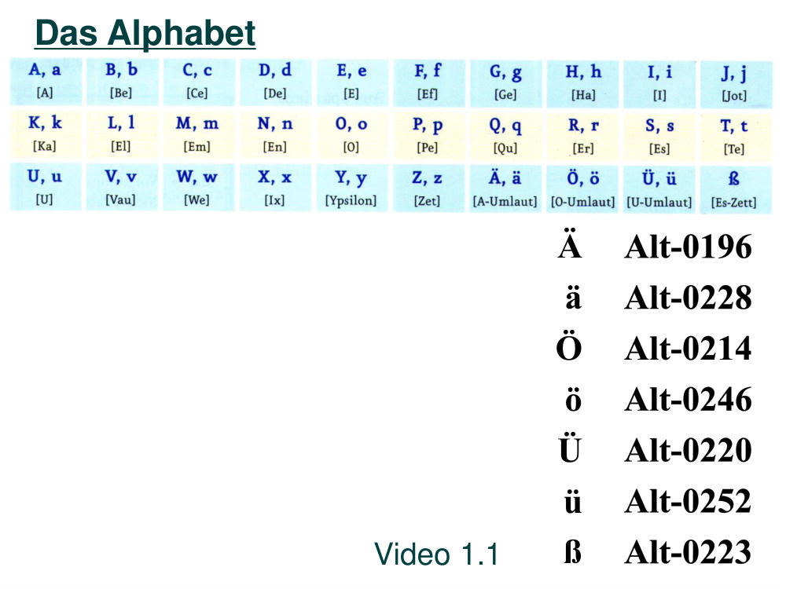
Rule: When someone says Wie bitte? (Pardon?), spell your name: Ich buchstabiere: …
Practise with the names from the audio:
Rule: Every pronoun has a "Person" number (1st, 2nd, 3rd) and is Singular (one) or Plural (more than one). Exams ask which pronoun belongs to which Person.
| Person | Pronoun | English | Arabic |
|---|---|---|---|
| 1st Singular | ich | I | أنا |
| 2nd Singular | du | you (a friend) | أنتَ / أنتِ |
| 3rd Singular | er / sie / es | he / she / it | هو / هي |
| 1st Plural | wir | we | نحن |
| 2nd Plural | ihr | you (a group of friends) | أنتم |
| 3rd Plural / polite | sie / Sie | they / you (polite) | هم / حضرتك |
Rule: Take the verb, drop -en, add the ending for the person: ich -e, du -st, er/sie/es -t, wir -en, ihr -t, sie/Sie -en. sein and haben are irregular (they break the pattern): learn them by heart.
| kommen يأتي | heißen يُدعى | sein يكون | haben يملك / عنده | |
|---|---|---|---|---|
| ich (1st sg.) | komme | heiße | bin | habe |
| du (2nd sg.) | kommst | heißt | bist | hast |
| er/sie/es (3rd sg.) | kommt | heißt | ist | hat |
| wir (1st pl.) | kommen | heißen | sind | haben |
| ihr (2nd pl.) | kommt | heißt | seid | habt |
| sie/Sie (3rd pl. / formal) | kommen | heißen | sind | haben |
More verbs from the slide (same endings):
Rule: Question word first, verb second, then the person. Look at the answer to choose the question word.
Rule: Ask with Wie heißt du? / Wie heißen Sie? Answer with Ich heiße … / Ich bin … / Mein Name ist … Show another person with Das ist …
Rule: Use Sie (polite) with Herr / Frau …, teachers and strangers; use du with friends and family. "How are you?" is Wie geht es Ihnen? (formal) or Wie geht es dir? / Wie geht's? (informal).
| German | English | Arabic |
|---|---|---|
| Sehr gut. | Very good. | جيد جداً |
| Gut, danke. | Good, thanks. | بخير، شكراً |
| Es geht. | So-so. / OK. | ماشي الحال |
| Nicht so gut. | Not so good. | لست بخير تماماً |
| Auch gut. | Also good. | بخير أيضاً |
Rule: Answer Woher? with aus + country: Ich komme aus Ägypten. A few countries need der: aus der Schweiz, aus der Türkei.
Rule: Say Ich bin + nationality, with no ein / eine. A woman usually adds -in. German is special: a man is Deutscher, a woman is Deutsche.
Rule: die Stadt → eine Stadt. der Staat → ein Staat. der Kontinent → ein Kontinent. Pattern: X ist ein / eine … in Y.
a ___ bist du? · b ___ geht es dir? · c ___ kommst du? · d ___ heißt du? · e Und ___ ist das? · f ___ bitte?
Left: a Vorname · b Hallo · c Frau · d Guten Morgen · e Alphabet · f ja · g Deutschland
Right: Tschüs · Guten Abend · buchstabieren · Familienname · Österreich · Herr · nein
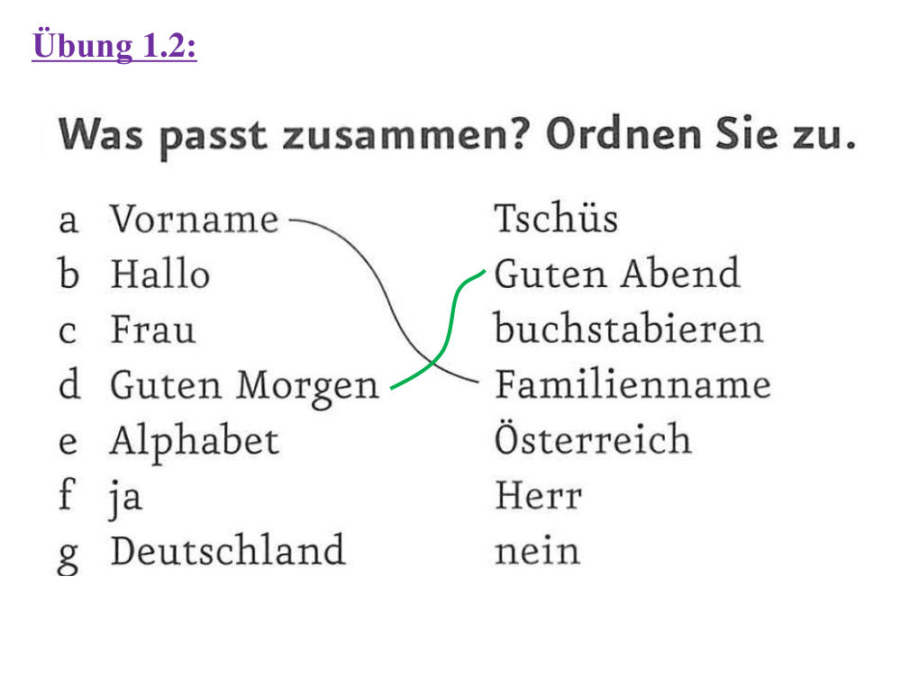
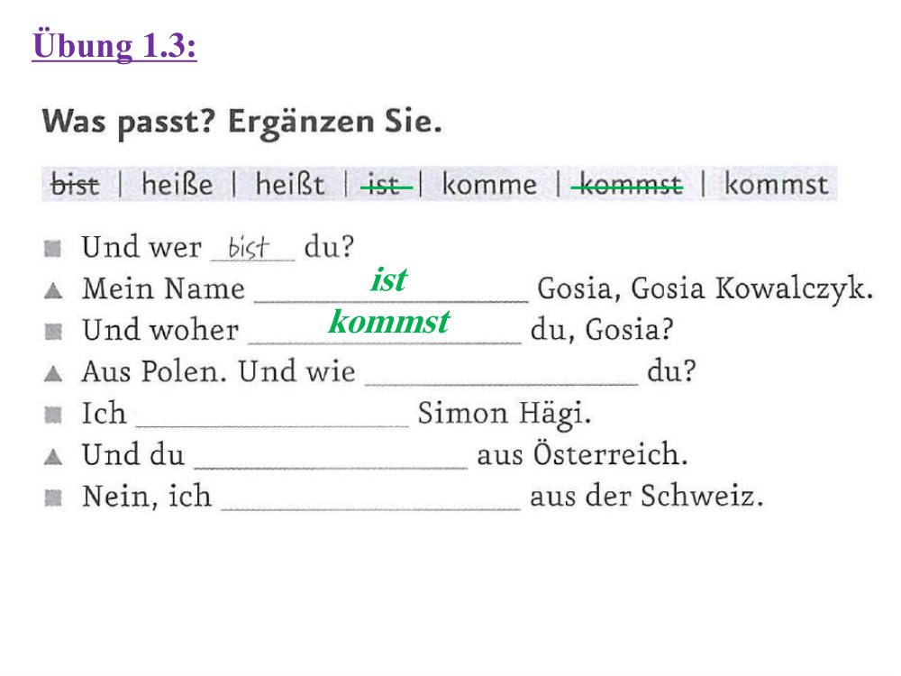
a ___ heißen Sie? · b ___ bist du? · c ___ geht es Ihnen? · e ___ geht es dir? · f ___ kommst du? · f (second) ___ kommst du? · g ___ wohnen Sie? · h ___ bitte?
a heißen / Sie / Wie · b Béatrice Collet / bin / Ich · c kommen / Sie / Woher · d Frankreich / komme / Ich / aus · e es / Ihnen / geht / Und / wie
Text 1: Guten Tag, ich heiße Topalidou. Mein Vorname ist Ioanna. Ich komme aus Griechenland. — Hello, my (family) name is Topalidou. My first name is Ioanna. I come from Greece.
Text 2: Hallo, ich bin Severin. Mein Familienname ist Kuhn. Ich komme aus Deutschland. — Hi, I'm Severin. My surname is Kuhn. I come from Germany.
1 Sie heißt Ioanna. · 2 Sie kommt aus Griechenland. · 3 Der Vorname ist Topalidou. · 4 Er heißt Severin Kuhn. · 5 Er kommt auch aus Griechenland.
David Schweiger, Österreich · Magdalena Klein, Deutschland · Tatjana und Maxim Popow, Russland · Cristiano und José Costa, Portugal · Simon Hägi, Schweiz · Béatrice Collet, Frankreich
How to talk about jobs (male and female forms), marital status, age and where you live, plus the numbers from 0 to a million and the regular verb endings.
| German | English | Arabic |
|---|---|---|
| der Lehrer, - | teacher (m) | مدرّس |
| die Lehrerin, -nen | teacher (f) | مدرّسة |
| der Dozent, -en | lecturer | محاضر |
| der Journalist, -en | journalist (m) | صحفي |
| die Journalistin, -nen | journalist (f) | صحفية |
| der Student, -en | student (m) | طالب جامعي |
| die Studentin, -nen | student (f) | طالبة جامعية |
| der Arzt, Ärzte | doctor (m) | طبيب |
| die Ärztin, -nen | doctor (f) | طبيبة |
| der Ingenieur, -e | engineer | مهندس |
| die Architektin, -nen | architect (f) | مهندسة معمارية |
| der Mechatroniker, - | mechatronics technician | فني ميكاترونكس |
| der Schauspieler, - | actor | ممثل |
| die Friseurin, -nen | hairdresser (f) | مصففة شعر / كوافيرة |
| der Busfahrer, - | bus driver | سائق أتوبيس |
| der Soldat, -en | soldier | جندي |
| German | English | Arabic |
|---|---|---|
| der Pilot, -en | pilot | طيار |
| der Schiffskapitän, -e | ship captain | قبطان سفينة |
| der Fahrer, - | driver | سائق |
| der Astronaut, -en | astronaut | رائد فضاء |
| der Schneider, - | tailor | خيّاط |
| der Polizist, -en | police officer | شرطي |
| der Sänger, - | singer | مغنٍّ |
| der Briefträger, - | postman | ساعي البريد |
| der Friseur, -e | hairdresser (m) | حلاق / مصفف شعر |
| der Hausarzt, -ärzte | family doctor, GP | طبيب عام / طبيب الأسرة |
| der Maler, - | painter | رسّام / دهّان |
| die Putzfrau, -en | cleaning lady | عاملة نظافة |
| der Fotograf, -en | photographer | مصوّر |
| der Bäcker, - | baker | خبّاز |
| der Richter, - | judge | قاضٍ |
| der Maurer, - | bricklayer | بنّاء |
| der Kameramann, -männer | cameraman | مصوّر تلفزيوني |
| der Detektiv, -e | detective | محقق |
| der Dirigent, -en | (music) conductor | قائد أوركسترا |
| der Schuhmacher, - | shoemaker | صانع أحذية / إسكافي |
| die Sekretärin, -nen | secretary (f) | سكرتيرة |
| der Verkäufer, - | salesman, shop assistant | بائع |
| die Verkäuferin, -nen | saleswoman | بائعة |
| der Kellner, - | waiter | نادل / جرسون |
| die Kellnerin, -nen | waitress | نادلة |
| die Krankenschwester, -n | nurse (f) | ممرضة |
| die Schülerin, -nen | school pupil (f) | تلميذة |
| die Historikerin, -nen | historian (f) | مؤرخة |
| German | English | Arabic |
|---|---|---|
| der Beruf, -e | profession, job | المهنة |
| der Job, -s | job (side job) | وظيفة / عمل |
| die Ausbildung, -en | vocational training, education | تدريب مهني / تأهيل |
| das Praktikum, Praktika | internship | تدريب عملي |
| die Universität, -en | university | الجامعة |
| das Bauingenieurwesen | civil engineering | الهندسة المدنية |
| arbeiten (als / bei) | to work (as / at a company) | يعمل (كـ / لدى) |
| machen | to do, to make | يفعل / يعمل |
| studieren | to study (at university) | يدرس (بالجامعة) |
| beruflich | professionally, for work | مهنياً |
| arbeitslos | unemployed | عاطل عن العمل |
| German | English | Arabic |
|---|---|---|
| der Familienstand | marital status | الحالة الاجتماعية |
| verheiratet | married | متزوج |
| ledig | single, unmarried | أعزب |
| Single | single | أعزب / غير مرتبط |
| geschieden | divorced | مطلّق |
| allein | alone | وحيداً |
| zusammen | together | معاً |
| das Kind, -er | child | طفل |
| das Alter | age | العمر |
| das Jahr, -e | year | سنة |
| der Wohnort, -e | place of residence | محل الإقامة |
| die Telefonnummer, -n | phone number | رقم الهاتف |
| wohnen | to live (reside) | يسكن |
| leben | to live | يعيش |
| nicht / kein(e) | not / no (none) | لا / ليس |
Rule: Same endings as in Lektion 1 (ich -e, du -st, er -t …). If the stem ends in -t or -d (arbeit-, red-), add an extra e: du arbeitest, er arbeitet.
| wohnen يسكن | machen يفعل | arbeiten يعمل | |
|---|---|---|---|
| ich | wohne | mache | arbeite |
| du | wohnst | machst | arbeitest |
| er/sie/es | wohnt | macht | arbeitet |
| wir | wohnen | machen | arbeiten |
| ihr | wohnt | macht | arbeitet |
| sie/Sie | wohnen | machen | arbeiten |
Rule: Say the job with no article: Ich bin Lehrer. A woman adds -in: Lehrerin. Use als + job (as), bei + company (at), and von Beruf (by profession).
Rule: Learn the fixed pairs: eine Ausbildung machen (vocational training), ein Praktikum machen (internship), einen Job haben. No work: arbeitslos. A woman who works at home: Hausfrau.
Rule: Use sein + the word: verheiratet, ledig, Single, geschieden. These words never change: only the verb changes.
Rule: Age: Wie alt bist du? / Wie alt sind Sie? → Ich bin + number + Jahre alt. Home: Wo wohnst du? → Ich wohne / lebe in …
Rule: Learn 0–19 and the tens. From 21 to 99, say the ones first, then und, then the tens, as one word (like Arabic واحد وعشرون).
| Number | German | Number | German |
|---|---|---|---|
| 0 | null | 10 | zehn |
| 1 | eins | 11 | elf |
| 2 | zwei | 12 | zwölf |
| 3 | drei | 13 | dreizehn |
| 4 | vier | 14 | vierzehn |
| 5 | fünf | 15 | fünfzehn |
| 6 | sechs | 16 | sechzehn |
| 7 | sieben | 17 | siebzehn |
| 8 | acht | 18 | achtzehn |
| 9 | neun | 19 | neunzehn |
| 20 | zwanzig | 70 | siebzig |
| 30 | dreißig | 80 | achtzig |
| 40 | vierzig | 90 | neunzig |
| 50 | fünfzig | 100 | (ein)hundert |
| 60 | sechzig | 1.000 | (ein)tausend |
The blanks on the slides are filled in above: 13 dreizehn, 15 fünfzehn, 40 vierzig, 70 siebzig, 90 neunzig, 100 hundert.
Rule: hundert and tausend join the number into one long word. Years up to 1999 are said in hundreds; from 2000 on, use tausend.
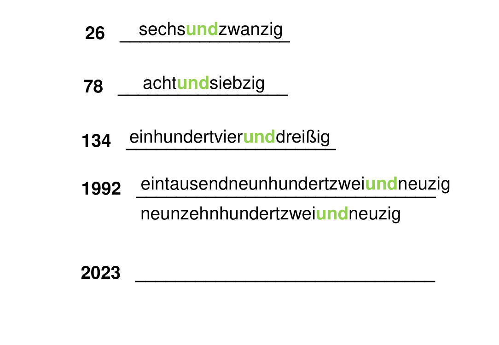
Rule: + plus, − minus, × mal, ÷ durch, = ist gleich. Read both numbers first, then do the maths. Money: 100 Cent = 1 Euro.
Rule: Yes/no question: verb first, then the person. W-question: question word, then verb, then person. The verb ending must match the pronoun you are given.
Rule: Match each question to its topic word. Look at the verb: arbeiten → job, studieren → studies.
1 Old bearded man in a captain's cap with pipe at a ship's wheel: Pilot / Schiffskapitän / Fahrer
2 Boy in a space suit: Astronaut / Schneider / Polizist
3 Man in uniform with a bag full of letters: Sänger / Soldat / Briefträger
4 Man with a jacket on a hanger, a sewing machine and a tape measure: Friseur / Schneider / Hausarzt
5 Woman with a mop, bucket and broom: Maler / Putzfrau / Fotograf
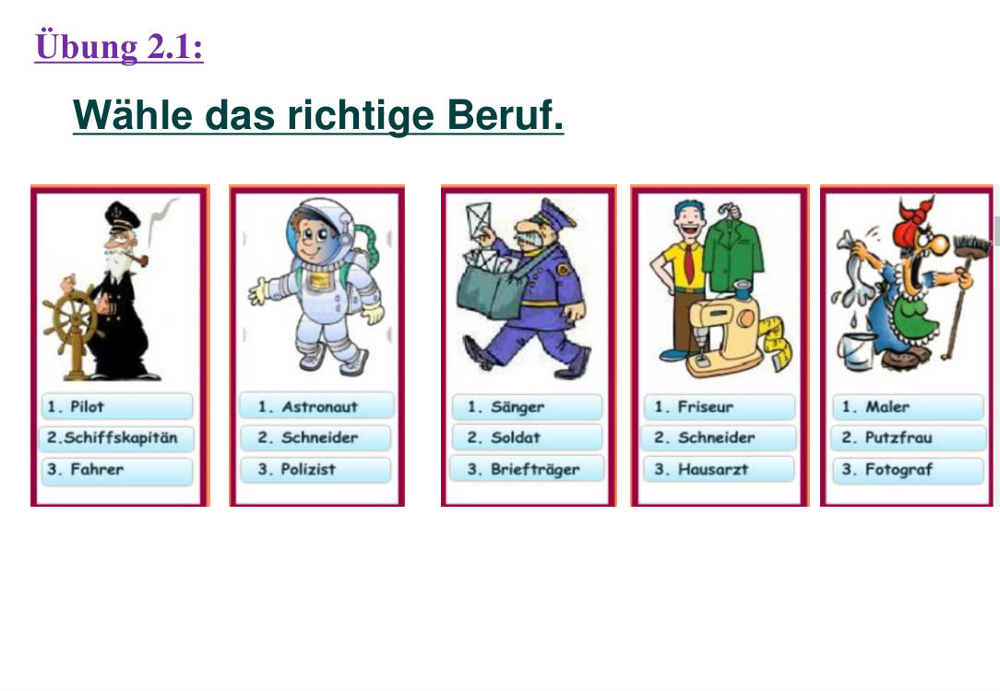
1 Woman cutting another woman's hair with scissors and comb: Arzt / Friseur / Polizist
2 Man in a cap holding a steering wheel: Polizist / Bäcker / Fahrer
3 Man in a black robe with a gavel behind a bench: Richter / Maurer / Journalist
4 Man singing into a microphone with a guitar: Fotograf / Kameramann / Sänger
5 Old man hammering a shoe: Detektiv / Dirigent / Schumacher
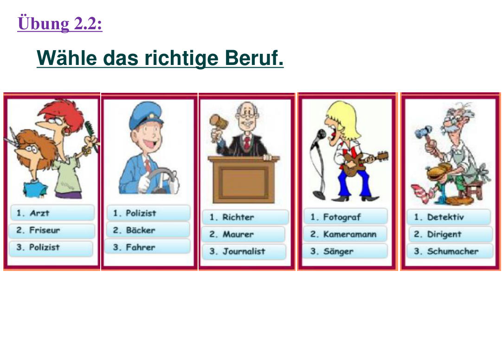
1 Woman with a hard hat and plans (example: Architektin) · 2 Older man with a book in front of a blackboard · 3 Performer on a dark stage · 4 Young man selling vegetables at a market stall · 5 Woman at a desk on the phone, writing · 6 Smiling woman in a white coat with a stethoscope
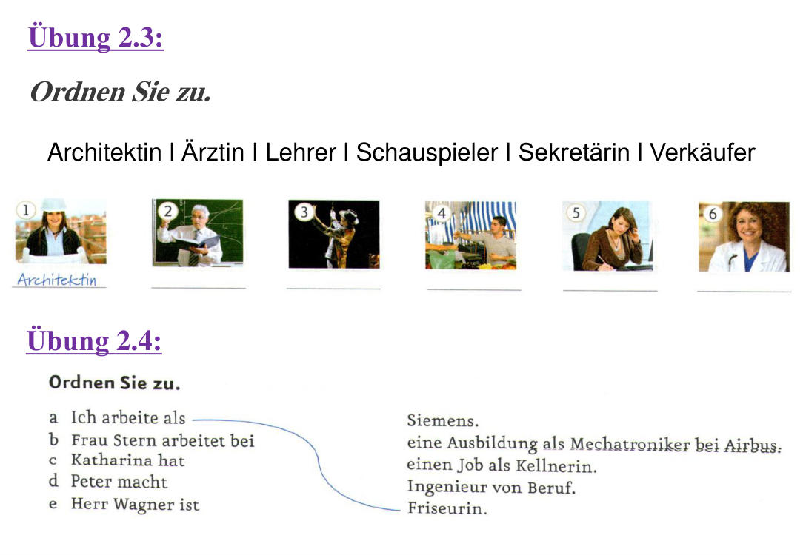
a Ich arbeite als · b Frau Stern arbeitet bei · c Katharina hat · d Peter macht · e Herr Wagner ist
— Siemens. · eine Ausbildung als Mechatroniker bei Airbus. · einen Job als Kellnerin. · Ingenieur von Beruf. · Friseurin.
Ich heiße Abdalla Alhamad und komme aus Saudi-Arabien. Ich wohne in Jeddah. Ich bin Student und habe einen Job als Kellner. Ich bin 22 Jahre alt, verheiratet und habe keine Kinder.
— My name is Abdalla Alhamad and I come from Saudi Arabia. I live in Jeddah. I am a student and have a job as a waiter. I am 22 years old, married and have no children.
اسمي عبد الله الحمد وأنا من السعودية. أسكن في جدة. أنا طالب ولدي عمل كنادل. عمري 22 عاماً، متزوج وليس لدي أطفال.
Was machst du beruflich?
a Ich mache eine Ausbildung als Krankenschwester. (example) · b Ich ___ Schülerin. · c Ich ___ Historikerin von Beruf. · d Ich ___ ein Praktikum bei Vestas. · e Ich ___ als Journalistin. · f Ich ___ einen Job als Verkäufer.
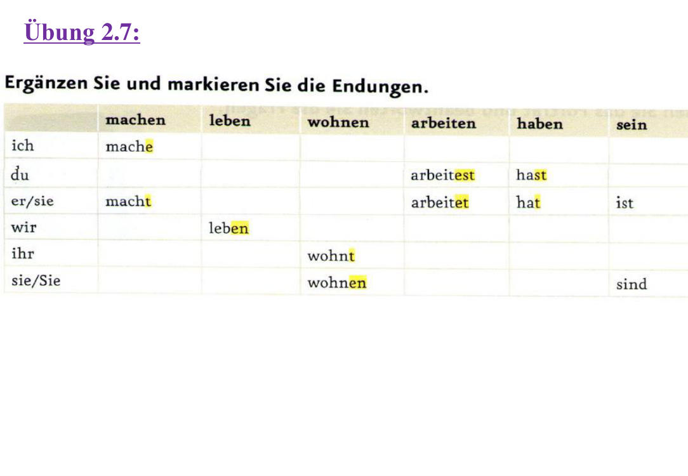
| machen | leben | wohnen | arbeiten | haben | sein | |
|---|---|---|---|---|---|---|
| ich | mache | lebe | wohne | arbeite | habe | bin |
| du | machst | lebst | wohnst | arbeitest | hast | bist |
| er/sie | macht | lebt | wohnt | arbeitet | hat | ist |
| wir | machen | leben | wohnen | arbeiten | haben | sind |
| ihr | macht | lebt | wohnt | arbeitet | habt | seid |
| sie/Sie | machen | leben | wohnen | arbeiten | haben | sind |
a) Was machst (machen) du beruflich? (example)
b) Ich ___ (sein) Studentin und ___ (haben) einen Job als Verkäuferin.
c) Wo ___ (wohnen) ihr?
d) Wir ___ wohnen in Kairo.
e) Wir ___ (leben) zusammen und ___ (haben) ein Kind.
f) Wer ___ (sein) das? Das ___ (sein) Ahmed und Tarek.
a 030 / 52 79 91 36 — or — 030 / 52 79 91 63
b 0171 / 85 67 03 25 — or — 0171 / 58 67 02 25
c 06391 / 32 44 67 — or — 06391 / 32 44 57
d 08233 / 25 38 57 — or — 08233 / 52 36 59
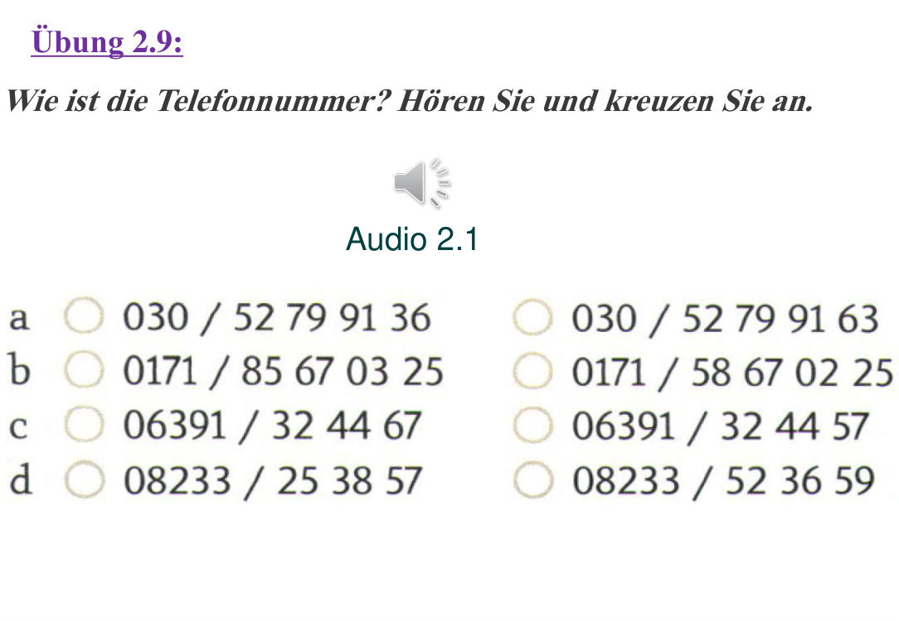
a fünfzehn + siebenunddreißig = ___ · b sechsundfünfzig + acht = ___ · c dreiunddreißig + neun = ___ · d fünfundzwanzig + siebenundsechzig = ___
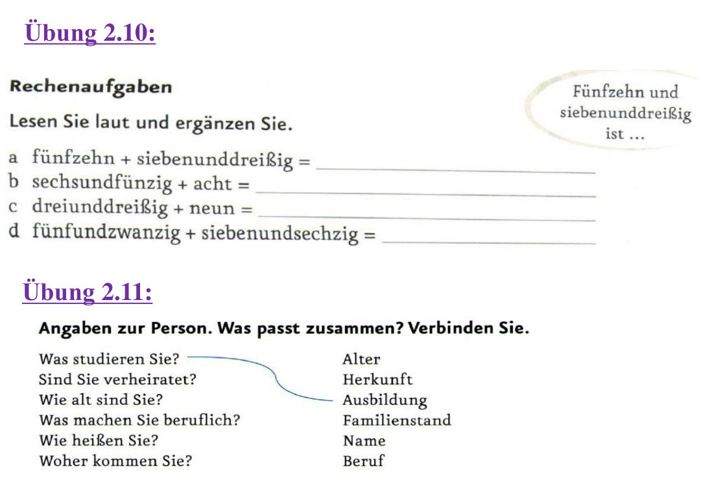
Questions: Was studieren Sie? · Sind Sie verheiratet? · Wie alt sind Sie? · Was machen Sie beruflich? · Wie heißen Sie? · Woher kommen Sie?
Topics: Alter · Herkunft · Ausbildung · Familienstand · Name · Beruf
This lecture teaches family members (singular and plural), the article rule for people, languages and countries, possessive pronouns (mein, dein, sein …), the answers ja / nein / doch, and verb conjugation (sprechen, studieren, heiraten, lesen, ergänzen).
| German | Plural | English | Arabic |
|---|---|---|---|
| der Vater | die Väter | father | الأب / الآباء |
| die Mutter | die Mütter | mother | الأم / الأمهات |
| der Großvater (der Opa) | die Großväter (die Opas) | grandfather (grandpa) | الجد / الجدود |
| die Großmutter (die Oma) | die Großmütter (die Omas) | grandmother (grandma) | الجدة / الجدات |
| der Sohn | die Söhne | son | الابن / الأبناء |
| die Tochter | die Töchter | daughter | الابنة / البنات |
| der Bruder | die Brüder | brother | الأخ / الإخوة |
| die Schwester | die Schwestern | sister | الأخت / الأخوات |
| der Enkel | die Enkel | grandson | الحفيد / الأحفاد |
| die Enkelin | die Enkelinnen | granddaughter | الحفيدة / الحفيدات |
| die Eltern | (plural only) | parents | الوالدان |
| die Geschwister | (plural only) | siblings (brothers and sisters) | الإخوة والأخوات (الأشقاء) |
| der Onkel | die Onkel | uncle | العم / الخال |
| die Tante | die Tanten | aunt | العمة / الخالة |
| der Neffe | die Neffen | nephew | ابن الأخ / ابن الأخت |
| die Nichte | die Nichten | niece | ابنة الأخ / ابنة الأخت |
| der Cousin | die Cousins | (male) cousin | ابن العم / ابن الخال |
| die Cousine | die Cousinen | (female) cousin | ابنة العم / ابنة الخال |
| der Ehemann | die Ehemänner | husband | الزوج / الأزواج |
| die Ehefrau | die Ehefrauen | wife | الزوجة / الزوجات |
| der Bräutigam | die Bräutigame | bridegroom | العريس / العرسان |
| die Braut | die Bräute | bride | العروس / العرائس |
| German | English | Arabic |
|---|---|---|
| die Frau | woman / wife / Mrs | المرأة / الزوجة |
| die Freundin | (female) friend / girlfriend | الصديقة |
| der Mann | man / husband | الرجل / الزوج |
| der Freund | (male) friend / boyfriend | الصديق |
| das Baby | baby | الرضيع |
| das Mädchen | girl | الفتاة / البنت |
| das Kind | child | الطفل |
| der Hund | dog | الكلب |
| German | English | Arabic |
|---|---|---|
| der Ingenieur | engineer | المهندس |
| der Maschinenbauingenieur | mechanical engineer | مهندس ميكانيكا |
| der Bauingenieur | civil engineer | مهندس مدني |
| die Hausfrau | housewife | ربة المنزل |
| die Verkäuferin / der Verkäufer | saleswoman / salesman | البائعة / البائع |
| die Studenten | students | الطلبة |
| die Schauspielerin | actress | الممثلة |
| die Lehrerin | (female) teacher | المعلمة |
| der Journalist | journalist | الصحفي |
| die Rentnerin | (female) pensioner, retired | المتقاعدة |
| der IT-Spezialist | IT specialist | أخصائي تكنولوجيا المعلومات |
| der Programmierer | programmer | المبرمج |
| der Kellner / die Kellnerin | waiter / waitress | النادل / النادلة |
| die Sekretärin | secretary | السكرتيرة |
| die Krankenschwester | nurse | الممرضة |
| verheiratet | married | متزوج |
| geschieden | divorced | مطلق |
| single / ledig | single | أعزب |
| genau wie | just like | تمامًا مثل |
| Country | Language | English | Arabic |
|---|---|---|---|
| Ägypten | Arabisch | Egypt — Arabic | مصر — العربية |
| Deutschland | Deutsch | Germany — German | ألمانيا — الألمانية |
| Frankreich | Französisch | France — French | فرنسا — الفرنسية |
| England | Englisch | England — English | إنجلترا — الإنجليزية |
| China | Chinesisch | China — Chinese | الصين — الصينية |
| Österreich | Deutsch | Austria — German | النمسا — الألمانية |
| die USA (die Vereinigten Staaten von Amerika) | Englisch | USA — English | الولايات المتحدة الأمريكية — الإنجليزية |
| Spanien | Spanisch | Spain — Spanish | إسبانيا — الإسبانية |
| Italien | Italienisch | Italy — Italian | إيطاليا — الإيطالية |
| Russland | Russisch | Russia — Russian | روسيا — الروسية |
| Brasilien | Portugiesisch | Brazil — Portuguese | البرازيل — البرتغالية |
| die Schweiz | Deutsch, Französisch, Italienisch | Switzerland | سويسرا |
| Griechenland | Griechisch | Greece — Greek | اليونان — اليونانية |
| die Fremdsprache | foreign language | لغة أجنبية | |
| die Muttersprache | mother tongue | اللغة الأم | |
| die Hauptsprache | main language | اللغة الأساسية |
Rule: a woman or girl takes die, a man or boy takes der. Two exceptions are neuter (das): das Baby, das Mädchen. Every plural takes die.
| Article | People |
|---|---|
| die ♀ | die Frau, die Freundin, die Tochter |
| der ♂ | der Mann, der Freund, der Sohn |
| das | das Baby, das Mädchen |
| die (plural) | die Väter, die Söhne, die Eltern |
Rule: read die Tochter meiner Mutter as "my mother's daughter", then name the person. meiner just means "of my".
Rule: use sein to describe (Meine Familie ist groß) and haben to say who you have (Ich habe zwei Brüder). After haben, a der-word takes einen.
Rule: after sein or als, say the job with no article: Sie ist Verkäuferin. Women add -in.
Rule: pick the word for the owner (ich → mein). Then add -e if the thing is a die-word or plural (meine Frau, meine Freunde). der- and das-words get no ending (mein Vater, mein Kind).
| Owner | English | der / das | die / plural |
|---|---|---|---|
| ich | my | mein | meine |
| du | your (one friend) | dein | deine |
| er / es | his / its | sein | seine |
| sie | her | ihr | ihre |
| wir | our | unser | unsere |
| ihr | your (several friends) | euer | eure |
| sie (plural) | their | ihr | ihre |
| Sie (polite) | your (polite) | Ihr | Ihre |
نستخدم mein مع المذكر والمحايد، و meine مع المؤنث والجمع. ونفس القاعدة لباقي الضمائر.
Rule: when a der-word is the Akkusativ (the object: the thing you find, like, have), add -en: mein → meinen, ihr → ihren. die, das and plural stay the same.
Rule: sprechen and lesen change their vowel only with du and er/sie/es (sprichst, liest). Stems ending in -t add an extra -e- (du heiratest).
| sprechen يتحدث | studieren يدرس | heiraten يتزوج | lesen يقرأ | ergänzen يكمل | |
|---|---|---|---|---|---|
| ich | spreche | studiere | heirate | lese | ergänze |
| du | sprichst | studierst | heiratest | liest | ergänzt |
| er/sie/es | spricht | studiert | heiratet | liest | ergänzt |
| wir | sprechen | studieren | heiraten | lesen | ergänzen |
| ihr | sprecht | studiert | heiratet | lest | ergänzt |
| sie/Sie | sprechen | studieren | heiraten | lesen | ergänzen |
Rule: In + country + sprechen die Menschen (or spricht man) + language. Languages have no article and start with a capital letter.
Rule: for a yes/no question, put the verb in position 1, then the subject. A W-question (Wer, Was, Welche …) puts the W-word first and the verb second.
Rule: ja = yes to a normal question. nein = no. doch = "yes, actually!" when you disagree with a question or sentence that has nicht or kein.
ja = نعم للسؤال العادي، nein = لا، doch = بلى (بالعكس) كرد على سؤال منفي.
Word box: der Sohn · der Vater · der Großvater · die Großmutter · die Tochter · das Baby · die Mutter · der Hund. The picture shows a family with numbers 1–8: (1) a man, (2) a little girl, (3) a baby, (4) a woman holding the baby, (5) an older woman with glasses, (6) a boy, (7) a white dog in the boy's arms, (8) an older man with glasses and a moustache.
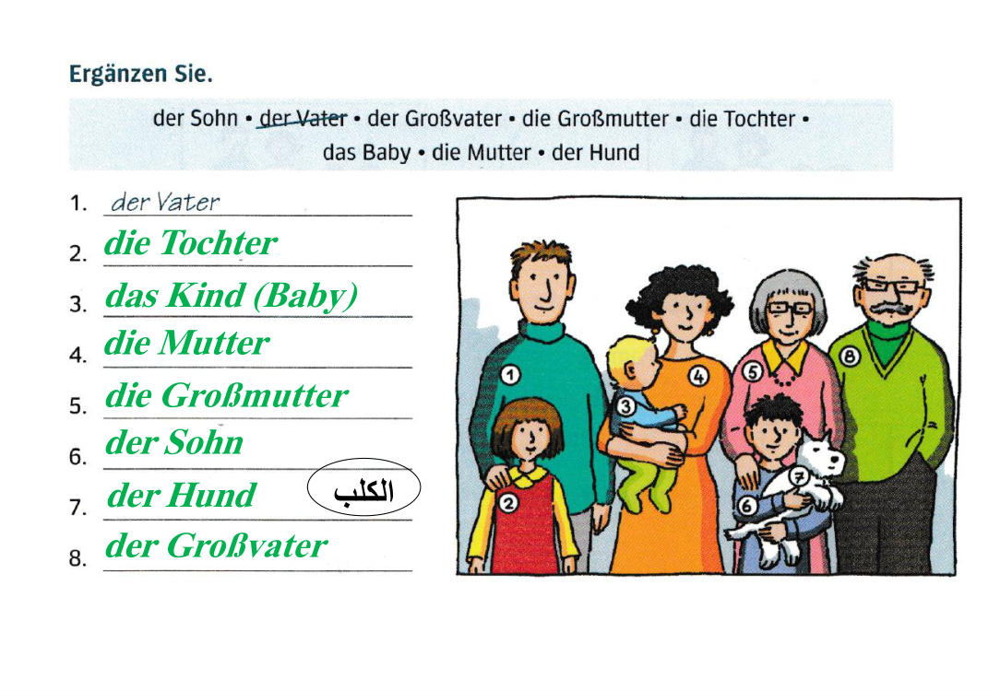
a Österreich · b die Vereinigten Staaten von Amerika · c Spanien · d Italien · e Russland · f Brasilien
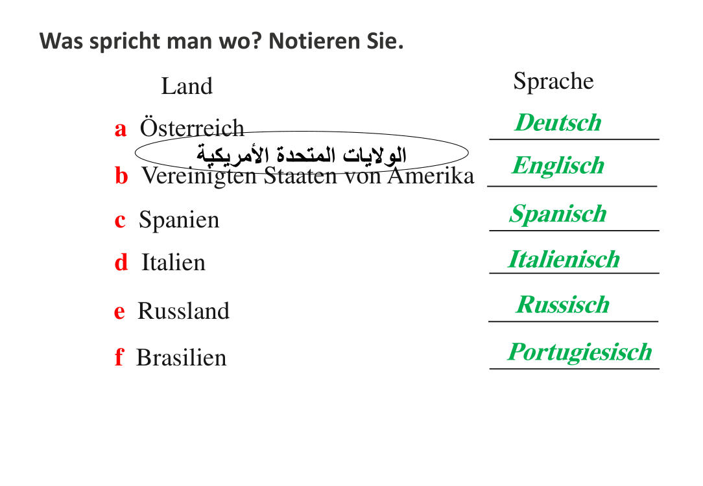
a wer / das / ist ___?
b das / Frau / ist / deine ___.
c das / nein / Schwester / ist / meine ___.
d verheiratet / du / bist ___?
e geschieden / nicht / bin / ich ___.
a Ist deine Schwester verheiratet? — ___, meine Schwester ist verheiratet.
b Leben deine Eltern in Kafr ElSheikh? — ___, meine Eltern leben nicht in Kafr ElSheikh.
c Du studierst nicht, oder? — ___, ich studiere Mechatronik.
d Deine Schwester ist auch Schauspielerin, oder? — ___, sie ist auch Schauspielerin.
e Deine Frau heißt nicht Sandra, oder? — ___, sie heißt Sandra.
Box: dein · deine · mein · mein · mein · meine · meine
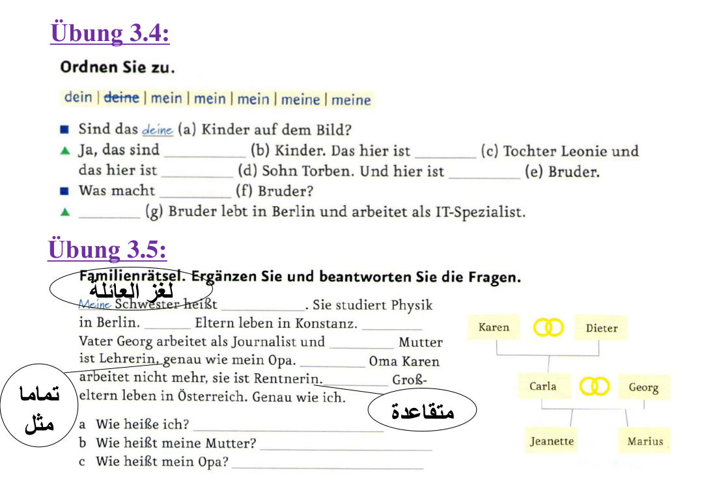
Family tree: Karen ∞ Dieter → their daughter Carla. Carla ∞ Georg → their children Jeanette and Marius.
Text: Meine Schwester heißt ___. Sie studiert Physik in Berlin. ___ Eltern leben in Konstanz. ___ Vater Georg arbeitet als Journalist und ___ Mutter ist Lehrerin, genau wie mein Opa. ___ Oma Karen arbeitet nicht mehr, sie ist Rentnerin. ___ Großeltern leben in Österreich. Genau wie ich.
a Wie heiße ich? · b Wie heißt meine Mutter? · c Wie heißt mein Opa?
Eltern: Vater und ___ · ___: ___ und Schwester · Kinder: Sohn und ___ · ___: Oma / Opa und Großmutter / ___ · Enkelkinder: Enkel und ___
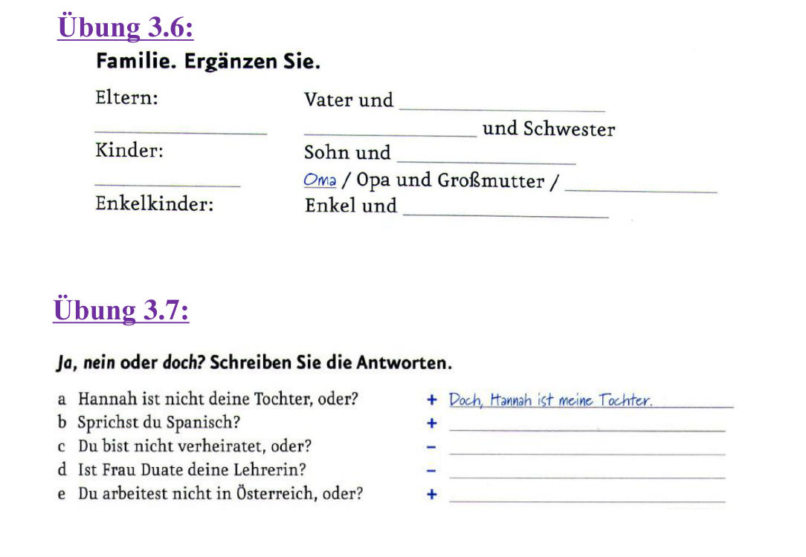
a Hannah ist nicht deine Tochter, oder? (+) — Doch, Hannah ist meine Tochter.
b Sprichst du Spanisch? (+)
c Du bist nicht verheiratet, oder? (−)
d Ist Frau Duate deine Lehrerin? (−)
e Du arbeitest nicht in Österreich, oder? (+)
a Thea / ist / deine Tochter ___?
b sprechen / welche Sprachen / deine Kinder ___?
c ist / dein / Vater / das ___?
d verheiratet / bist / du ___?
e wo / du / wohnst ___?
a Ja, Thea ist meine Tochter.
b ___ Französisch, Englisch und Deutsch.
c Ja, das ___.
d Nein, ich ___.
e ___ Tanta.
Crossword with 6 pictures: (a) a waiter carrying a tray with a bottle and glasses — KELLNER given; (b) a man in overalls repairing a machine with a screwdriver; (c) a woman in an evening dress holding an award statue; (d) a man in a white coat at a cash register; (e) a man holding scissors and a comb; (f) a woman in a blue uniform adjusting an IV drip. The highlighted column gives the solution word.
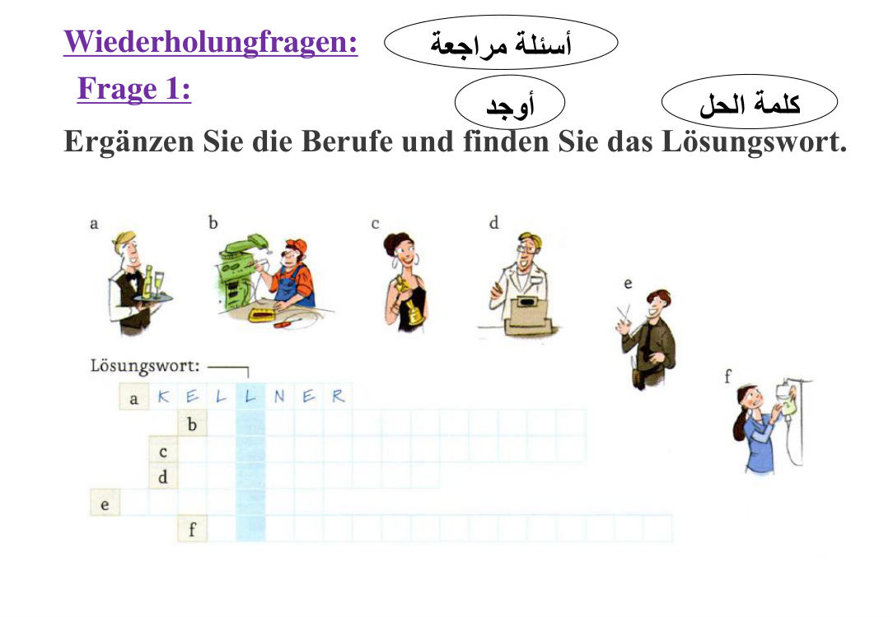
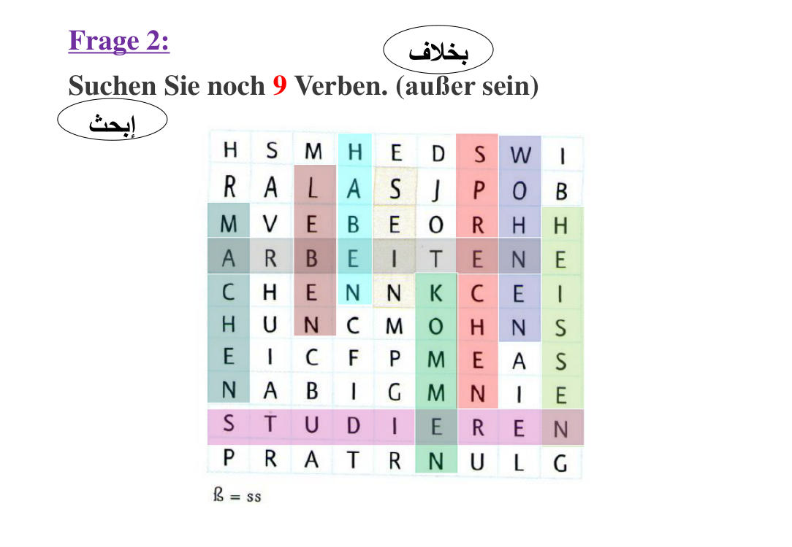
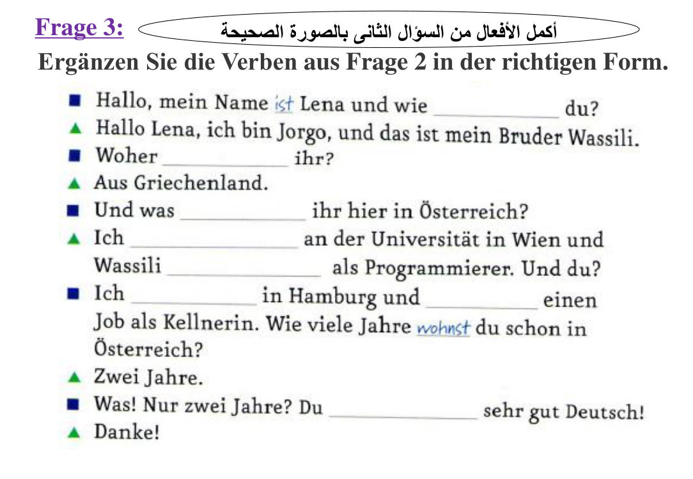
Profile: Name: Isabel · Adresse: Veilchenweg 37, Oberhausen · Familienstand: Single · Beruf: Sekretärin · Herkunft: Schweiz
a Köln wohnen: Isabel wohnt nicht in Köln.
b als Krankenschwester arbeiten
c verheiratet sein
d aus Österreich kommen
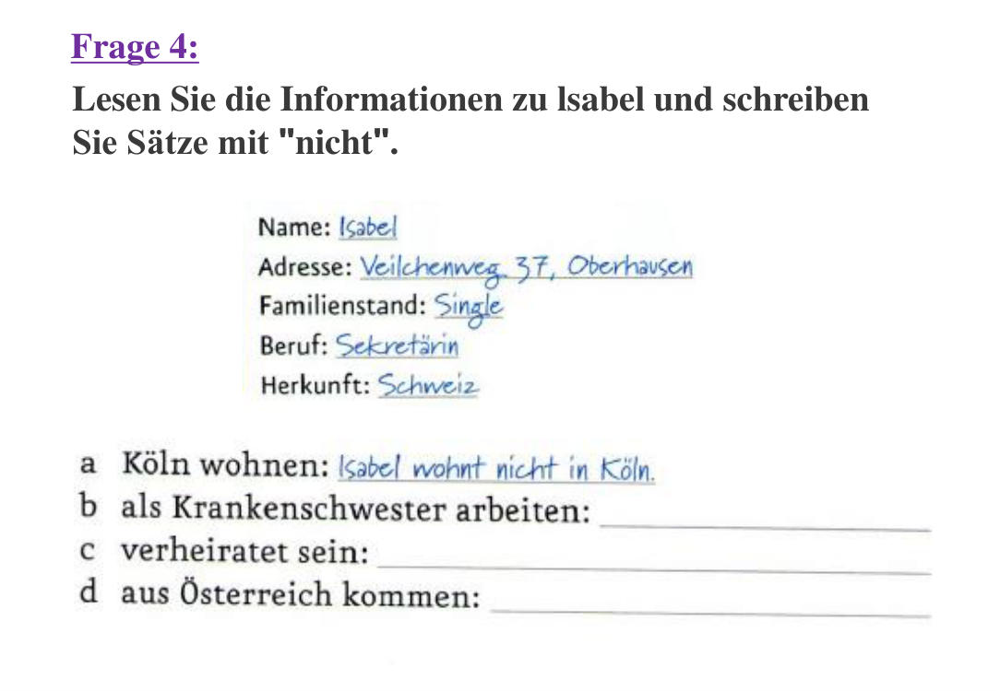
This lecture teaches the rooms of a house and the furniture in each room, adjectives to describe furniture (schön, teuer, zu klein …), shopping phrases and prices, the personal pronouns er / sie / es for things, and the verbs finden, kaufen, einkaufen, brauchen, wollen.
| German | Plural | English | Arabic |
|---|---|---|---|
| das Haus | die Häuser | house | البيت |
| das Dach | die Dächer | roof | السقف |
| das Fenster | die Fenster | window | النافذة |
| der Schornstein | die Schornsteine | chimney | المدخنة |
| der Dachboden | die Dachböden | attic | العلية |
| die Toilette | die Toiletten | toilet | المرحاض |
| das Badezimmer | die Badezimmer | bathroom | الحمام |
| das Schlafzimmer | die Schlafzimmer | bedroom | غرفة النوم |
| die Küche | die Küchen | kitchen | المطبخ |
| die Garage | die Garagen | garage | الجراج |
| das Wohnzimmer | die Wohnzimmer | living room | غرفة المعيشة |
| das Arbeitszimmer | die Arbeitszimmer | study / home office | غرفة المكتب |
| die Haustür | die Haustüren | front door | باب البيت |
| der Keller | die Keller | basement / cellar | القبو |
| der Garten | die Gärten | garden | الحديقة |
| die Treppe | die Treppen | stairs / staircase | السلم / الدرج |
| der Flur | die Flure | hallway | الممر / الطرقة |
| der Balkon | die Balkone | balcony | الشرفة |
| die Ecke | die Ecken | corner | الركن |
| German | Plural | English | Arabic |
|---|---|---|---|
| der Kamin | die Kamine | fireplace | المدفأة |
| die Lampe | die Lampen | lamp | المصباح |
| der Sessel | die Sessel | armchair | الكرسي الفوتيه / المقعد |
| der Teppich | die Teppiche | carpet / rug | السجادة |
| die Couch | die Couchs | couch | الكنبة |
| das Sofa | die Sofas | sofa | الأريكة |
| die Vase | die Vasen | vase | المزهرية |
| der Tisch | die Tische | table | المنضدة / الطاولة |
| der Esstisch | die Esstische | dining table | طاولة الطعام |
| der Stuhl | die Stühle | chair | الكرسي |
| der Hocker | die Hocker | stool | المقعد بدون ظهر (الطبلية) |
| die Pflanze | die Pflanzen | plant | النبتة |
| German | Plural | English | Arabic |
|---|---|---|---|
| das Bett | die Betten | bed | السرير |
| der Abfalleimer | die Abfalleimer | rubbish bin | سلة القمامة |
| die Decke | die Decken | blanket | البطانية |
| das Bücherregal | die Bücherregale | bookshelf | رف الكتب / المكتبة |
| das Bild | die Bilder | picture | الصورة / اللوحة |
| das Spielzeug | die Spielzeuge | toy(s) | اللعبة / اللعب |
| die Uhr | die Uhren | clock | الساعة |
| der Vorhang | die Vorhänge | curtain | الستارة |
| die Tür | die Türen | door | الباب |
| das Fenster | die Fenster | window | النافذة |
| die Lampe | die Lampen | lamp | المصباح |
| das Kissen | die Kissen | pillow / cushion | الوسادة |
| der Spiegel | die Spiegel | mirror | المرآة |
| der Kleiderschrank | die Kleiderschränke | wardrobe | دولاب الملابس |
| der Schrank | die Schränke | cupboard / wardrobe | الدولاب |
| die Kommode | die Kommoden | chest of drawers | الكومودينو / خزانة الأدراج |
| der Nachttisch | die Nachttische | bedside table | الكومودينو بجانب السرير |
| German | Plural | English | Arabic |
|---|---|---|---|
| das Regal | die Regale | shelf | الرف |
| die Wand | die Wände | wall | الحائط |
| der Computer | die Computer | computer | الكمبيوتر |
| der Schreibtisch | die Schreibtische | desk | المكتب |
| der Papierkorb | die Papierkörbe | wastepaper basket | سلة المهملات |
| German | Plural | English | Arabic |
|---|---|---|---|
| der Herd | die Herde | stove / cooker | البوتاجاز / الموقد |
| die Spüle | die Spülen | kitchen sink | حوض المطبخ |
| der Backofen | die Backöfen | oven | الفرن |
| der Kühlschrank | die Kühlschränke | fridge | الثلاجة |
| der Geschirrspüler | die Geschirrspüler | dishwasher | غسالة الأطباق |
| die Spülmaschine | die Spülmaschinen | dishwasher | غسالة الأطباق |
| die Mikrowelle | die Mikrowellen | microwave | الميكروويف |
| die Kaffeemühle | die Kaffeemühlen | coffee grinder | مطحنة القهوة |
| German | Plural | English | Arabic |
|---|---|---|---|
| die Dusche | die Duschen | shower | الدش |
| der Spiegel | die Spiegel | mirror | المرآة |
| die Wanne / die Badewanne | die Wannen / die Badewannen | bathtub | البانيو |
| das Klo | die Klos | loo / toilet | المرحاض |
| das Waschbecken | die Waschbecken | washbasin | الحوض |
| das Klopapier | — | toilet paper | ورق التواليت |
| die Waschmaschine | die Waschmaschinen | washing machine | الغسالة |
| German | Plural | English | Arabic |
|---|---|---|---|
| die Bank | die Bänke | bench | المقعد الطويل (الدكة) |
| das Schuhregal | die Schuhregale | shoe rack | جزامة |
| die Garderobe | die Garderoben | coat stand | شماعة الملابس |
| German | Opposite | English | Arabic |
|---|---|---|---|
| schön | hässlich | beautiful — ugly | جميل — قبيح (دميم) |
| groß | klein | big — small | كبير — صغير |
| lang | kurz | long — short | طويل — قصير |
| teuer | billig / günstig | expensive — cheap / good value | غالٍ — رخيص / مناسب السعر |
| bequem | unbequem | comfortable — uncomfortable | مريح — غير مريح |
| praktisch | unpraktisch | practical — impractical | عملي — غير عملي |
| modern | altmodisch | modern — old-fashioned | عصري — قديم الطراز |
| gut | schlecht | good — bad | جيد — سيئ |
| schwer | leicht | heavy — light | ثقيل — خفيف |
| hell | dunkel | bright — dark | مضيء — مظلم |
| zu … | too … (zu klein = too small) | زيادة عن اللزوم (صغير جدًا) |
| German | English | Arabic |
|---|---|---|
| die Hilfe | help | المساعدة |
| der Verkäufer | salesman | البائع |
| die Kundin / der Kunde | (female / male) customer | الزبونة / الزبون |
| das Gespräch | conversation | المحادثة |
| das Sonderangebot | special offer | عرض خاص (أوكازيون) |
| der Designer | designer | المصمم |
| der Euro / der Cent | euro / cent | اليورو / السنت |
| das Möbel / die Möbel (pl) | piece of furniture / furniture | قطعة أثاث / الأثاث |
| finden | to find; to think (an opinion) | يجد / يرى |
| kaufen | to buy | يشتري |
| einkaufen | to go shopping | يتسوق |
| brauchen | to need | يحتاج |
| wollen | to want | يريد |
| kosten | to cost | يكلف |
| helfen | to help | يساعد |
Rule: learn every noun with its article. In a gap question, look at the verb first: sind means plural, so the article is die.
Rule: thing + ist / sind + adjective. After sein the adjective never changes. Learn adjectives in opposite pairs; many opposites just add un-.
| Adjective | Opposite | English |
|---|---|---|
| modern | altmodisch | modern / old-fashioned |
| bequem | unbequem | comfortable / uncomfortable |
| praktisch | unpraktisch | practical / impractical |
| schön | hässlich | beautiful / ugly |
| billig, günstig | teuer | cheap / expensive |
| groß | klein | big / small |
| hell | dunkel | bright / dark |
| lang | kurz | long / short |
Rule: to say "it", match the noun's article: der → er, die → sie, das → es, plural → sie.
| Article | Pronoun |
|---|---|
| der | er |
| die | sie |
| das | es |
| die (plural) | sie |
Rule: kaufen and brauchen are regular. finden adds -e- (du findest). wollen is irregular (ich will, er will). einkaufen splits: ein goes to the end.
| finden يجد | kaufen يشتري | einkaufen يتسوق | brauchen يحتاج | wollen يريد | |
|---|---|---|---|---|---|
| ich | finde | kaufe | kaufe ein | brauche | will |
| du | findest | kaufst | kaufst ein | brauchst | willst |
| er/sie/es | findet | kauft | kauft ein | braucht | will |
| wir | finden | kaufen | kaufen ein | brauchen | wollen |
| ihr | findet | kauft | kauft ein | braucht | wollt |
| sie/Sie | finden | kaufen | kaufen ein | brauchen | wollen |
Rule: the thing you have, need or buy is the Akkusativ (the object). Only der-words change: ein → einen, der → den. die (eine) and das (ein) stay the same.
Rule: ask Wie findest du …? and answer Ich finde … + adjective. finden takes the Akkusativ, so der → den / meinen.
Rule: bitte means please, here you go, or (in Wie bitte?) pardon? Mid-sentence it is written in lowercase.
bitte = لو سمحت / من فضلك / تفضل / عفوًا (حسب الموقف).
Rule: ask Was kostet …? or Wie viel kostet …? Answer: euros + Euro + cents (no word "Cent"). Under one euro, say Cent.
نقول عدد اليورو ثم كلمة Euro ثم السنتات بدون كلمة Cent.
Rule: the seller offers help, the customer asks the price, then reacts: zu teuer (too expensive) or günstig (a good price).
List: 1 der Stuhl · 2 der Hocker · 3 das Bett · 4 die Lampe · 5 der Tisch · 6 die Kommode · 7 der Teppich · 8 die Vase · 9 das Fenster · 10 die Tür · 11 der Vorhang · 12 der Schrank · 13 die Uhr · 14 der Sessel · 15 die Treppe · 16 die Couch · 17 der Spiegel
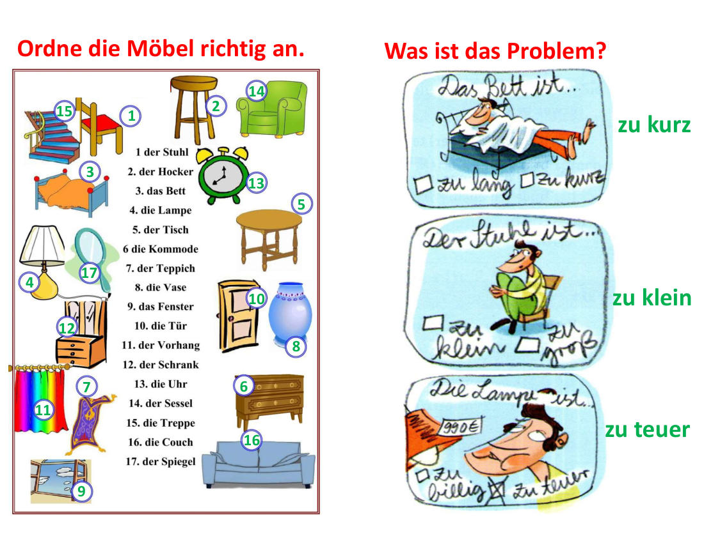
a Das Bett ist … □ zu lang □ zu kurz (a man's legs hang over the end of the bed)
b Der Stuhl ist … □ zu klein □ zu groß (a man squeezed onto a tiny chair)
c Die Lampe ist … □ zu billig □ zu teuer (a lamp with a 990 € price tag)
Box: Er ist wirklich schön, aber sehr teuer. | Nur 55 Euro! Das ist aber günstig! | Und wie viel kostet der Stuhl? | Was kostet denn das Bild? | Ja, bitte.
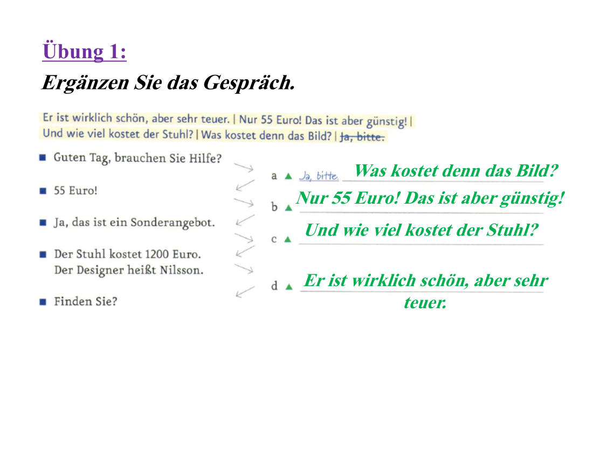
a 0,99 € — neunundneunzig Cent · b 0,59 € · c 9,99 € · d 69,00 € · e 77,77 € · f 178,95 €
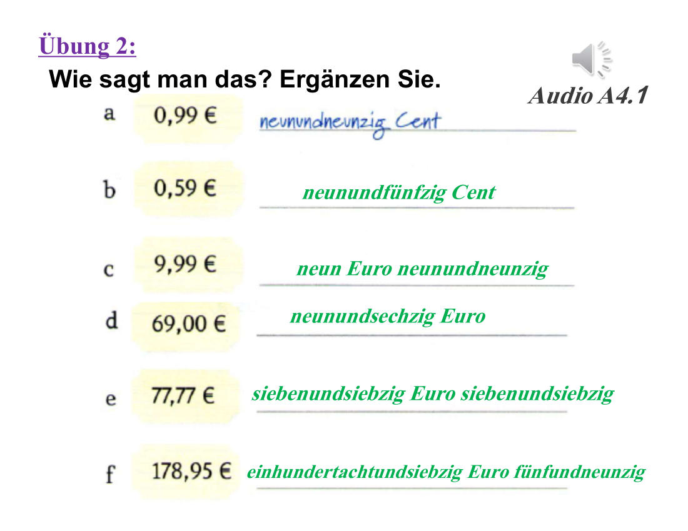
a chits — Tisch · b petipch · c eplam · d tebt · e knschar
a groß – klein · b schön – ___ · c kurz – ___ · d billig – ___
a Ich finde das Bett sehr schön. Was kostet es?
b Der Schrank ist billig und ___ ist praktisch.
c Das Bild ist sehr modern. ___ ist von Pablo Picasso.
d Die Lampe ist nicht schlecht. ___ kostet nur 78 Euro.
e Der Tisch ist sehr teuer. ___ kommt aus Italien.
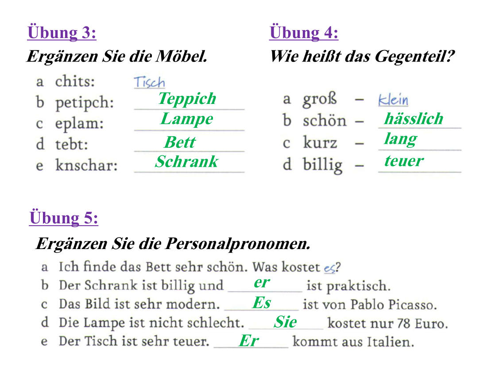
Box: Vielen Dank | Sie kostet | Das ist | Wie viel kostet | Kann ich Ihnen helfen | zu teuer | Brauchen Sie
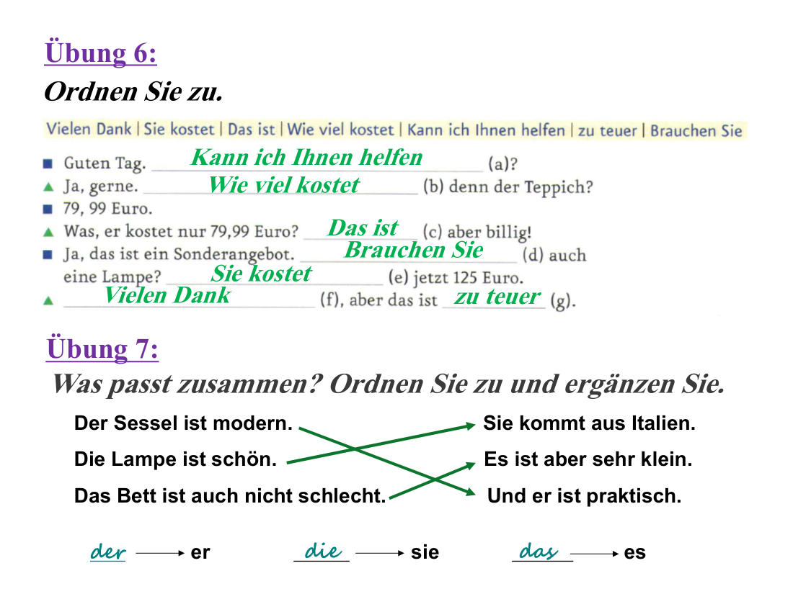
Der Sessel ist modern. · Die Lampe ist schön. · Das Bett ist auch nicht schlecht.
→ Sie kommt aus Italien. · Es ist aber sehr klein. · Und er ist praktisch.
Complete: ___ → er · ___ → sie · ___ → es
a Was kostet denn ___ Schrank? — ___ kostet 5.000 Euro.
b ___ Handy ist gold. — Ja, ___ kostet 114 Euro.
c Woher kommt ___ Dusche? Aus Deutschland? — Nein, ___ kommt aus Spanien.
d Woher kommt ___ Sessel? — ___ kommt aus Österreich.
e ___ Spülmaschine kostet 400 Euro, oder? — Ja, ___ kostet 400 Euro.
A: Hallo Susi, danke für den Tipp. Bei Möbel Amra kostet ein Sofa 199 € und ein Bett 149 €. Das finde ich nicht teuer und die Möbel sind wirklich schön. Gruß Johannes — Hi Susi, thanks for the tip. At Möbel Amra a sofa costs €199 and a bed €149. I don't find that expensive and the furniture is really nice. — مرحبًا سوزي، شكرًا على النصيحة. في محل أمرا للأثاث سعر الأريكة ١٩٩ يورو والسرير ١٤٩ يورو. لا أجد ذلك غاليًا والأثاث جميل فعلًا. تحياتي، يوهانس
B: Hallo Johannes, bei MÖBEL AMRA in der Blücherstraße gibt es günstige Möbel. Und sie sind wirklich schön. Susi — Hi Johannes, at MÖBEL AMRA in Blücherstraße there is good-value furniture. And it's really nice. — مرحبًا يوهانس، في محل أمرا للأثاث في شارع بلوخر يوجد أثاث بسعر مناسب، وهو جميل فعلًا. سوزي
C: Hallo Susi, ich brauche ein Sofa und ein Bett für mein Zimmer. Wo finde ich günstige Möbel in Berlin? Weißt du das? Ich habe wirklich nicht viel Geld. Gruß Johannes — Hi Susi, I need a sofa and a bed for my room. Where can I find cheap furniture in Berlin? Do you know? I really don't have much money. — مرحبًا سوزي، أحتاج أريكة وسريرًا لغرفتي. أين أجد أثاثًا رخيصًا في برلين؟ هل تعرفين؟ ليس معي مال كثير فعلًا. تحياتي، يوهانس
D: Hallo Johannes, super! Bis bald. Susi — Hi Johannes, great! See you soon. — مرحبًا يوهانس، رائع! أراك قريبًا. سوزي
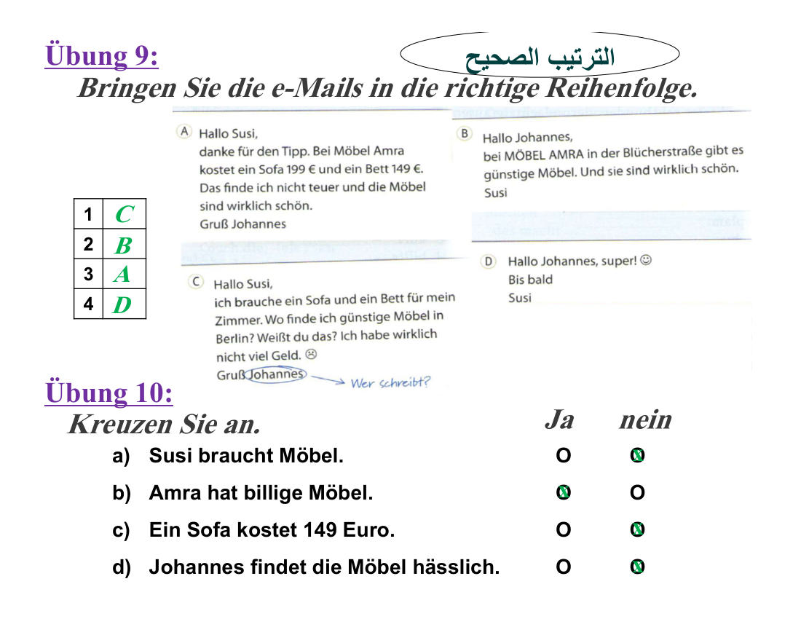
a Susi braucht Möbel.
b Amra hat billige Möbel.
c Ein Sofa kostet 149 Euro.
d Johannes findet die Möbel hässlich.
a) Vowels (Audio A4.2):
a: aber – Lampe – lang – Italien – praktisch
e: Bett – schwer – sehr – Sessel – schlecht
i: wie – viel – Tisch – billig – nicht
o: Sofa – groß – kosten – Sonderangebot
u: Stuhl – kurz – zu – gut – hundert
b) Sentences (Audio A4.3): a Aber die Lampe aus Italien ist praktisch. · b Das Bett ist sehr schwer. · c Wie viel? Der Tisch ist nicht billig. · d Oh! So groß! Das Sofa ist im Sonderangebot. · e Der Stuhl ist gut. Nur hundert Euro. (Translations are in the "Sätze" card above.)
The text has a picture next to each missing noun: a sofa, an armchair (crossed out), a dining table with six chairs, a rug, a window, a room corner, a plant, a clock, a bookshelf, a fridge, a cooker, a microwave, a dishwasher (crossed out), a sink, a bed, a bedside table, a wardrobe, a chest of drawers, a desk (crossed out), a washing machine, a bathtub, a shower, a washbasin, a window, a bench, a shoe rack and a coat stand.
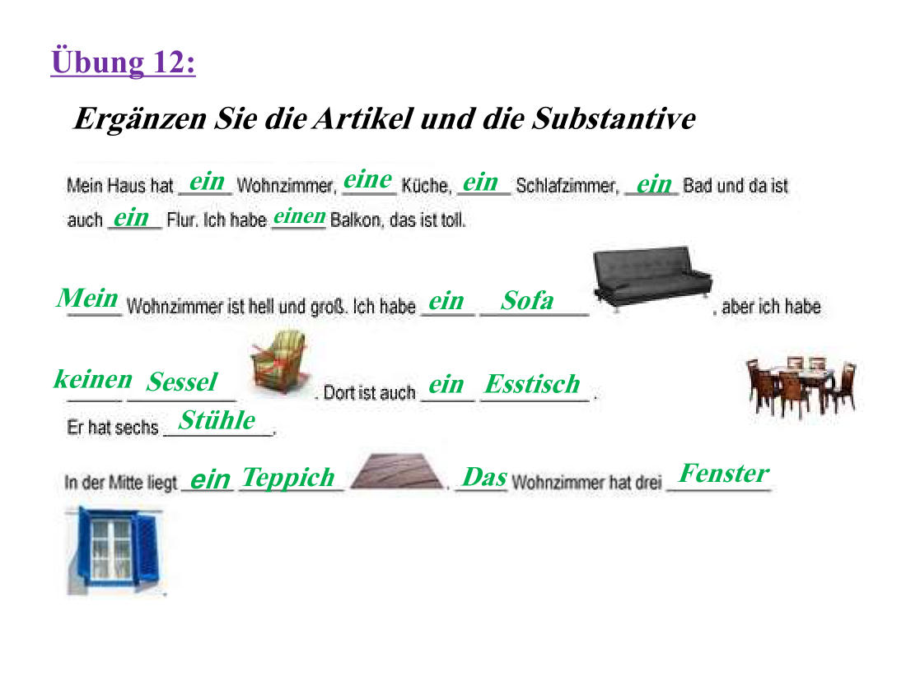
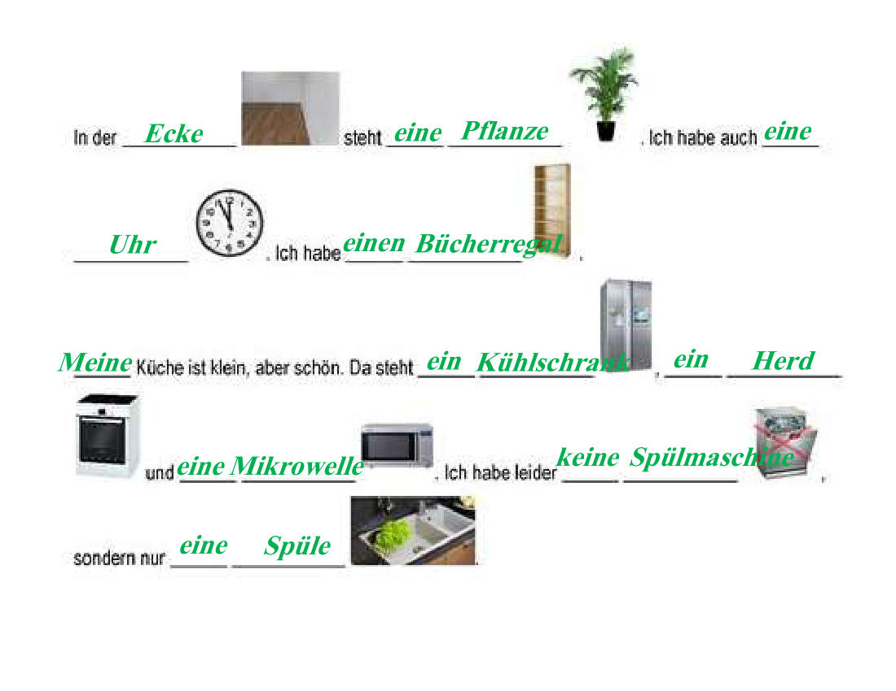
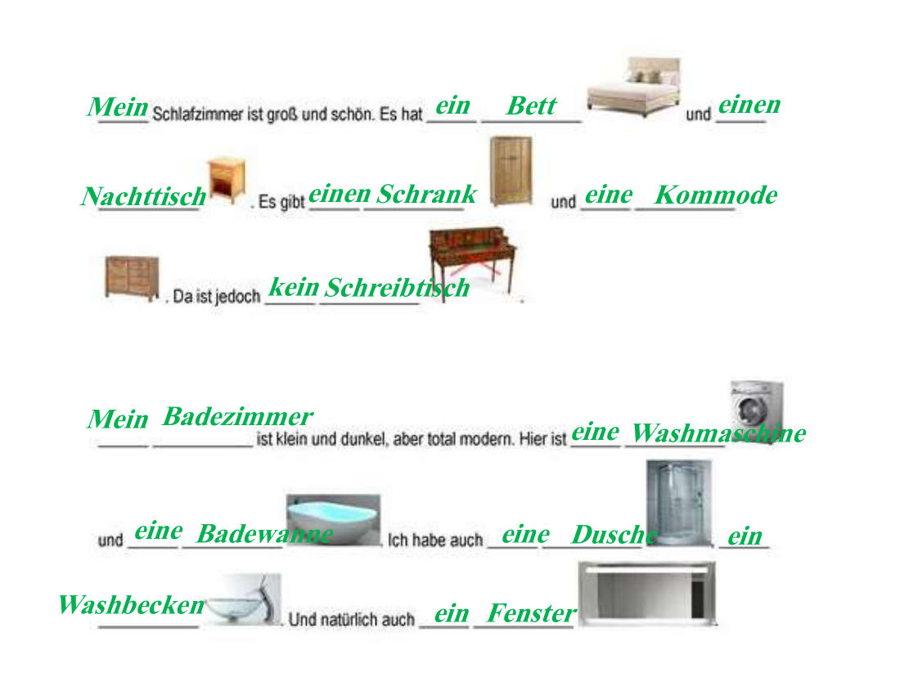
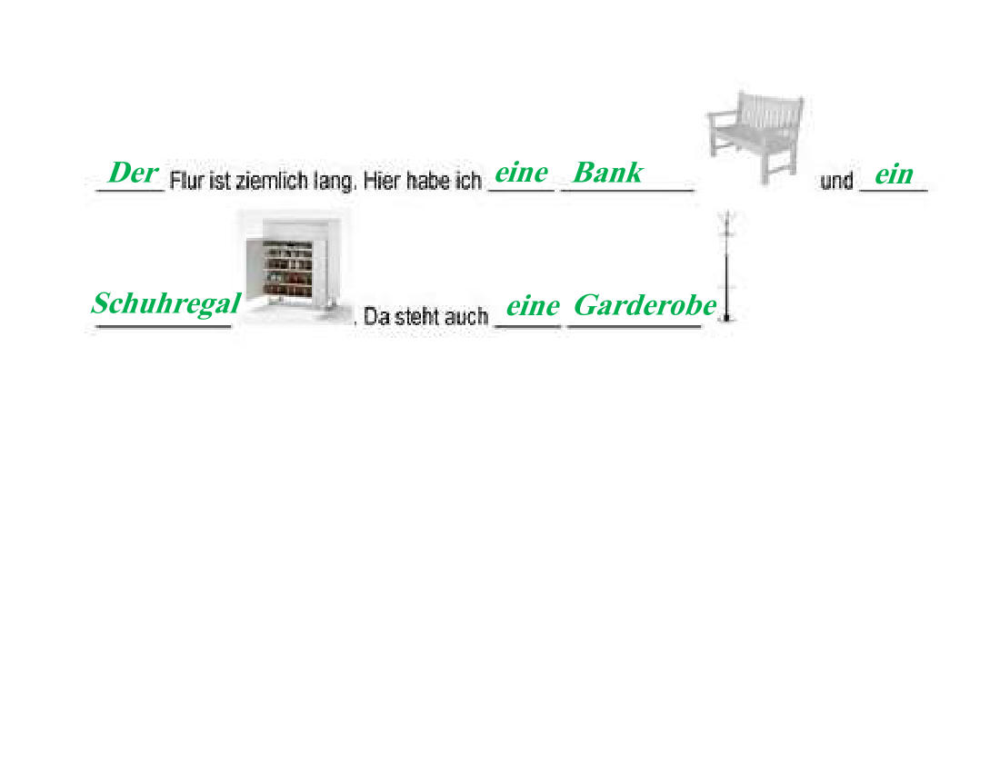
Office objects, the accusative case after haben, brauchen, suchen (der → den, ein → einen, kein → keinen), plural forms, and six new verbs (stehen, liegen, geben, abholen, wissen, suchen).
| German | Plural | English | Arabic |
|---|---|---|---|
| das Formular | die Formulare | form (to fill in) | استمارة |
| der Drucker | die Drucker | printer | طابعة |
| die Maus | die Mäuse | mouse | فأرة (الكمبيوتر) |
| der Computer | die Computer | computer | حاسوب / كمبيوتر |
| der Stift | die Stifte | pen | قلم |
| das Notizbuch | die Notizbücher | notebook | دفتر ملاحظات |
| der Kalender | die Kalender | calendar | تقويم / نتيجة |
| der Bildschirm | die Bildschirme | screen, monitor | شاشة |
| der Laptop | die Laptops | laptop | لابتوب |
| das Handy | die Handys | mobile phone | هاتف محمول |
| das Telefon | die Telefone | telephone | هاتف |
| der Schlüssel | die Schlüssel | key | مفتاح |
| das Papier | die Papiere | paper | ورق / ورقة |
| die Rechnung | die Rechnungen | invoice, bill | فاتورة |
| die Briefmarke | die Briefmarken | postage stamp | طابع بريد |
| das Buch | die Bücher | book | كتاب |
| die Seite | die Seiten | page | صفحة |
| das Wörterbuch | die Wörterbücher | dictionary | قاموس |
| der Bleistift | die Bleistifte | pencil | قلم رصاص |
| der Kugelschreiber | die Kugelschreiber | ballpoint pen | قلم جاف |
| das Büro | die Büros | office | مكتب |
| der Termin | die Termine | appointment | موعد |
| das Problem | die Probleme | problem | مشكلة |
| das Sonderangebot | die Sonderangebote | special offer | عرض خاص |
| der Preis | die Preise | price | سعر |
| der Euro | die Euro | euro | يورو |
| die Hilfe | — | help | مساعدة |
| German | Plural | English | Arabic |
|---|---|---|---|
| die Firma | die Firmen | company | شركة |
| der Kollege / die Kollegin | die Kollegen / Kolleginnen | colleague | زميل / زميلة |
| die Sekretärin | die Sekretärinnen | secretary (f.) | سكرتيرة |
| der Chef | die Chefs | boss | مدير / رئيس |
| der Manager | die Manager | manager | مدير |
| die Straße | die Straßen | street | شارع |
| die Hausnummer | die Hausnummern | house number | رقم المنزل |
| die Telefonnummer | die Telefonnummern | phone number | رقم الهاتف |
| die E-Mail | die E-Mails | بريد إلكتروني | |
| die SMS | die SMS | text message | رسالة نصية |
| die Zeit | — | time | وقت |
| die Frage | die Fragen | question | سؤال |
| German | Plural | English | Arabic |
|---|---|---|---|
| das Zimmer | die Zimmer | room | غرفة |
| der Tisch | die Tische | table, desk | طاولة / مكتب |
| der Stuhl | die Stühle | chair | كرسي |
| der Schrank | die Schränke | cupboard, wardrobe | دولاب / خزانة |
| die Couch | die Couchs | couch | كنبة |
| das Sofa | die Sofas | sofa | أريكة |
| das Bett | die Betten | bed | سرير |
| das Bild | die Bilder | picture | صورة / لوحة |
| der Teppich | die Teppiche | carpet, rug | سجادة |
| die Lampe | die Lampen | lamp | مصباح / أباجورة |
| der Kamin | die Kamine | fireplace | مدفأة (موقد) |
| die Uhr | die Uhren | clock, watch | ساعة |
| die Tasche | die Taschen | bag | شنطة / حقيبة |
| der Regenschirm | die Regenschirme | umbrella | شمسية / مظلة |
| die Brille | die Brillen | glasses | نظارة |
| die Flasche | die Flaschen | bottle | زجاجة |
| das Feuerzeug | die Feuerzeuge | lighter | ولاعة |
| die Kette | die Ketten | necklace, chain | سلسلة / قلادة |
| der Ring | die Ringe | ring | خاتم |
| die Geldbörse | die Geldbörsen | purse, wallet | محفظة |
| die Seife | die Seifen | soap | صابون |
| das Holz | — | wood | خشب |
| das Metall | die Metalle | metal | معدن |
| der Kunststoff | die Kunststoffe | plastic | بلاستيك |
| German | English | Arabic |
|---|---|---|
| brauchen | to need | يحتاج |
| haben | to have | يملك / عنده |
| sein | to be | يكون |
| suchen | to look for | يبحث عن |
| finden | to find; to think (an opinion) | يجد؛ يرى (رأي) |
| stehen | to stand | يقف |
| liegen | to lie (be lying somewhere) | يرقد / يكون موضوعًا (مستلقيًا) |
| geben | to give | يعطي |
| abholen | to pick up, collect | يستلم / يُحضِر |
| wissen | to know (a fact) | يعرف |
| schreiben | to write | يكتب |
| kaufen | to buy | يشتري |
| kosten | to cost | يكلّف |
| arbeiten (als / bei) | to work (as / at) | يعمل (كـ / في) |
| durchstreichen | to cross out | يشطب |
| German | English | Arabic |
|---|---|---|
| groß / klein | big / small | كبير / صغير |
| teuer | expensive | غالٍ |
| schön / hässlich | beautiful / ugly | جميل / قبيح |
| praktisch | practical | عملي |
| schlecht | bad | سيئ |
| modern / alt | modern / old | حديث / قديم |
| neu | new | جديد |
| zu (groß) | too (big) | (كبير) جدًا / أكثر من اللازم |
| braun · rot · schwarz · blau · gelb | brown · red · black · blue · yellow | بني · أحمر · أسود · أزرق · أصفر |
| heute | today | اليوم |
| Achtung! | Attention! | تنبيه! |
| Tut mir leid. | I'm sorry. | أنا آسف. |
| Bis später! | See you later! | إلى وقت لاحق! |
| Auf Wiederhören! | Goodbye (on the phone) | مع السلامة (في الهاتف) |
| Schöne Grüße | Kind regards | مع أطيب التحيات |
| Es geht. | It's OK / so-so. | لا بأس / عادي. |
Rule: most verbs take the normal endings (-e, -st, -t, -en, -t, -en). Learn the three special ones: geben, abholen, wissen.
| stehen يقف | liegen يرقد / يكون موضوعًا | geben يعطي | abholen يستلم | wissen يعرف | suchen يبحث | |
|---|---|---|---|---|---|---|
| ich | stehe | liege | gebe | hole ab | weiß | suche |
| du | stehst | liegst | gibst | holst ab | weißt | suchst |
| er/sie/es | steht | liegt | gibt | holt ab | weiß | sucht |
| wir | stehen | liegen | geben | holen ab | wissen | suchen |
| ihr | steht | liegt | gebt | holt ab | wisst | sucht |
| sie/Sie | stehen | liegen | geben | holen ab | wissen | suchen |
Rule: Nominativ (the subject, or what comes after sein) keeps the normal article. Akkusativ (the object: what you have, need, look for) changes only one word: der → den.
| Nominativ (Da ist … / Da sind …) | Akkusativ (Ich habe …) |
|---|---|
| der Schlüssel | den Schlüssel |
| das Papier | das Papier |
| die Rechnung | die Rechnung |
| die Stifte | die Stifte |
Rule: in the Akkusativ only masculine (der-words) gets -n / -en: den, einen, keinen. das, die and plural stay the same.
| definite | indefinite | negative | noun | |
|---|---|---|---|---|
| maskulin | Sie hat den | einen | keinen | Schlüssel. |
| neutral | das | ein | kein | Formular. |
| feminin | die | eine | keine | Briefmarke. |
| Plural | die | – (no article) | keine | Stifte. |
Rule: mein, dein, sein, ihr … work like ein. So a der-word as object gets -en: meinen. die-words and plural get -e: meine.
| Nominativ | Akkusativ |
|---|---|
| mein Stift | meinen Stift |
| mein Handy | mein Handy |
| meine Brille | meine Brille |
| meine Stifte | meine Stifte |
Rule: ein / eine means "one", so it has no plural. Use no article, a number (zwei, drei …), or keine.
Rule: use kein in front of a noun that would have ein or no article. Use nicht for everything else: a verb, an adjective, or a noun with den / die / das / mein.
Rule: ohne (without) is always followed by the Akkusativ: ohne meinen Stift, ohne meine Brille, ohne mein Handy.
E-mail: Betreff: Achtung! Termine! Neu! — „Hallo Herr Schmidt, Sie haben heute drei neue Termine: Firma Hierholtzer (14 Uhr), Firma Leitgeb (16 Uhr), Firma PR-Media, Frau Hintze (17 Uhr). Schöne Grüße, C. Lehmann, Brenner IT-Consulting"
(Hello Mr Schmidt, you have three new appointments today … مرحبًا سيد شميت، عندك اليوم ثلاثة مواعيد جديدة …)
a) C. Lehmann arbeitet als ____.
b) Um 14:00 Uhr ist ein Termin mit ____.
c) Herr Schmidt und C. Lehmann arbeiten bei ____.
d) Herr Schmidt ist ein ____ bei seiner Firma.
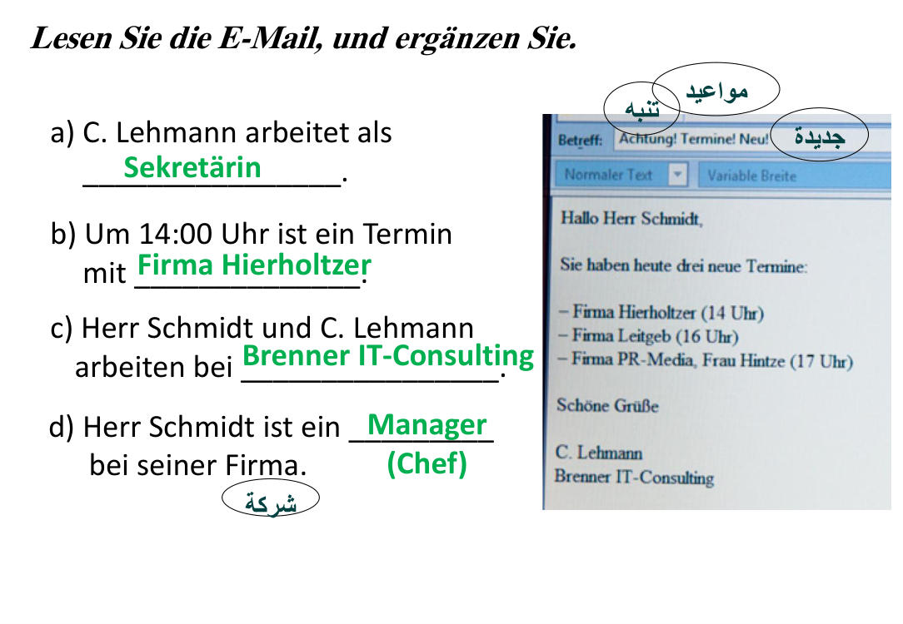
Complete the middle column with the right ending of ein and the right column with a number.
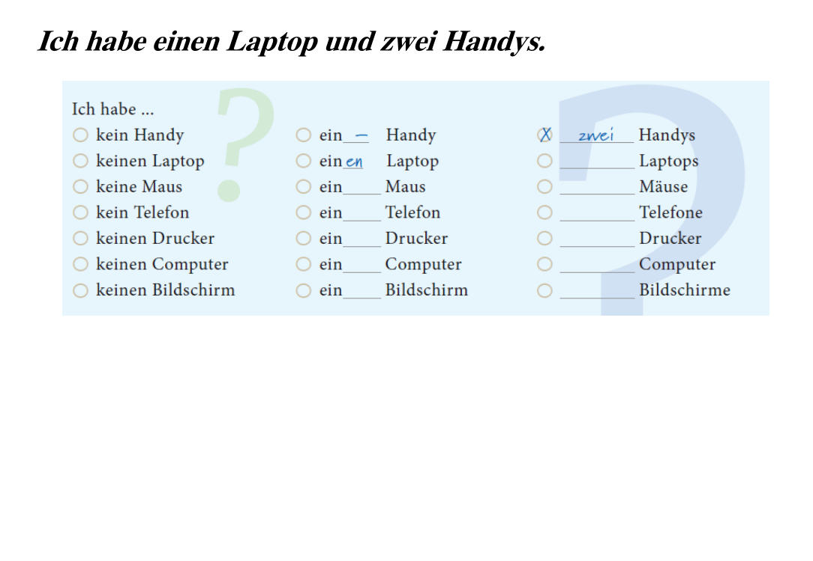
| kein | ein | Plural |
|---|---|---|
| kein Handy | ein Handy | zwei Handys |
| keinen Laptop | einen Laptop | zwei Laptops |
| keine Maus | eine Maus | zwei Mäuse |
| kein Telefon | ein Telefon | zwei Telefone |
| keinen Drucker | einen Drucker | zwei Drucker |
| keinen Computer | einen Computer | zwei Computer |
| keinen Bildschirm | einen Bildschirm | zwei Bildschirme |
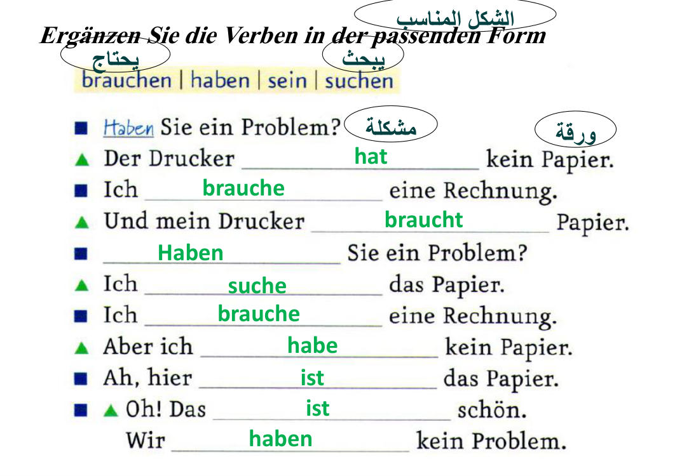
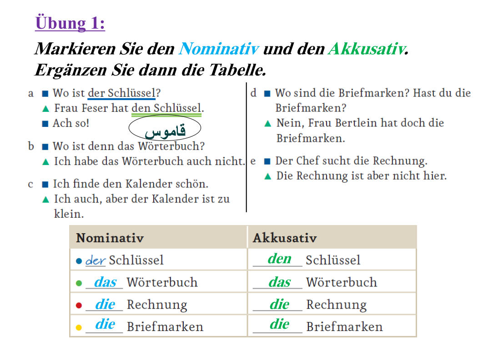
| Nominativ | Akkusativ |
|---|---|
| der Schlüssel | den Schlüssel |
| das Wörterbuch | das Wörterbuch |
| die Rechnung | die Rechnung |
| die Briefmarken | die Briefmarken |
Word pairs: Handy/Telefon · Computer/Laptop · Bildschirm/Drucker · Bleistifte/Kugelschreiber · Rechnung/Briefmarken · Kalender/Buch. The picture shows a desk with a computer and monitor, keyboard, mouse, a telephone, pencils in a cup, an open calendar, stamps and a mug.
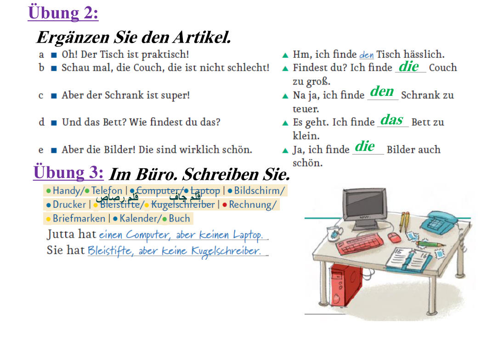
a) Peter, ___ Termin mit Firma MAGUS ist heute um 14.00 Uhr!
b) Hallo Frau Peters, wir haben ___ Briefmarken. Haben Sie Zeit? Kaufen Sie bitte ___ Briefmarken? Gruß P. Bolz
c) Elena, Tim, der neue Kollege, hat einen Computer und ___ Bildschirm, aber ___ Drucker. Hast du ___ Drucker? Danke, Francesca
d) Hallo Elena, ich habe jetzt ___ Drucker. Danke! Tim
e) Samuel, wie heißt ___ Straße und ___ Hausnummer der Firma ZELL AG? Sue
f) Lieber Daniel, ich habe um 15 Uhr ___ Zeit! Tut mir leid. Bis später, Thea
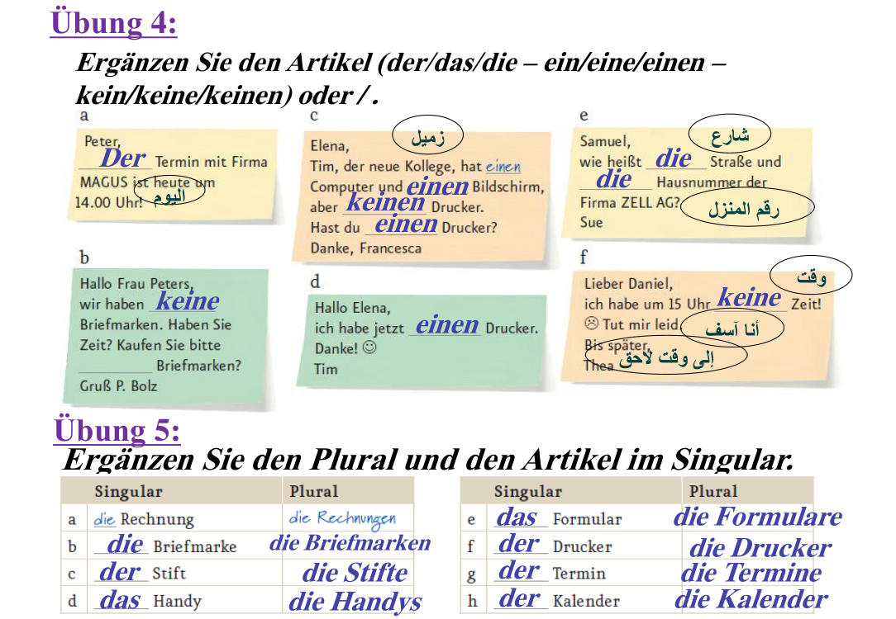
| Singular | Plural |
|---|---|
| a) die Rechnung | die Rechnungen |
| b) die Briefmarke | die Briefmarken |
| c) der Stift | die Stifte |
| d) das Handy | die Handys |
| e) das Formular | die Formulare |
| f) der Drucker | die Drucker |
| g) der Termin | die Termine |
| h) der Kalender | die Kalender |
E-mail (Von: h.r@yabadoo.de, Betreff: Komme später …): „Hallo Frau Söder, ich habe um 10 Uhr einen Termin mit der Firma Grübel. Ich komme heute um 14 Uhr ins Büro. Schreiben Sie heute bitte auch die Rechnungen für die Firma Merz und die Firma Knapp? Ach ja, wie ist denn die Telefonnummer von Frau Pauli? Bitte schreiben Sie mir eine SMS. Vielen Dank. Schöne Grüße, R. Huber"
(I have an appointment at 10 with Grübel. I'm coming to the office at 2 pm today. Please also write the invoices for Merz and Knapp today. What is Mrs Pauli's phone number? Please text me. عندي موعد الساعة العاشرة مع شركة غروبل. سآتي للمكتب الساعة الثانية. من فضلك اكتبي فواتير شركتي ميرتس وكناب اليوم. ما رقم هاتف السيدة باولي؟ أرسلي لي رسالة نصية.)
a) Herr Huber hat heute einen Termin.
b) Er sucht eine Rechnung.
c) Er braucht eine Telefonnummer.
d) Er schreibt eine SMS.
Wo ist denn | Vielen Dank | Auf Wiederhören | Hier ist | Guten Tag
A cartoon of a young man relaxing in his room. Lines point to: a picture on the wall, a clock on the wall, the bed, a red mobile phone on the desk, the orange rug (left side); the monitor, the printer, the desk, the wardrobe, a bag on the floor, the chair (right side).
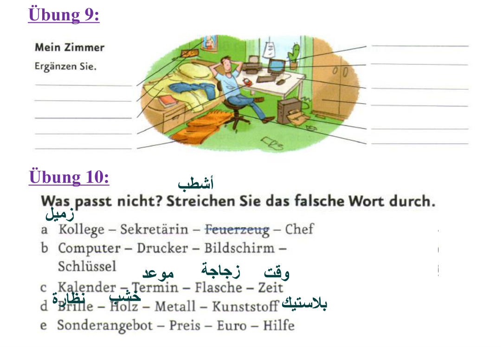
a) Kollege – Sekretärin – Feuerzeug – Chef
b) Computer – Drucker – Bildschirm – Schlüssel
c) Kalender – Termin – Flasche – Zeit
d) Brille – Holz – Metall – Kunststoff
e) Sonderangebot – Preis – Euro – Hilfe
a) brown dot · b) red dot · c) black dot · d) blue dot · e) yellow dot
Words: Uhr | Schlüssel | Handy | Tasche | Brille | Flaschen | Regenschirm | Bücher | Kugelschreiber | Briefmarken | Bleistifte. The picture shows a cupboard with pens in a cup, a small clock, standing and lying books, a key hanging on the door and more pens.
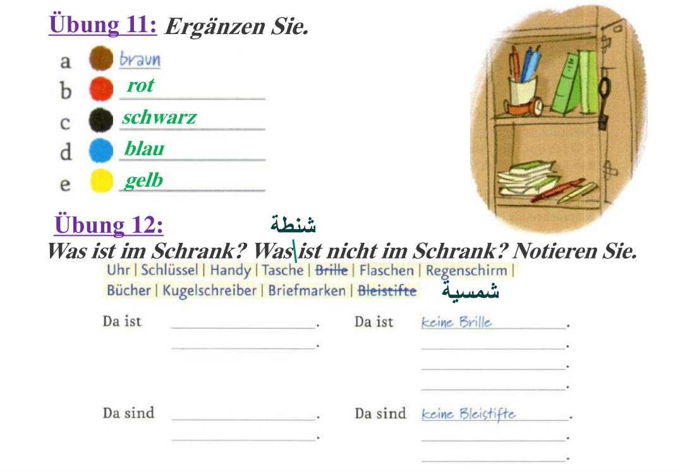
a) Ich habe … ___ Schlüssel, ein Feuerzeug, ___ Stift, ___ Flasche, ___ Rechnung und ___ Brille.
b) Table A: glasses, invoice, orange book, bottle, lighter. Table B: invoice, a sandwich/food, keys, bottle, lighter. Table C: glasses, invoice, a pen, key, bottle, lighter.
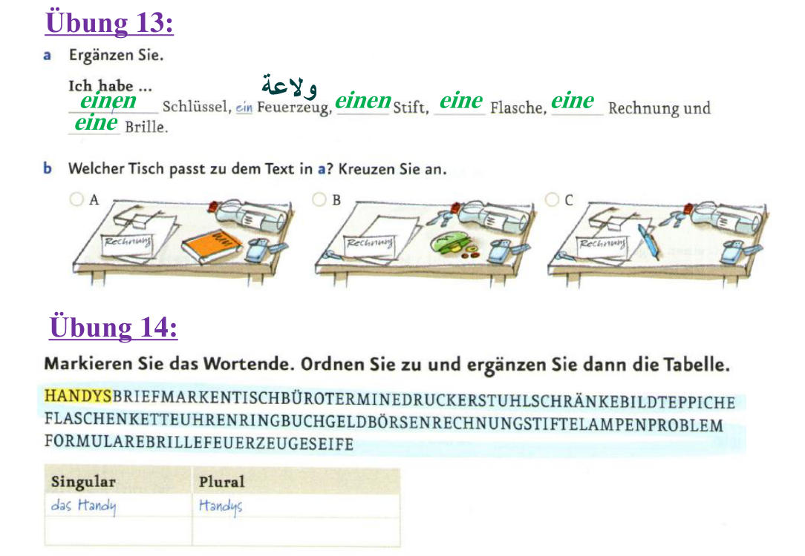
HANDYSBRIEFMARKENTISCHBÜROTERMINEDRUCKERSTUHLSCHRÄNKEBILDTEPPICHEFLASCHENKETTEUHRENRINGBUCHGELDBÖRSENRECHNUNGSTIFTELAMPENPROBLEMFORMULAREBRILLEFEUERZEUGESEIFE
| Singular | Plural | Form in the snake |
|---|---|---|
| das Handy | die Handys | plural |
| die Briefmarke | die Briefmarken | plural |
| der Tisch | die Tische | singular |
| das Büro | die Büros | singular |
| der Termin | die Termine | plural |
| der Drucker | die Drucker | same form |
| der Stuhl | die Stühle | singular |
| der Schrank | die Schränke | plural |
| das Bild | die Bilder | singular |
| der Teppich | die Teppiche | plural |
| die Flasche | die Flaschen | plural |
| die Kette | die Ketten | singular |
| die Uhr | die Uhren | plural |
| der Ring | die Ringe | singular |
| das Buch | die Bücher | singular |
| die Geldbörse | die Geldbörsen | plural |
| die Rechnung | die Rechnungen | singular |
| der Stift | die Stifte | plural |
| die Lampe | die Lampen | plural |
| das Problem | die Probleme | singular |
| das Formular | die Formulare | plural |
| die Brille | die Brillen | singular |
| das Feuerzeug | die Feuerzeuge | plural |
| die Seife | die Seifen | singular |
Das ist mein Zimmer. Es (a) ist nicht sehr groß, aber ___ (b) ist schön. ___ (c) Sofa ist nicht sehr modern. ___ (d) ist alt und klein, aber ich brauche ___ (e) Couch. Und ich habe ___ (f) Schrank. ___ (g) ist groß und nicht so schön, aber ich brauche ___ (h) Schrank. Und ___ (i) ist praktisch. ___ (j) Lampe finde ich wirklich super! ___ (k) ist modern und schön! Jetzt brauche ich noch ___ (l) Computer, ___ (m) Bild und ___ (n) Teppich. Dann finde ich mein Zimmer wirklich schön!
Hobbies and free time: telling the time (informal and official), times of day, days, months and seasons, the modal verb können, verbs with a vowel change (fahren, lesen, treffen), how often (immer … nie), and the time prepositions um / am / in.
| German | English | Arabic |
|---|---|---|
| kochen | to cook | يطبخ |
| singen | to sing | يغني |
| lesen | to read | يقرأ |
| Freunde treffen | to meet friends | يقابل الأصدقاء |
| im Internet surfen | to surf the internet | يتصفح الإنترنت |
| schwimmen | to swim | يسبح |
| fotografieren | to take photos | يصوّر |
| Fußball spielen | to play football | يلعب كرة القدم |
| malen | to paint | يرسم (بالألوان) |
| backen | to bake | يخبز |
| Musik hören | to listen to music | يستمع إلى الموسيقى |
| spazieren gehen | to go for a walk | يتمشى |
| Schach spielen | to play chess | يلعب الشطرنج |
| Rad fahren | to cycle | يركب الدراجة |
| Ski fahren | to ski | يتزلج |
| Gitarre spielen | to play the guitar | يعزف الجيتار |
| Tennis spielen | to play tennis | يلعب التنس |
| tanzen | to dance | يرقص |
| boxen | to box | يمارس الملاكمة |
| Auto fahren | to drive a car | يقود سيارة |
| lernen | to learn | يتعلم |
| das Hobby (die Hobbys) | hobby | هواية |
| die Freizeit | free time | وقت الفراغ |
| der Krimi (die Krimis) | crime novel / thriller | رواية بوليسية |
| German | Plural | English | Arabic |
|---|---|---|---|
| das Kino | die Kinos | cinema | السينما |
| das Theater | die Theater | theatre | المسرح |
| das Museum | die Museen | museum | المتحف |
| das Café | die Cafés | café | المقهى |
| die Ausstellung | die Ausstellungen | exhibition | المعرض |
| das Schwimmbad | die Schwimmbäder | swimming pool | حمام السباحة |
| die Moschee | die Moscheen | mosque | المسجد |
| das Stadion | die Stadien | stadium | الاستاد |
| das Restaurant | die Restaurants | restaurant | المطعم |
| die Kirche | die Kirchen | church | الكنيسة |
| German | Time | Greeting | English | Arabic |
|---|---|---|---|---|
| der Morgen | 6 bis 9 Uhr | Guten Morgen | (early) morning | الصباح الباكر |
| der Vormittag | 9 bis 12 Uhr | Guten Morgen / Tag | late morning | الضحى / قبل الظهر |
| der Mittag | 12 bis 14 Uhr | Guten Tag | noon, midday | الظهر |
| der Nachmittag | 14 bis 18 Uhr | Guten Tag | afternoon | بعد الظهر / العصر |
| der Abend | 18 bis 21 Uhr | Guten Abend | evening | المساء |
| die Nacht | 21 bis 6 Uhr | Gute Nacht | night | الليل |
| German | English | Arabic |
|---|---|---|
| vorgestern | the day before yesterday | أول أمس |
| gestern | yesterday | أمس |
| heute | today | اليوم |
| morgen | tomorrow | غدًا |
| übermorgen | the day after tomorrow | بعد غد |
| heute Nachmittag / heute Abend | this afternoon / this evening | اليوم بعد الظهر / الليلة |
| German | English | Arabic |
|---|---|---|
| der Montag | Monday | الإثنين |
| der Dienstag | Tuesday | الثلاثاء |
| der Mittwoch | Wednesday | الأربعاء |
| der Donnerstag | Thursday | الخميس |
| der Freitag | Friday | الجمعة |
| der Samstag | Saturday | السبت |
| der Sonntag | Sunday | الأحد |
| die Woche (die Wochen) | week | الأسبوع |
| der Tag (die Tage) | day | اليوم |
| German | English | Arabic |
|---|---|---|
| der Januar | January | يناير |
| der Februar | February | فبراير |
| der März | March | مارس |
| der April | April | أبريل |
| der Mai | May | مايو |
| der Juni | June | يونيو |
| der Juli | July | يوليو |
| der August | August | أغسطس |
| der September | September | سبتمبر |
| der Oktober | October | أكتوبر |
| der November | November | نوفمبر |
| der Dezember | December | ديسمبر |
| der Monat (die Monate) | month | الشهر |
| das Jahr (die Jahre) | year | السنة |
| German | Plural | English | Arabic |
|---|---|---|---|
| der Frühling | die Frühlinge | spring | الربيع |
| der Sommer | die Sommer | summer | الصيف |
| der Herbst | die Herbste | autumn | الخريف |
| der Winter | die Winter | winter | الشتاء |
| die Jahreszeit (die Jahreszeiten) | season | فصل السنة |
| German | English | Arabic |
|---|---|---|
| immer | always | دائمًا |
| sehr oft | very often | كثيرًا جدًا |
| oft | often | غالبًا / كثيرًا |
| manchmal | sometimes | أحيانًا |
| fast nie | almost never | نادرًا جدًا |
| nie | never | أبدًا |
| German | English | Arabic |
|---|---|---|
| gern | gladly (like doing) | بحب / بسرور |
| lieber | rather (prefer) | أفضّل |
| toll · super · wirklich | great · super · really | رائع · ممتاز · حقًا |
| gar nicht · ein bisschen | not at all · a little | إطلاقًا · قليلًا |
| leider | unfortunately | للأسف |
| vielleicht | maybe | ربما |
| die Lust · Hast du Lust auf …? | desire · Do you feel like …? | رغبة · هل عندك رغبة في …؟ |
| die Idee · Gute Idee! | idea · Good idea! | فكرة · فكرة جيدة! |
| Das macht Spaß. | That's fun. | هذا ممتع. |
| Keine Angst! | Don't worry! | لا تخف! |
| das Kompliment (die Komplimente) | compliment | مجاملة / إطراء |
| Lieblings- (Lieblingsfilm) | favourite (favourite film) | المفضّل (الفيلم المفضّل) |
Rule: there are two ways. Informal (talking, 12-hour clock). Official (radio / TV, 24-hour clock): hour + Uhr + minutes. halb points to the next hour.
| Time | Informal | Official | Arabic |
|---|---|---|---|
| 1:00 | Es ist ein Uhr. (Es ist eins.) | Es ist ein Uhr. | الساعة الواحدة |
| 5:30 | Es ist halb sechs. | Es ist fünf Uhr dreißig. | الخامسة والنصف |
Rule: first half of the hour: minutes nach (after) the hour. Minutes 20–29: vor halb. Minutes 31–40: nach halb. Last quarter: vor (before) the next hour.
| Time | Informal | Official | Arabic |
|---|---|---|---|
| 3:20 | Es ist zwanzig nach drei. | Es ist drei Uhr zwanzig. | الثالثة وعشرون دقيقة |
| 7:25 | Es ist fünf vor halb acht. | Es ist sieben Uhr fünfundzwanzig. | السابعة والنصف إلا خمس |
| 10:35 | Es ist fünf nach halb elf. | Es ist zehn Uhr fünfunddreißig. | العاشرة والنصف وخمس دقائق |
| 9:45 | Es ist Viertel vor zehn. | Es ist neun Uhr fünfundvierzig. | العاشرة إلا ربع |
Rule: 7 days (Tage), 12 months (Monate), 4 seasons (Jahreszeiten). All are der-words.
| Day | Arabic |
|---|---|
| Montag · Dienstag | الاثنين · الثلاثاء |
| Mittwoch · Donnerstag | الأربعاء · الخميس |
| Freitag · Samstag | الجمعة · السبت |
| Sonntag | الأحد |
Rule: count days from today. übermorgen = +2 days. vorgestern = −2 days.
| Word | Days | Arabic |
|---|---|---|
| vorgestern | −2 | أول أمس |
| gestern | −1 | أمس |
| heute | 0 | اليوم |
| morgen | +1 | غدًا |
| übermorgen | +2 | بعد غد |
Rule: um + clock time, am + day or part of the day, in / im + night, month, season. The verb always stays in position 2: if a time word comes first, the subject moves after the verb.
| Preposition | Used with | Example | Arabic |
|---|---|---|---|
| um | clock times | um 11:30 Uhr, um vier | في الساعة … |
| am | days, parts of the day (except Nacht) | am Sonntag, am Abend, am Donnerstagabend, am Wochenende | يوم … / في … |
| in | die Nacht (in der Nacht), months, seasons | in der Nacht, im Mai, im Winter | في الليل / في شهر … / في فصل … |
Rule: take the verb stem (schwimm-, mal-, sing-) and add -e, -st, -t, -en, -t, -en.
| schwimmen يسبح | malen يرسم | singen يغني | kochen يطبخ | hören يسمع | backen يخبز | |
|---|---|---|---|---|---|---|
| ich | schwimme | male | singe | koche | höre | backe |
| du | schwimmst | malst | singst | kochst | hörst | backst |
| er/sie/es | schwimmt | malt | singt | kocht | hört | backt |
| wir | schwimmen | malen | singen | kochen | hören | backen |
| ihr | schwimmt | malt | singt | kocht | hört | backt |
| sie/Sie | schwimmen | malen | singen | kochen | hören | backen |
Rule: only du and er/sie/es change the vowel: e → i (treffen → triffst), e → ie (lesen → liest), a → ä (fahren → fährst).
| treffen يقابل | lesen يقرأ | fahren يركب / يقود | |
|---|---|---|---|
| ich | treffe | lese | fahre |
| du | triffst | liest | fährst |
| er/sie/es | trifft | liest | fährt |
| wir | treffen | lesen | fahren |
| ihr | trefft | lest | fahrt |
| sie/Sie | treffen | lesen | fahren |
Rule: können (can) is a modal verb (a helper verb). It stands in position 2; the main verb goes to the end in its infinitive form (sentence bracket).
| Person | können |
|---|---|
| ich | kann |
| du | kannst |
| er/sie/es | kann |
| wir | können |
| ihr | könnt |
| sie/Sie | können |
Answer a compliment with:
Rule: put gern after the verb to say you like doing something: Ich spiele gern Tennis. Say how often with immer (always), oft (often), manchmal (sometimes), nie (never).
| Question | Answer | Arabic |
|---|---|---|
| Was sind deine Hobbys? | Meine Hobbys sind … und … / Mein Hobby ist … | ما هواياتك؟ — هواياتي … و… / هوايتي … |
| Was machst du in der Freizeit? | Ich … gern. Das macht Spaß. / Ich liebe … | ماذا تفعل في وقت فراغك؟ — أحب أن … هذا ممتع. / أحب … |
| Fährst du gern Ski/Rad/…? | Nein, ich kann nicht Ski/Rad/… fahren. / Nein, ich fahre nicht gern Ski/Rad/… | هل تحب التزلج / ركوب الدراجة؟ — لا، لا أستطيع… / لا، لا أحب… |
| Liest du gern …? / Triffst du gern …? | Ich lese gern und treffe Freunde. | هل تحب القراءة / مقابلة …؟ — أحب القراءة ومقابلة الأصدقاء. |
| Wie oft gehst du ins Kino/Theater/…? | Ich gehe oft/manchmal/nie ins Kino/Theater/… Mein Lieblingsfilm/Lieblings-… ist … | كم مرة تذهب للسينما؟ — أذهب كثيرًا/أحيانًا/أبدًا… فيلمي المفضّل هو … |
Rule: suggest with Hast du Lust auf …? or Gehen wir …? (verb first). Answer with Gute Idee! or Keine Lust. / Ich habe keine Zeit.
1 skier · 2 swimmer · 3 chess player · 4 painter · 5 guitar player · 6 woman with camera · 7 woman with a tray of biscuits · 8 tennis player · 9 cyclist · 10 ballet dancer.
Given: 1. Sie können aber toll Ski fahren. 5. Du kannst wirklich sehr gut Gitarre spielen. 8. Du kannst wirklich gut Tennis spielen. 10. Wow! Du kannst ja super tanzen.
To do: 2. (schwimmen) 3. (Schach spielen) 4. (malen) 6. (fotografieren) 7. (backen) 9. (Rad fahren)
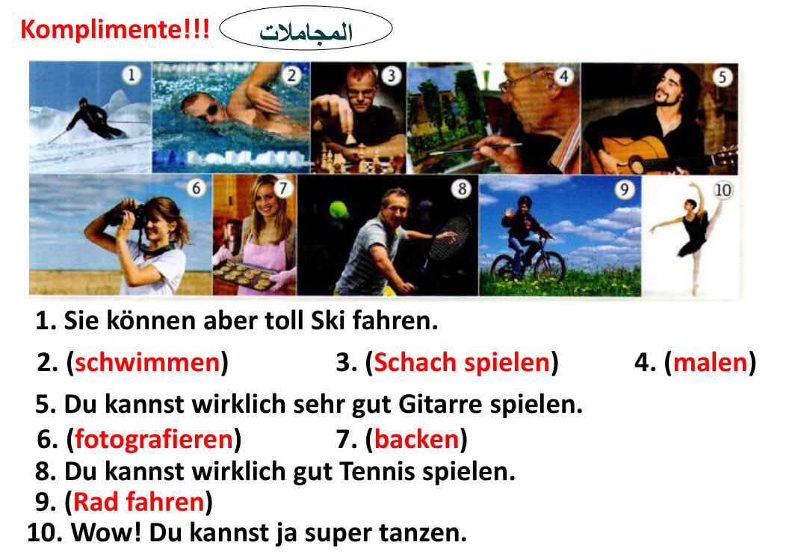
a) Meine Schwester Lisa ___ sehr gut malen.
b) Mama und Papa ___ gut Tennis spielen. Sie spielen sehr gern und oft.
c) Mein Bruder ___ super Fußball spielen.
d) Opa und Oma ___ sehr gut Schach spielen.
e) Und wir alle ___ gut schwimmen.
f) Und ich? Ich ___ nicht gut malen und nicht tanzen.
a) Sie kann ○ toll ○ nicht so gut Ski fahren. (picture: a woman falling over on skis)
b) Er kann ○ sehr gut ○ gar nicht schwimmen. (picture: a swimmer with a medal)
c) Sie kann ○ gut ○ nicht gut singen. (picture: karaoke, people cover their ears)
d) Er kann ○ sehr gut ○ ein bisschen Rad fahren. (picture: a small child on a bike with a helping adult)
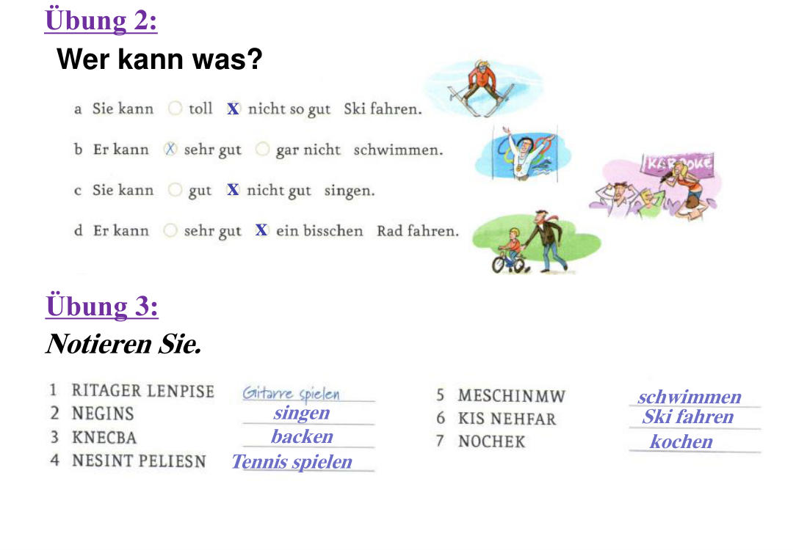
1 RITAGER LENPISE · 2 NEGINS · 3 KNECBA · 4 NESINT PELIESN · 5 MESCHINMW · 6 KIS NEHFAR · 7 NOCHEK
Box: Leider kann ich nicht Ski fahren | Was sind deine Hobbys | Und was machst du so in der Freizeit (example) | das macht Spaß | Spielst du nicht gern Fußball
Box: fast nie | oft | immer | nie (example, e) | manchmal
a) Hallo, ich heiße Mona. Meine Hobbys sind ___ (kusim nöher), ___ (zannte) und ___ (rendeuf refften).
b) Hallo, ich bin Ahmed. Meine Hobbys sind ___ (luaßfbl elisnep) und ___ (ard earnflh).
c) Und wir sind Laila und Samira. Wir ___ (senle), ___ (trorognieeaff) und ___ (ckaben) gern.
Box: sehr oft | nie | oft | manchmal (example)
Niklas's week: Mo: Fußball spielen, im Internet surfen · Di: Fußball spielen · Mi: im Internet surfen · Do: Fußball spielen · Fr: ins Kino gehen
Niklas geht manchmal (a) ins Kino. ___ (b) surft er im Internet. Er spielt ___ (c) Schach, aber er spielt ___ (d) Fußball.
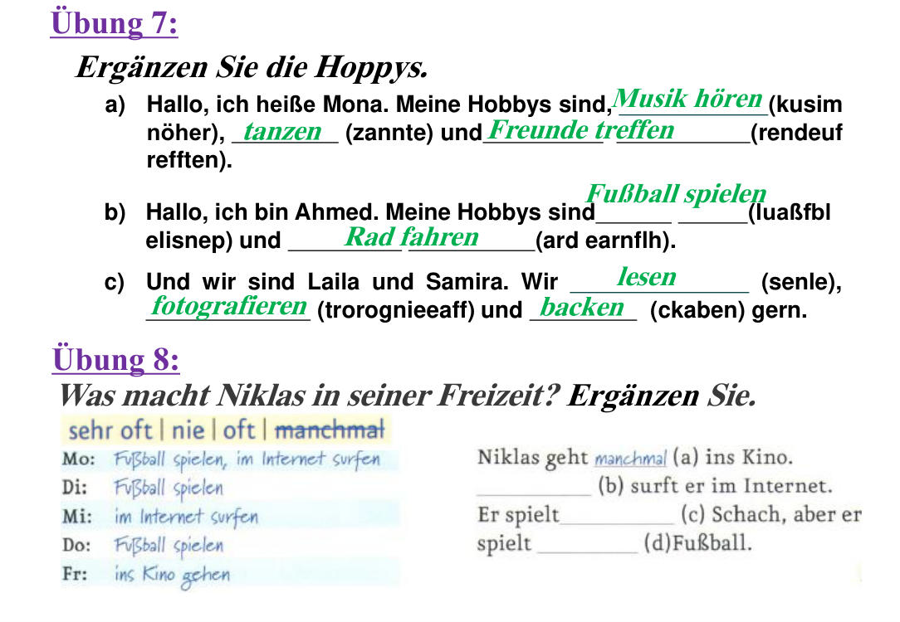
a) Du ___ gut backen. (können) — example: kannst
b) Mein Sohn ___ nicht gern. (lesen)
c) ___ du gern Auto? (fahren)
d) ___ wir Fußball spielen? (können)
e) ___ du heute deine Freunde? (treffen)
a 09:55 (example: fünf vor zehn / neun Uhr fünfundfünfzig) · b 14:30 · c 17:10 · d 20:15 · e 11:45
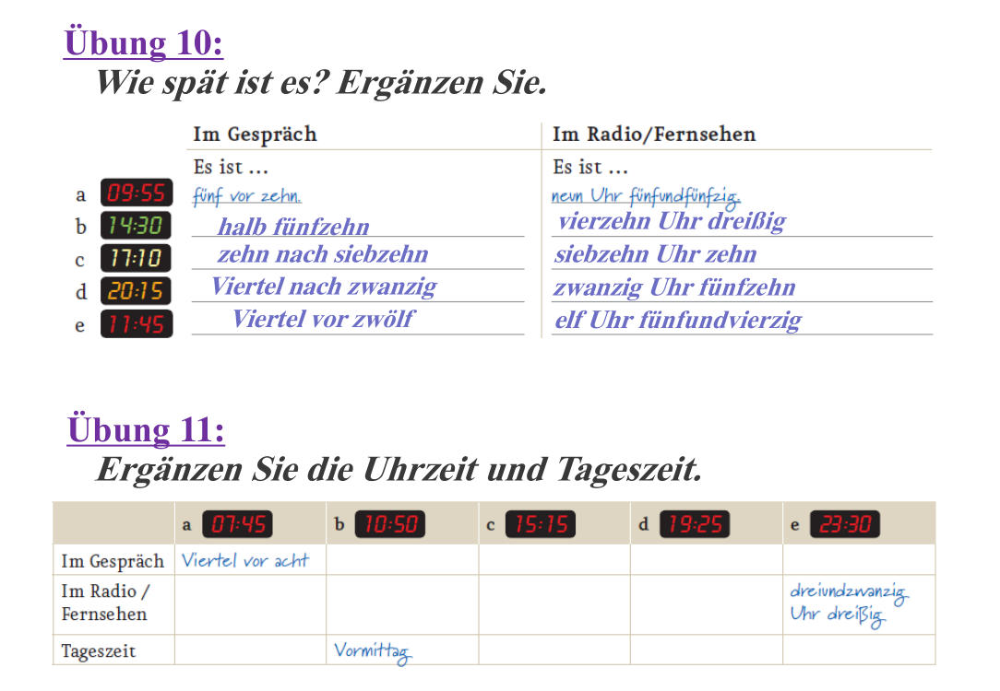
| Im Gespräch (informal) | Im Radio/Fernsehen (official) | |
|---|---|---|
| a 09:55 | fünf vor zehn | neun Uhr fünfundfünfzig |
| b 14:30 | halb drei | vierzehn Uhr dreißig |
| c 17:10 | zehn nach fünf | siebzehn Uhr zehn |
| d 20:15 | Viertel nach acht | zwanzig Uhr fünfzehn |
| e 11:45 | Viertel vor zwölf | elf Uhr fünfundvierzig |
a 07:45 · b 10:50 · c 15:15 · d 19:25 · e 23:30 (examples given: a Viertel vor acht; e dreiundzwanzig Uhr dreißig; b Vormittag)
| Im Gespräch | Im Radio / Fernsehen | Tageszeit | |
|---|---|---|---|
| a 07:45 | Viertel vor acht | sieben Uhr fünfundvierzig | der Morgen |
| b 10:50 | zehn vor elf | zehn Uhr fünfzig | der Vormittag |
| c 15:15 | Viertel nach drei | fünfzehn Uhr fünfzehn | der Nachmittag |
| d 19:25 | fünf vor halb acht | neunzehn Uhr fünfundzwanzig | der Abend |
| e 23:30 | halb zwölf | dreiundzwanzig Uhr dreißig | die Nacht |
Box: Da kann ich leider nicht. | Das weiß ich noch nicht. (example) | Ja, bis dann. | Zwei Uhr ist okay. | Hm … Ja, warum nicht? Wann denn?
Note: „Hallo Marion, wir haben leider keine Zeit. Thomas spielt heute Vormittag Tennis. Ich treffe um 14 Uhr Anna. Wir gehen am Abend ins Kino. Können wir vielleicht am Sonntag fahren?"
Leider … (example: haben wir keine Zeit.) / Heute … / Um 14 Uhr … / Am Abend … / Vielleicht …?
a) Wann gehen wir ins Museum? ___ Donnerstagabend.
b) Mein Mann ist Arzt. Er arbeitet oft ___ der Nacht.
c) Können wir ___ Sonntag nach Graz fahren?
d) Meine Eltern kommen ___ Sonntag ___ 11:30 Uhr.
Box: Wann denn? | Da habe ich Zeit. | Hast du am Freitag Zeit? | Leider kann ich nicht. | Und am Samstag?
Ä / ä Ö / ö Ü / ü ß (= ss)
| German | English | Arabic |
|---|---|---|
| Hallo | hello | أهلاً / مرحباً |
| Guten Morgen | good morning | صباح الخير |
| Guten Tag | good day / hello | نهارك سعيد / مرحباً |
| Guten Abend | good evening | مساء الخير |
| Gute Nacht | good night | تصبح على خير |
| Tschüss | bye (informal) | باي / سلام |
| Auf Wiedersehen | goodbye (formal) | إلى اللقاء (رسمي) |
| Auf Wiederhören | goodbye (on the phone) | إلى اللقاء (في التليفون) |
| Pronoun | English | Arabic | Ending | kommen (to come) |
|---|---|---|---|---|
| ich | I | أنا | -e | ich komme |
| du | you (informal) | أنتَ / أنتِ | -st | du kommst |
| er / sie / es | he / she / it | هو / هي / هو لغير العاقل | -t | er kommt |
| wir | we | نحن | -en | wir kommen |
| ihr | you all (informal) | أنتم | -t | ihr kommt |
| sie | they | هم | -en | sie kommen |
| Sie | you (formal, always capital S) | حضرتك (رسمي) | -en | Sie kommen |
| German | English | Arabic |
|---|---|---|
| Was? | what? | ماذا؟ / إيه؟ |
| Wie? | how? / what? (name) | كيف؟ / إزاي؟ |
| Wer? | who? | مَن؟ |
| Woher? | where from? | من أين؟ |
| Wo? | where? | أين؟ |
| Wann? | when? | متى؟ |
| German | English | Arabic |
|---|---|---|
| heißen | to be called (name) | يُسمّى / اسمه |
| ich bin | I am | أنا أكون |
| du bist | you are | أنتَ تكون |
| er / sie / es ist | he / she / it is | هو / هي يكون |
| kommen | to come | يأتي |
| haben | to have | يملك / عنده |
| es geht (Wie geht's?) | it goes (How are you?) | الحال (إزيك؟) |
Wie heißen Sie? (formal) / Wie heißt du? (informal) — What is your name? — ما اسمك؟
Ich heiße … / Ich bin … / Mein Name ist … — My name is … — اسمي …
Ich buchstabiere. — I spell (it). — أنا أتهجّى.
Wie geht's? / Wie geht es dir? — How are you? (informal) — إزيك؟ / كيف حالك؟
Wie geht es Ihnen? — How are you? (formal) — كيف حال حضرتك؟
Sehr gut. — Very good. — جيد جداً.
Gut, danke. — Good, thanks. — بخير، شكراً.
Es geht. — So-so. — نُص نُص.
Nicht so gut. — Not so good. — مش كويس أوي.
Woher kommst du? — Where are you from? — من أين أنت؟
Ich komme aus … — I come from … — أنا من …
Ich bin Ägypter. — I am Egyptian (man). — أنا مصري.
Wer bist du? — Who are you? — مَن أنت؟
Wie geht es dir? — How are you? — كيف حالك؟
Woher kommst du? — Where are you from? — من أين أنت؟
Wie heißt du? — What's your name? — ما اسمك؟
Und wer ist das? — And who is this? — ومَن هذا؟
Wie bitte? — Pardon? — عفواً؟ / نعم؟
Wo wohnen Sie? — Where do you live? (formal) — أين تسكن حضرتك؟
Ich komme aus … — I come from … — أنا من …
Und wie geht es Ihnen? — And how are you? (formal) — وكيف حال حضرتك؟
| German | English | Arabic |
|---|---|---|
| der Vorname ↔ der Familienname | first name ↔ family name | الاسم الأول ↔ اسم العائلة |
| Frau ↔ Herr | Mrs ↔ Mr | السيدة ↔ السيد |
| das Alphabet — buchstabieren | the alphabet — to spell | الأبجدية — يتهجّى |
| Deutschland — Österreich | Germany — Austria | ألمانيا — النمسا |
| Hallo ↔ Tschüss | hello ↔ bye | أهلاً ↔ مع السلامة |
| Guten Morgen ↔ Guten Abend | good morning ↔ good evening | صباح الخير ↔ مساء الخير |
| ja ↔ nein | yes ↔ no | نعم ↔ لا |
| German | English | Arabic |
|---|---|---|
| Geh! (gehen) | go / walk | امشِ |
| Sieh! (sehen) | look / see | انظر / شوف |
| Hör! (hören) | listen | اسمع |
| Rede! (reden) | talk / speak | اتكلم |
| Mach! (machen) | do / make | اعمل / افعل |
| du arbeitest (arbeiten) | you work | أنت تعمل |
Was machen Sie? — What do you do? — ماذا تعمل حضرتك؟
Was sind Sie von Beruf? — What is your job? — ما هي مهنتك؟
Ich bin Lehrer. — I am a teacher. — أنا مدرّس.
Ich arbeite als Dozent. — I work as a lecturer. — أعمل كمحاضر.
Ich studiere an der Universität Tanta. — I study at Tanta University. — أدرس في جامعة طنطا.
| German | English | Arabic |
|---|---|---|
| der Lehrer | teacher | مدرّس |
| der Journalist | journalist | صحفي |
| der Student | student | طالب |
| der Arzt | doctor | طبيب |
| der Ingenieur | engineer | مهندس |
| die Architektin | architect (female) | مهندسة معمارية |
| der Mechatroniker | mechatronics technician | فني ميكاترونكس |
| der Schauspieler | actor | ممثل |
| der Maler | painter (house painter) | نقاش / دهّان |
| der Busfahrer | bus driver | سائق أتوبيس |
| der Soldat | soldier | جندي |
| arbeitslos | unemployed | عاطل عن العمل |
Carmen, was arbeitest du? — Carmen, what do you work (as)? — كارمن، ماذا تعملين؟
Ali, was machst du beruflich? — Ali, what do you do for a living? — علي، ماذا تعمل كوظيفة؟
Dina, hast du einen Job oder bist du arbeitslos? — Dina, do you have a job or are you unemployed? — دينا، هل لديكِ وظيفة أم أنتِ عاطلة عن العمل؟
Ich mache eine Ausbildung als Maler. — I'm doing vocational training as a painter. — أنا أعمل تدريباً مهنياً كنقاش.
Ich studiere Bauingenieurwesen. — I study civil engineering. — أدرس الهندسة المدنية.
Sie macht ein Praktikum bei … als … — She is doing an internship at … as … — هي تعمل تدريباً عند … كـ …
| German | English | Arabic |
|---|---|---|
| der Familienstand | marital status | الحالة الاجتماعية |
| Wir sind verheiratet. | We are married. | نحن متزوجان. |
| nicht verheiratet | not married | غير متزوج |
| Ich bin ledig. | I am single. | أنا أعزب. |
| Ich wohne allein. | I live alone. (wohnen = live/reside) | أسكن وحدي. |
| Ich lebe allein. | I live alone. (leben = live) | أعيش وحدي. |
| Wir haben ein Kind. | We have a child. | عندنا طفل. |
| Wir sind geschieden. | We are divorced. | نحن مطلّقان. |
| Wir leben zusammen. | We live together. | نعيش معاً. |
| Number | German | Number | German |
|---|---|---|---|
| 0 | null | 14 | vierzehn |
| 1 | eins | 15 | fünfzehn |
| 2 | zwei | 16 | sechzehn |
| 3 | drei | 17 | siebzehn |
| 4 | vier | 20 | zwanzig |
| 5 | fünf | 30 | dreißig |
| 6 | sechs | 40 | vierzig |
| 7 | sieben | 50 | fünfzig |
| 8 | acht | 60 | sechzig |
| 9 | neun | 70 | siebzig |
| 10 | zehn | 80 | achtzig |
| 11 | elf | 90 | neunzig |
| 12 | zwölf | 100 | (ein)hundert |
| 13 | dreizehn | 1000 | (ein)tausend |
| 1,000,000 | eine Million | 106 | zehn hoch sechs |
| 0,1 | null Komma eins | 62 | zweiundsechzig |
| 35 | fünfunddreißig | 134 | (ein)hundertvierunddreißig |
| 1992 | neunzehnhundertzweiundneunzig (as a year) / eintausendneunhundertzweiundneunzig (as a number) | ||
Wie alt bist du? — How old are you? — كم عمرك؟
Wie alt sind Sie? — How old are you? (formal) — كم عمر حضرتك؟
Ich bin neunzehn Jahre alt. — I am nineteen years old. — عمري تسعة عشر عاماً.
Wo wohnen Sie? — Where do you live? — أين تسكن حضرتك؟
ein Kind / zwei Kinder / drei Kinder — one child / two children / three children — طفل / طفلان / ثلاثة أطفال
| Sign | German | English | Arabic |
|---|---|---|---|
| + | plus | plus | زائد |
| − | minus | minus | ناقص |
| · | mal | times | ضرب |
| : | durch | divided by | قسمة |
| = | ist gleich | equals | يساوي |
6 + 2 = 8 → Sechs plus zwei ist gleich acht. — Six plus two equals eight. — ستة زائد اثنين يساوي ثمانية.
1 € → ein Euro — one euro — يورو واحد
Instead of one word "the", German has three: der (masculine مذكر), die (feminine مؤنث), das (neuter محايد).
| German | English | Arabic |
|---|---|---|
| der Mann | man | رجل |
| die Frau | woman / Mrs | امرأة / سيدة |
| das Kind | child | طفل |
| der Sohn | son | ابن |
| die Tochter | daughter | ابنة |
| das Mädchen | girl | بنت |
| German | English | Arabic |
|---|---|---|
| der Schneider | tailor | ترزي / خيّاط |
| die Putzfrau | cleaning lady | عاملة نظافة |
| der Friseur | hairdresser (m) | حلاق / كوافير |
| die Friseurin | hairdresser (f) | كوافيرة |
| der Richter | judge | قاضٍ |
| der Schuhmacher | shoemaker | صانع أحذية / جزمجي |
| der Verkäufer | salesman | بائع |
Sie arbeitet bei Siemens. — She works at Siemens (bei + company). — هي تعمل عند / في سيمنز.
Ich arbeite als … — I work as … — أعمل كـ …
Ich mache ein Praktikum. — I'm doing an internship. — أعمل تدريباً.
Katharina hat Louis. — Katharina has (a son) Louis. — كاترينا عندها لويس.
keine Kinder — no children — لا أطفال (بدون أطفال)
| Pronoun | sein | Arabic |
|---|---|---|
| ich | bin | أنا أكون |
| du | bist | أنت تكون |
| er / sie / es | ist | هو / هي يكون |
| wir | sind | نحن نكون |
| ihr | seid | أنتم تكونون |
| sie / Sie | sind | هم / حضرتك |
| German | English | Arabic |
|---|---|---|
| alt | old (used for age) | عمر / كبير في السن |
| beruflich | professionally, for work | مهنياً / وظيفياً |
| die Familie | family | العائلة |
| der Vater | father | الأب |
| die Mutter | mother | الأم |
| der Sohn | son | الابن |
| die Tochter | daughter | الابنة |
| der Bruder | brother | الأخ |
| die Schwester | sister | الأخت |
| die Geschwister | siblings | الإخوة |
| die Großeltern | grandparents | الأجداد |
| der Großvater (Opa) | grandfather (grandpa) | الجد |
| die Großmutter (Oma) | grandmother (grandma) | الجدة |
| der Ehemann | husband | الزوج |
| die Ehefrau | wife | الزوجة |
| der Hund | dog | الكلب |
Wir sind eine Familie. — We are a family. — نحن عائلة.
Wie groß ist deine Familie? — How big is your family? — ما حجم عائلتك؟
Meine Familie ist groß. Ich habe fünf Geschwister, zwei Brüder und drei Schwestern. — My family is big. I have five siblings, two brothers and three sisters. — عائلتي كبيرة. لدي خمسة إخوة: أخوان وثلاث أخوات.
Meine Familie ist klein. Ich bin der einzige Sohn meiner Eltern. — My family is small. I am my parents' only son. — عائلتي صغيرة. أنا الابن الوحيد لوالديّ.
Meine Oma lebt mit uns. — My grandma lives with us. — جدتي تعيش معنا.
Meine Mutter arbeitet nicht. Sie ist Hausfrau. — My mother doesn't work. She is a housewife. — أمي لا تعمل. هي ربة منزل.
Mein Bruder und ich sind Studenten. — My brother and I are students. — أخي وأنا طالبان.
| German | English | Arabic |
|---|---|---|
| Österreich → Deutsch | Austria → German | النمسا ← الألمانية |
| Brasilien → Portugiesisch | Brazil → Portuguese | البرازيل ← البرتغالية |
| Pronoun | English | der / das word | die / plural word | Arabic |
|---|---|---|---|---|
| ich | my | mein | meine | ـي (بتاعي) |
| du | your | dein | deine | ـك (بتاعك) |
| er / es | his / its | sein | seine | ـه (بتاعه) |
| sie | her | ihr | ihre | ـها (بتاعها) |
| wir | our | unser | unsere | ـنا (بتاعنا) |
| ihr | your (you all) | euer | eure | ـكم (بتاعكم) |
| sie | their | ihr | ihre | ـهم (بتاعهم) |
| Sie | your (formal) | Ihr | Ihre | ـك (حضرتك) |
| German | English | Arabic |
|---|---|---|
| sprechen | to speak | يتحدث |
| studieren | to study (at university) | يدرس |
| heiraten / verheiratet | to marry / married | يتزوج / متزوج |
| lesen | to read | يقرأ |
| ergänzen | to complete / fill in | يُكمِل |
dein / deine = your ـك · mein / meine = my ـي
Was macht dein Bruder? — What does your brother do? — ماذا يعمل أخوك؟
Ist das …? / Bist du …? / Wo wohnst du? — Is that …? / Are you …? / Where do you live? — هل هذا …؟ / هل أنت …؟ / أين تسكن؟
| German | English | Arabic |
|---|---|---|
| die Eltern → Vater, Mutter | parents → father, mother | الوالدان ← أب، أم |
| die Geschwister → Bruder, Schwester | siblings → brother, sister | الإخوة ← أخ، أخت |
| die Kinder → Sohn, Tochter | children → son, daughter | الأولاد ← ابن، ابنة |
| die Großeltern → Oma, Opa | grandparents → grandma, grandpa | الأجداد ← جدة، جد |
| die Enkelkinder → Enkel, Enkelin | grandchildren → grandson, granddaughter | الأحفاد ← حفيد، حفيدة |
| die Lehrerin | female teacher | مدرّسة |
| die Rentnerin | retired woman (pensioner) | متقاعدة (على المعاش) |
| German | English | Arabic |
|---|---|---|
| das Haus | house | البيت |
| das Dach | roof | السقف / السطح |
| das Fenster | window | الشباك |
| das Schlafzimmer | bedroom | غرفة النوم |
| das Badezimmer | bathroom | الحمّام |
| das Wohnzimmer | living room | غرفة المعيشة |
| der Schornstein | chimney | المدخنة |
| der Dachboden | attic (room under the roof) | العُلّية |
| der Keller | basement | البدروم |
| der Garten | garden | الحديقة |
| die Toilette | toilet | دورة المياه |
| die Garage | garage | الجراج |
| die Küche | kitchen | المطبخ |
| die Treppe (pl. die Treppen) | stairs | السلم |
| die Haustür | front door | باب البيت |
das Wohnzimmer (living room):
| German | English | Arabic |
|---|---|---|
| 1. die Vase | vase | مزهرية / فازة |
| 2. die Lampe | lamp | أباجورة / مصباح |
| 3. der Kamin | fireplace | المدفأة |
| 4. die Couch | couch | كنبة |
| 5. das Sofa | sofa | كنبة / صوفا |
| 6. der Teppich | carpet / rug | سجادة |
| German | English | Arabic |
|---|---|---|
| das Bett | bed | السرير |
| das Bücherregal | bookshelf | رف الكتب / مكتبة |
| das Bild | picture | صورة / لوحة |
| das Kissen | cushion / pillow | مخدة / وسادة |
| der Kleiderschrank | wardrobe | دولاب الملابس |
| das Spielzeug | toy(s) | لعب الأطفال |
| die Uhr | clock | الساعة |
| die Tür | door | الباب |
| die Decke | blanket / ceiling | بطانية / سقف |
| German | English | Arabic |
|---|---|---|
| das Regal | shelf | رف |
| die Wand | wall | الحائط |
| der Schreibtisch | desk | المكتب |
| der Papierkorb | wastepaper basket | سلة المهملات |
| German | English | Arabic |
|---|---|---|
| 1. der Herd | stove / cooker | البوتاجاز |
| 2. der Backofen | oven | الفرن |
| 3. der Kühlschrank | fridge | الثلاجة |
| 4. die Spüle | kitchen sink | حوض المطبخ |
| 5. der Geschirrspüler | dishwasher | غسالة الأطباق |
| German | English | Arabic |
|---|---|---|
| 1. die Dusche | shower | الدُش |
| 2. der Spiegel | mirror | المرآة |
| 3. die Wanne (Badewanne) | bathtub | البانيو |
| 4. das Waschbecken | washbasin | الحوض |
| 5. das Klopapier | toilet paper | ورق التواليت |
| 6. das Klo | toilet (informal) | التواليت / الكابينيه |
| German | English | Arabic |
|---|---|---|
| 1. der Stuhl | chair | كرسي |
| 2. der Hocker | stool | كرسي بدون ظهر (مقعد) |
| 3. das Bett | bed | سرير |
| 4. die Lampe | lamp | مصباح |
| 5. der Tisch | table | ترابيزة / طاولة |
| 6. die Kommode | chest of drawers | تسريحة / شيفونيرة |
| 7. der Teppich | carpet | سجادة |
| 8. die Vase | vase | فازة |
| 9. das Fenster | window | شباك |
| 10. die Tür | door | باب |
| 11. der Schrank | wardrobe / cupboard | دولاب |
| 12. der Vorhang | curtain | ستارة |
| 13. die Uhr | clock | ساعة |
| 14. der Sessel | armchair | فوتيه |
| 15. die Treppe | stairs | سلم |
| die Couch | couch | كنبة |
| der Spiegel | mirror | مرآة |
| German | English | Arabic |
|---|---|---|
| zu lang | too long | طويل جداً (أكثر من اللازم) |
| zu groß | too big | كبير جداً |
| klein | small | صغير |
| kurz | short | قصير |
| billig | cheap | رخيص |
| teuer | expensive | غالٍ |
| German | English | Arabic |
|---|---|---|
| altmodisch ↔ modern | old-fashioned ↔ modern | قديم الطراز ↔ حديث |
| bequem ↔ unbequem | comfortable ↔ uncomfortable | مريح ↔ غير مريح |
| praktisch ↔ unpraktisch | practical ↔ impractical | عملي ↔ غير عملي |
| billig ↔ teuer | cheap ↔ expensive | رخيص ↔ غالٍ |
| schön ↔ hässlich | nice ↔ ugly | جميل ↔ قبيح |
| kurz ↔ lang | short ↔ long | قصير ↔ طويل |
| groß ↔ klein | big / tall ↔ small | كبير / طويل ↔ صغير |
| sehr schwer | very heavy | ثقيل جداً |
| günstig | good value, cheap | سعره مناسب |
| nur | only | فقط |
| bitte | please | لو سمحت |
Die Couch ist hässlich. — The couch is ugly. — الكنبة قبيحة.
Der Teppich ist schön. — The carpet is nice. — السجادة جميلة.
das Sonderangebot — special offer — عرض خاص
0,59 € = neunundfünfzig Cent — fifty-nine cents — تسعة وخمسون سنتاً
77,77 € = siebenundsiebzig Euro siebenundsiebzig — seventy-seven euros seventy-seven — سبعة وسبعون يورو وسبعة وسبعون سنتاً
| German | English | Arabic |
|---|---|---|
| einkaufen | to go shopping | يتسوّق |
| kaufen | to buy | يشتري |
| verkaufen | to sell | يبيع |
| ich finde (finden) | I find / I think | أجد / أرى |
| ich brauche (brauchen) | I need | أحتاج |
| kosten | to cost | يكلّف |
| Pronoun | wollen | Pronoun | wollen |
|---|---|---|---|
| ich | will | wir | wollen |
| du | willst | ihr | wollt |
| er / sie / es | will | sie / Sie | wollen |
ich will = أنا أريد
| Noun | Pronoun | English | Arabic |
|---|---|---|---|
| der Teppich | er | it (masc. noun) | هو |
| die Lampe | sie | it (fem. noun) | هي |
| das Bett | es | it (neuter noun) | هو (محايد) |
| der Schrank | er | it (masc. noun) | هو |
| German | English | Arabic |
|---|---|---|
| ein Wohnzimmer | a living room | غرفة معيشة |
| eine Küche | a kitchen | مطبخ |
| ein Schlafzimmer | a bedroom | غرفة نوم |
| ein Bad | a bathroom | حمّام |
| einen Flur | a hallway / corridor | طُرقة / ممر |
| einen Balkon | a balcony | بلكونة |
| ein Sofa | a sofa / couch | كنبة |
| einen Esstisch | a dining table | ترابيزة سفرة |
| Stühle (der Stuhl) | chairs | كراسي |
| einen Teppich | a carpet | سجادة |
| eine Pflanze | a plant | نبات |
| eine Uhr | a clock | ساعة |
| ein Bücherregal | a bookshelf | مكتبة كتب |
| einen Kühlschrank | a fridge | ثلاجة |
| einen Herd | a stove | بوتاجاز |
| eine Spüle | a kitchen sink | حوض مطبخ |
| einen Schrank | a wardrobe | دولاب |
| eine Kommode | a chest of drawers | شيفونيرة |
| eine Badewanne | a bathtub | بانيو |
| eine Dusche | a shower | دُش |
| eine Bank | a bench | مقعد / دكة |
| eine Garderobe | a coat rack | شماعة |
| German | English | Arabic |
|---|---|---|
| das Formular | form | استمارة |
| der Drucker | printer | الطابعة |
| die Maus | mouse | الماوس |
| der Computer / der Rechner | computer | الكمبيوتر |
| der Stift (pl. die Stifte) | pen | قلم |
| das Notizbuch | notebook | دفتر ملاحظات |
| der Kalender | calendar | النتيجة / التقويم |
| der Bildschirm | screen / display | الشاشة |
| die Termine (der Termin) | appointments | مواعيد |
| neu | new | جديد |
| Achtung! | attention! / watch out! | انتبه! |
| der Schlüssel | key | المفتاح |
| das Papier | paper | الورق |
| die Rechnung | bill / invoice | الفاتورة |
| die Briefmarke | stamp | طابع بريد |
| das Buch | book | كتاب |
Da ist der Schlüssel / das Papier / die Rechnung. — There is the key / the paper / the bill. — ها هو المفتاح / الورق / الفاتورة. (مفرد)
Da sind die Stifte. — There are the pens. — ها هي الأقلام. (جمع)
Ich habe den Schlüssel. — I have the key. — معي المفتاح.
Der Schlüssel ist groß. — The key is big. — المفتاح كبير.
Das Buch hat hundert Seiten. — The book has a hundred pages. — الكتاب يحتوي على مئة صفحة.
Die Rechnung ist teuer. — The bill is expensive. — الفاتورة غالية.
Wir brauchen ein Buch. — We need a book. — نحن بحاجة إلى كتاب.
Ich brauche die Rechnung, bitte. — I need the bill, please. — أحتاج الفاتورة من فضلك.
Ich lese ein Buch. — I'm reading a book. — أنا أقرأ كتاباً.
Ich lese das Buch. — I'm reading the book. — أنا أقرأ الكتاب.
| Gender | the أداة تعريف | a أداة نكرة | no / not a أداة نفي | Example |
|---|---|---|---|---|
| masculine | Sie hat den | einen | keinen | Schlüssel (key) |
| neuter | das | ein | kein | Formular (form) |
| feminine | die | eine | keine | Briefmarke (stamp) |
| plural | die | — | keine | Stifte (pens) |
| German | English | Arabic |
|---|---|---|
| stehen | to stand | يقف |
| liegen | to lie (flat) | يرقد / موضوع |
| suchen | to look for | يبحث |
| abholen | to pick up | يُحضِر / يستلم |
| wissen | to know (a fact) | يعرف |
| geben | to give | يعطي |
| lesen | to read | يقرأ |
| sprechen | to speak | يتكلم |
| schlafen | to sleep | ينام |
| helfen | to help | يساعد |
| Pronoun | geben | abholen | wissen | sein |
|---|---|---|---|---|
| ich | gebe | hole … ab | weiß | bin |
| du | gibst | holst … ab | weißt | bist |
| er / sie / es | gibt | holt … ab | weiß | ist |
| wir | geben | holen … ab | wissen | sind |
| ihr | gebt | holt … ab | wisst | seid |
| sie / Sie | geben | holen … ab | wissen | sind |
| Nominative | Accusative |
|---|---|
| der | den |
| das | das |
| die | die |
| die (plural) | die |
Jutta hat einen Computer, aber keinen Laptop. — Jutta has a computer but no laptop. — يوتا عندها كمبيوتر لكن ليس عندها لابتوب.
Sie hat Bleistifte, aber keine Kugelschreiber. — She has pencils but no ballpoint pens. — عندها أقلام رصاص لكن ليس عندها أقلام جاف.
| German | English | Arabic |
|---|---|---|
| das Feuerzeug | lighter | ولّاعة |
| der Schlüssel | key | مفتاح |
| der Termin | appointment | موعد |
| die Zeit | time | وقت |
| die Brille | glasses | نظارة |
| das Holz | wood | خشب |
| der Kunststoff | plastic | بلاستيك |
| das Handy | mobile phone | موبايل |
| die Tasche | bag | شنطة |
| die Bleistifte (der Bleistift) | pencils | أقلام رصاص |
| die Flaschen (die Flasche) | bottles | زجاجات |
| die Briefmarken (die Briefmarke) | stamps | طوابع |
| der Kugelschreiber | ballpoint pen | قلم جاف |
| der Laptop | laptop | لابتوب |
| German | English | Arabic |
|---|---|---|
| braun | brown | بني |
| rot | red | أحمر |
| schwarz | black | أسود |
| blau | blue | أزرق |
| gelb | yellow | أصفر |
Frau = Mrs السيدة · Herr = Mr السيد
ich und du = wir — you and I = we — أنا وأنت = نحن
du und Ali = ihr — you and Ali = you (all) — أنت وعلي = أنتم
Same letters as English, plus four extra: Ä ä · Ö ö · Ü ü · ß.
نفس الحروف الإنجليزية، ولكن يُزاد عليها: Ä ، Ö ، Ü ، ß
| Person | Singular | English | Arabic | Plural | English | Arabic |
|---|---|---|---|---|---|---|
| 1st (erste) | ich | I | أنا | wir | we | نحن |
| 2nd (zweite) | du | you (informal) | أنتَ / أنتِ | ihr | you (plural, informal) | أنتم |
| 3rd (dritte) | er / sie / es | he / she / it | هو / هي / للجماد والمحايد | sie / Sie | they / you (formal) | هم / حضرتك |
| German | English | Arabic |
|---|---|---|
| Was …? | what? | ما / ماذا؟ |
| Wie …? | how? | كيف؟ |
| Wer …? | who? | مَن؟ |
| Woher …? | where from? | من أين؟ |
| Wo …? | where? | أين؟ |
| Wann …? | when? | متى؟ |
| German | English | Arabic |
|---|---|---|
| Wie heißt du? | What's your name? (informal) | ما اسمك؟ |
| Wie heißen Sie? | What's your name? (formal) | ما اسم حضرتك؟ |
| Ich heiße … / Ich bin … | My name is … / I am … | اسمي … / أنا … |
| Wer ist das? | Who is that? | مَن هذا؟ |
| Das ist … | That is … | هذا … |
| Hallo! Ich bin … / Ich heiße … Und wer bist du? | Hello! I'm … / My name is … And who are you? | مرحبًا! أنا … / اسمي … ومَن أنت؟ |
| Was ist dein Name? | What is your name? | ما هو اسمك؟ |
| Mein Name ist … | My name is … | اسمي هو … |
| German | English | Arabic |
|---|---|---|
| Ich komme aus Ägypten. | I come from Egypt. | أنا آتٍ من مصر. |
| Ich bin Ägypter. | I am Egyptian (male). | أنا مصري. |
| Er ist Ägypter. | He is Egyptian. | هو مصري. |
| Sie ist Ägypterin. | She is Egyptian. | هي مصرية. |
| Ich komme aus Deutschland. | I come from Germany. | أنا آتٍ من ألمانيا. |
| Ich bin Deutscher. | I am German (male). | أنا ألماني. |
| Woher kommst du? | Where do you come from? | من أين أنت؟ |
| Kommst du aus der Türkei? | Do you come from Turkey? | هل أنت من تركيا؟ |
Female nationality adds -in: Ägypter → Ägypterin. But Deutscher (m) → Deutsche (f).
| German | English | Arabic |
|---|---|---|
| Nein, ich komme aus Ägypten. | No, I come from Egypt. | لا، أنا من مصر. |
| Ja, ich komme aus der Türkei. | Yes, I come from Turkey. | نعم، أنا من تركيا. |
A question that starts with the verb (no W-word) is answered with Ja or Nein. السؤال الذي يبدأ بفعل (بدون أداة استفهام) إجابته نعم أو لا.
| German | English | Arabic |
|---|---|---|
| Tanta ist eine Stadt in Ägypten. | Tanta is a city in Egypt. | طنطا مدينة في مصر. |
| Ägypten ist ein Staat in Afrika. | Egypt is a country in Africa. | مصر دولة في أفريقيا. |
| Afrika ist ein Kontinent in der Welt. | Africa is a continent in the world. | أفريقيا قارة في العالم. |
| German | English | Arabic |
|---|---|---|
| Hallo | hello | أهلًا |
| Guten Morgen | good morning | صباح الخير |
| Guten Tag | good day / hello | يوم طيب / نهارك سعيد |
| Guten Abend | good evening | مساء الخير |
| Gute Nacht | good night | تصبح على خير |
| Tschüss | bye | سلام / باي |
| Auf Wiedersehen | goodbye | مع السلامة |
| Auf Wiederhören | goodbye (end of a phone call) | إلى اللقاء (نهاية مكالمة تليفونية) |
| Topic | Question | Answer | English | Arabic |
|---|---|---|---|---|
| 1. Name الاسم | Wie heißen Sie? / Wie heißt du? Wer sind Sie? / Wer bist du? | Ich bin … / Ich heiße … Mein Name ist … | What's your name? Who are you (formal / informal)? | ما اسمك؟ مَن حضرتك؟ مَن أنت؟ |
| 2. Herkunft المنشأ | Woher kommen Sie? Woher kommst du? | Ich komme aus Ägypten. | Where do you come from? — I come from Egypt. | من أين أنت؟ — أنا من مصر. |
| 3. Introducing others التعريف بالنفس والآخرين | Das ist Herr … / Frau … Er / Sie kommt aus Deutschland. | This is Mr … / Mrs … He / She comes from Germany. | هذا الأستاذ … / هذه الأستاذة … هو / هي من ألمانيا. | |
| kommen to come يأتي | heißen to be called يُدعى | sein to be يكون | haben to have يمتلك | |
|---|---|---|---|---|
| ich | komme | heiße | bin | habe |
| du | kommst | heißt | bist | hast |
| er / sie / es | kommt | heißt | ist | hat |
| wir | kommen | heißen | sind | haben |
| ihr | kommt | heißt | seid | habt |
| sie / Sie | kommen | heißen | sind | haben |
wir and sie/Sie always use the same form (the infinitive). wir و sie/Sie لهما نفس التصريف.
sein and haben are irregular (special case). sein و haben حالة خاصة.
Asking the name: with heißen use Wie (Wie heißt du?); with sein use Wer (Wer bist du?). في السؤال عن الاسم: لو الفعل heißen نستخدم Wie، ولو الفعل sein نستخدم Wer.
| German | English | Arabic |
|---|---|---|
| Wie bitte? | Pardon? / Sorry, what did you say? | حضرتك بتقول إيه؟ |
In "___ kommst du?" both Woher (where from) and Wann (when) are correct German. Look at the answer: a place → Woher, a time → Wann. الاختياران صحيحان لغويًا، لكن لو الإجابة مكان نختار Woher، ولو موعد نختار Wann.
| German | English | Arabic |
|---|---|---|
| Was machen Sie? | What do you do? | ماذا تعمل حضرتك؟ |
| Was sind Sie von Beruf? | What is your job? | ما مهنة حضرتك؟ |
| Ich bin Lehrer. | I am a teacher. | أنا مدرس. |
| Ich arbeite als Dozent. | I work as a lecturer. | أعمل كمحاضر. |
| Ich studiere an der Universität Tanta. | I study at Tanta University. | أدرس في جامعة طنطا. |
| Carmen, was arbeitest du? | Carmen, what do you work as? | كارمن، ماذا تعملين؟ |
| als | as | كـ |
| bei | at / with (a company) | عند |
| German | English | Arabic |
|---|---|---|
| der Journalist | journalist | صحفي |
| der Arzt | doctor | طبيب |
| der Ingenieur | engineer | مهندس |
| die Architektin | architect (female) | معمارية |
| der Mechatroniker | mechatronics technician | ميكاترونيكس |
| der Soldat | soldier | جندي |
| der Schauspieler | actor | ممثل |
| der Maler | painter | نقاش / رسام |
| der Busfahrer | bus driver | سائق الباص |
| German | English | Arabic |
|---|---|---|
| Wir sind verheiratet. | We are married. | نحن متزوجان. |
| Wir sind nicht verheiratet. | We are not married. | نحن غير متزوجين. |
| Ich bin ledig. / Ich bin Single. | I am single. | أنا أعزب. |
| Wir sind geschieden. | We are divorced. | نحن منفصلان / مطلقان. |
| Ich wohne allein. | I live alone. | أسكن وحدي. |
| Ich lebe allein. | I live alone. | أعيش وحدي. |
| Wir haben ein Kind. | We have a child. | عندنا طفل. |
| German | English | Arabic |
|---|---|---|
| du | you (informal) | أنتَ |
| er | he | هو |
| es | it | ضمير غائب للمحايد |
| ich | I | أنا |
| ihr | you (plural) | أنتم |
| sie | she / they | هي / هم |
| Sie | you (formal) | حضرتك |
| wir | we | نحن |
| German | English | Arabic |
|---|---|---|
| wann | when | متى |
| was | what | ما |
| wer | who | مَن |
| wie | how / what | كيف / ما |
| wo | where | أين |
| woher | where from | من أين |
| German | English | Arabic |
|---|---|---|
| Auf Wiederhören | goodbye (on the phone) | مع السلامة (مكالمة) |
| Auf Wiedersehen | goodbye | مع السلامة |
| danke | thanks | شكرًا |
| gut | good | جيد |
| Guten Morgen | good morning | صباح الخير |
| Guten Tag | good day | يوم سعيد |
| Hallo | hello | أهلًا |
| sehr gut | very good | جيد جدًا |
| Tschüss | bye | سلام / باي |
| German | English | Arabic |
|---|---|---|
| buchstabieren | to spell | يتهجّى |
| gehen | to go | يذهب |
| haben | to have | يمتلك |
| heißen | to be called | يُسمّى / يُدعى |
| kommen | to come | يأتي |
| sein | to be | يكون |
| sich vorstellen | to introduce oneself | يعرّف نفسه / يقدّم نفسه |
| German | English | Arabic |
|---|---|---|
| auch | also | أيضًا |
| aus | from | من |
| ja | yes | نعم |
| nein | no | لا |
| nicht | not | نفي (لا / ليس) |
| oder | or | أو |
| und | and | و |
| German | English | Arabic |
|---|---|---|
| das Befinden | well-being, how one is | الحال |
| der Familienname | surname | اسم العائلة |
| der Herr | Mr / gentleman | السيد |
| der Name | name | الاسم |
| der Vorname | first name | الاسم الأول |
| die Frau | Mrs / woman | السيدة |
| die Herkunft | origin | المنشأ / الأصل |
| das Alphabet | alphabet | الأبجدية |
| andere(n) | others | آخرين |
| German | English | Arabic |
|---|---|---|
| der Kontinent | continent | القارة |
| der Staat | state, country | الدولة |
| die Stadt | city | المدينة |
| die Welt | world | العالم |
| Afrika | Africa | أفريقيا |
| Ägypten | Egypt | مصر |
| der Ägypter / die Ägypterin | Egyptian (m / f) | مصري / مصرية |
| der Deutsche / die Deutsche (ein Deutscher) | German (m / f) | ألماني / ألمانية |
| Deutschland | Germany | ألمانيا |
| die Schweiz | Switzerland | سويسرا |
| die Türkei | Turkey | تركيا |
| Frankreich | France | فرنسا |
| Griechenland | Greece | اليونان |
| Marokko | Morocco | المغرب |
| Polen | Poland | بولندا |
| Portugal | Portugal | البرتغال |
| Russland | Russia | روسيا |
| No. | German | No. | German | No. | German |
|---|---|---|---|---|---|
| 0 | null | 9 | neun | 20 | zwanzig |
| 1 | eins | 10 | zehn | 30 | dreißig |
| 2 | zwei | 11 | elf | 40 | vierzig |
| 3 | drei | 12 | zwölf | 50 | fünfzig |
| 4 | vier | 13 | dreizehn | 60 | sechzig |
| 5 | fünf | 14 | vierzehn | 70 | siebzig |
| 6 | sechs | 16 | sechzehn | 80 | achtzig |
| 7 | sieben | 17 | siebzehn | 90 | neunzig |
| 8 | acht | 100 | (ein)hundert | 1000 | (ein)tausend |
| 1 000 000 | eine Million | ||||
| Number | German | Note |
|---|---|---|
| 10⁶ | zehn hoch sechs | ten to the power six عشرة أس ستة |
| 0,1 | null Komma eins | zero point one (German uses a comma) صفر فاصلة واحد |
| 62 | zweiundsechzig | units first, then tens, like Arabic نفس الترتيب العربي: اثنان وستون |
| 134 | (ein)hundertvierunddreißig | exactly like Arabic: hundred, four and thirty نفس العربي بالضبط: مائة وأربعة وثلاثون |
| 1992 (year) | neunzehnhundertzweiundneunzig | years: "nineteen hundred two-and-ninety" السنة: تسعة عشر مائة واثنان وتسعون |
| 1992 (number) | eintausendneunhundertzweiundneunzig | as a normal number كرقم عادي |
| German | English | Arabic |
|---|---|---|
| Wie alt bist du? | How old are you? | كم عمرك؟ |
| Ich bin neunzehn Jahre alt. | I am nineteen years old. | عمري ١٩ سنة. |
| Wie alt sind Sie? | How old are you (formal)? | كم عمر حضرتك؟ |
| Wo wohnen Sie? | Where do you live? | أين تعيش حضرتك؟ |
| Ich wohne / lebe in … | I live in … | أعيش في … |
| Wir leben zusammen / nicht zusammen. | We live together / not together. | نعيش معًا / لا نعيش معًا. |
der masculine مذكر · die feminine and all plurals مؤنث والجمع · das neuter محايد
| der | die | das |
|---|---|---|
| der Mann · man الرجل | die Frau · woman السيدة | das Kind · child الطفل |
| der Sohn · son الابن | die Tochter · daughter الابنة | das Mädchen · girl الصبية / البنت |
| der Freund · (boy)friend صديق | die Freundin · (girl)friend صديقة | das Baby · baby رضيع |
Statement: Subjekt + Prädikat (verb) + Objekt فاعل + فعل + مفعول
| German | English | Arabic |
|---|---|---|
| Ich lese das Buch. | I read the book. | أنا أقرأ الكتاب. |
| German | English | Arabic |
|---|---|---|
| der Lehrer | teacher | مدرس |
| der Dozent | lecturer | محاضر |
| der Ingenieur | engineer | مهندس |
| die Architektin | architect (f) | معمارية |
| der Mechatroniker | mechatronics technician | ميكاترونيكس |
| der Schauspieler | actor | ممثل |
| der Maler | painter | نقاش |
| der Student | student | طالب |
| der Busfahrer | bus driver | سائق أتوبيس |
| der Soldat | soldier | جندي |
| der Pilot | pilot | طيّار |
| der Schiffskapitän | ship captain | قبطان |
| der Astronaut | astronaut | رائد فضاء |
| der Schneider | tailor | ترزي |
| der Polizist | police officer | شرطي |
| der Briefträger | postman | ساعي بريد |
| die Putzfrau | cleaning lady | عاملة نظافة |
| der Friseur | hairdresser | حلاق |
| der Richter | judge | قاضٍ |
| der Schuhmacher | shoemaker | صانع أحذية |
| der Arzt | doctor | طبيب |
| die Sekretärin | secretary (f) | سكرتيرة |
| der Verkäufer | salesman | بائع |
| die Kellnerin | waitress | جرسونة |
| die Krankenschwester | nurse | ممرضة |
| die Schülerin | schoolgirl, pupil (f) | تلميذة |
| die Historikerin | historian (f) | مؤرخة |
| die Journalistin | journalist (f) | صحفية |
| German | English | Arabic |
|---|---|---|
| machen | to do, make | يفعل |
| arbeiten | to work | يعمل |
| studieren | to study (at university) | يدرس |
| heiraten / verheiratet sein | to marry / to be married | يتزوج / متزوج |
| wohnen | to live (reside) | يسكن |
| leben | to live | يعيش |
| German | English | Arabic |
|---|---|---|
| der Beruf | profession | الوظيفة / المهنة |
| die Ausbildung | vocational training | تأهيل مهني |
| das Praktikum | internship | تدريب |
| der Job | job | الوظيفة |
| beruflich | professional(ly) | وظيفيًا |
| arbeitslos | unemployed | بلا عمل |
| das Bauingenieurwesen | civil engineering | هندسة التشييد (المدنية) |
| der Maschinenbau | mechanical engineering | الميكانيكا |
| ledig | single | أعزب |
| zusammen | together | معًا |
| allein | alone | وحدي |
| German | English | Arabic |
|---|---|---|
| die Familie | family | العائلة |
| der Hund | dog | الكلب |
| Wir sind eine Familie. | We are a family. | نحن عائلة. |
| Wie groß ist deine Familie? | How big is your family? | ما حجم عائلتك؟ |
| groß / klein | big / small | كبيرة / صغيرة |
| einzige | only (the only one) | الوحيد |
| Meine Oma lebt mit uns. | My grandma lives with us. | جدتي تعيش معنا. |
| Hast du Onkel oder Tanten? | Do you have uncles or aunts? | هل عندك أعمام / أخوال أو عمات / خالات؟ |
| aber | but | لكن |
| die Hausfrau | housewife | ربة منزل |
| German | English | Arabic |
|---|---|---|
| In Ägypten sprechen die Menschen Arabisch. | In Egypt people speak Arabic. | في مصر يتحدث الناس العربية. |
| Wir studieren Deutsch als Fremdsprache. | We study German as a foreign language. | ندرس الألمانية كلغة أجنبية. |
| In Frankreich ist die Hauptsprache (Muttersprache) Französisch. | In France the main language (mother tongue) is French. | في فرنسا اللغة الأساسية (الأم) هي الفرنسية. |
| Die meisten Webseiten sind auf Englisch. | Most websites are in English. | أغلب صفحات النت بالإنجليزية. |
| Sprichst du Spanisch? | Do you speak Spanish? | هل تتكلم الإسبانية؟ |
| Chinesisch ist eine schwierige Sprache. | Chinese is a difficult language. | الصينية لغة صعبة. |
| In Brasilien spricht man Portugiesisch. | In Brazil people speak Portuguese. | في البرازيل يتحدثون البرتغالية. |
| maskulin مذكر | neutrum محايد | feminin مؤنث | Plural جمع | English | |
|---|---|---|---|---|---|
| ich | mein | mein | meine | meine | my ـي |
| du | dein | dein | deine | deine | your ـك |
| er / es | sein | sein | seine | seine | his / its ـه |
| sie | ihr | ihr | ihre | ihre | her ـها |
| wir | unser | unser | unsere | unsere | our ـنا |
| ihr | euer | euer | eure | eure | your (pl.) ـكم |
| sie / Sie | ihr / Ihr | ihr / Ihr | ihre / Ihre | ihre / Ihre | their / your (formal) ـهم / ـك (حضرتك) |
Feminine and plural add -e. euer drops its e: eure.
| German | English | Arabic |
|---|---|---|
| doch | yes (contradicting a negative question) | بالعكس (للإجابة على سؤال منفي) |
| German | English | Arabic | German | English | Arabic |
|---|---|---|---|---|---|
| der Vater | father | الأب | die Mutter | mother | الأم |
| der Großvater (Opa) | grandfather (grandpa) | الجد | die Großmutter (Oma) | grandmother (grandma) | الجدة |
| der Sohn | son | الابن | die Tochter | daughter | الابنة |
| der Bruder | brother | الأخ | die Schwester | sister | الأخت |
| der Enkel | grandson | الحفيد | die Enkelin | granddaughter | الحفيدة |
| die Eltern (plural only) | parents | الوالدين | die Geschwister (plural) | siblings | الإخوة |
| der Onkel | uncle | العم / الخال | die Tante | aunt | العمة / الخالة |
| der Neffe | nephew | ابن الأخ / الأخت | die Nichte | niece | ابنة الأخ / الأخت |
| der Cousin | cousin (m) | ابن العم / الخال | die Cousine | cousin (f) | ابنة العم / الخال |
| der Ehemann | husband | الزوج | die Ehefrau | wife | الزوجة |
| der Bräutigam | bridegroom | العريس | die Braut | bride | العروس |
| Singular | Plural | Arabic | Singular | Plural | Arabic |
|---|---|---|---|---|---|
| der Vater | die Väter | الآباء | die Mutter | die Mütter | الأمهات |
| der Großvater (Opa) | die Großväter (Opas) | الجدود | die Großmutter (Oma) | die Großmütter (Omas) | الجدات |
| der Sohn | die Söhne | الأبناء | die Tochter | die Töchter | البنات |
| der Bruder | die Brüder | الإخوة | die Schwester | die Schwestern | الأخوات |
| der Enkel | die Enkel | الأحفاد | die Enkelin | die Enkelinnen | الحفيدات |
| — | die Eltern | الوالدين | — | die Geschwister | الإخوة |
| der Onkel | die Onkel | الأعمام / الأخوال | die Tante | die Tanten | العمات / الخالات |
| der Neffe | die Neffen | أبناء الأخ / الأخت | die Nichte | die Nichten | بنات الأخ / الأخت |
| der Cousin | die Cousins | أبناء العم / الخال | die Cousine | die Cousinen | بنات العم / الخال |
| der Ehemann | die Ehemänner | الأزواج | die Ehefrau | die Ehefrauen | الزوجات |
| der Bräutigam | die Bräutigame | العرسان | die Braut | die Bräute | العرائس |
Plural patterns: umlaut (Vater → Väter), umlaut + e (Sohn → Söhne), + n / en (Tante → Tanten), + s (Opa → Opas), no change (Onkel, Enkel). Every plural takes die.
| sprechen to speak يتحدث | studieren to study يدرس | verheiraten to marry (off) يزوّج | lesen to read يقرأ | ergänzen to complete يكمل | |
|---|---|---|---|---|---|
| ich | spreche | studiere | verheirate | lese | ergänze |
| du | sprichst | studierst | verheiratest | liest | ergänzt |
| er / sie / es | spricht | studiert | verheiratet | liest | ergänzt |
| wir | sprechen | studieren | verheiraten | lesen | ergänzen |
| ihr | sprecht | studiert | verheiratet | lest | ergänzt |
| sie / Sie | sprechen | studieren | verheiraten | lesen | ergänzen |
Vowel change in du and er/sie/es: sprechen → du sprichst, er spricht; lesen → du/er liest. Stem ending in -t (verheiraten) adds an extra e: du verheiratest. Stem ending in -z (ergänzen): du ergänzt (no extra s).
A compound noun takes the article of its last part: das Haus + die Tür = die Haustür (front door). الكلمة المركبة تأخذ أداة تعريف الجزء الثاني.
| German | English | Arabic |
|---|---|---|
| Wie heißen die Möbel in unserem Haus? | What are the pieces of furniture in our house called? | ما أسماء قطع الأثاث في منزلنا؟ |
| German | English | Arabic |
|---|---|---|
| die Couch | couch | الكنبة |
| das Sofa | sofa | الكنبة |
| die Lampe | lamp | أباجورة |
| die Vase | vase | فازة |
| der Kamin | fireplace | دفاية / مدفأة |
| der Sessel | armchair | كرسي الليفينج / كرسي بذراعين |
| der Teppich | carpet | سجادة |
| German | English | Arabic |
|---|---|---|
| das Bett | bed | سرير |
| der Abfalleimer | rubbish bin | جردل قمامة |
| die Decke | blanket | غطاء |
| das Bücherregal | bookshelf | دولاب الكتب |
| das Bild | picture | صورة |
| das Spielzeug | toy(s) | اللعب |
| das Fenster | window | شباك |
| die Tür | door | باب |
| der Vorhang | curtain | ستارة |
| die Uhr | clock | ساعة |
| das Kissen | pillow, cushion | مخدة |
| der Spiegel | mirror | مرآة |
| der Kleiderschrank | wardrobe | دولاب الملابس |
| German | English | Arabic |
|---|---|---|
| der Schreibtisch | desk | ترابيزة الكتابة (مكتب) |
| der Computer | computer | كمبيوتر |
| das Regal | shelf | رف |
| der Papierkorb | wastepaper basket | سلة الورق |
| die Wand | wall | جدار |
| der Drucker | printer | طابعة |
| German | English | Arabic |
|---|---|---|
| der Herd | stove, cooker | البوتاجاز |
| der Backofen | oven | فرن الخبيز |
| der Kühlschrank | fridge | دولاب التبريد (ثلاجة) |
| der Geschirrspüler | dishwasher | غسالة الأطباق |
| die Spüle | kitchen sink | حوض غسيل |
| German | English | Arabic |
|---|---|---|
| die Dusche | shower | دُش |
| der Spiegel | mirror | مرآة |
| die (Bade)wanne | bathtub | بانيو |
| das Waschbecken | washbasin | حوض |
| das Klo | toilet (informal) | مرحاض |
| das Klopapier | toilet paper | ورق حمام |
| der Hocker | stool | كرسي دون ظهر |
| German | English | Arabic |
|---|---|---|
| zu | too | للغاية / زيادة عن اللزوم |
| lang ↔ kurz | long ↔ short | طويل ↔ قصير |
| teuer ↔ billig | expensive ↔ cheap | غالٍ ↔ رخيص |
| groß ↔ klein | big ↔ small | كبير ↔ صغير |
After finden the object is accusative: der Tisch → den Tisch, mein Tisch → meinen Tisch.
| German | English | Arabic |
|---|---|---|
| altmodisch ↔ modern | old-fashioned ↔ modern | موديل قديم ↔ حديث |
| bequem ↔ unbequem | comfortable ↔ uncomfortable | مريح ↔ غير مريح |
| hässlich ↔ schön | ugly ↔ beautiful | دميم / قبيح ↔ جميل |
| praktisch ↔ unpraktisch | practical ↔ impractical | عملي ↔ غير عملي |
| neu | new | جديد |
| günstig | good value, reasonably priced | مناسب (السعر) |
| schwer | heavy | ثقيل |
| sehr | very | جدًا |
| das Sonderangebot | special offer | أوكازيون / عرض خاص |
| German | English | Arabic |
|---|---|---|
| wollen (ich will) | to want (I want) | يريد (أريد) |
| kaufen | to buy | يشتري |
| brauchen | to need | يحتاج |
Adding a prefix to the start of some verbs gives a new verb with a different meaning. إضافة سابقة / بادئة لبداية بعض الأفعال تعطي فعلًا جديدًا بمعنى مختلف.
| German | English | Arabic | Type |
|---|---|---|---|
| kaufen | to buy | يشتري | base verb |
| einkaufen (ich kaufe ein) | to go shopping | يتسوق | separable ينفصل |
| verkaufen (ich verkaufe) | to sell | يبيع | inseparable لا ينفصل |
| Prefix group | Prefixes | Rule |
|---|---|---|
| separable قابلة للانفصال | ab-, an-, auf-, aus-, ein-, mit-, nach-, weg-, zu- | Most prefixes; they jump to the end of the sentence: Ich kaufe heute ein. |
| inseparable غير قابلة للانفصال | be-, ent-, er-, ver-, zer- | Stay attached: Ich verkaufe das Auto. |
| both تقبل وتنفصل | durch-, über-, um-, unter- | Can be separable or inseparable, depending on the verb. |
| Price | German | Arabic |
|---|---|---|
| 0,99 € | neunundneunzig Cent | تسعة وتسعون سنتًا |
| 9,77 € | neun Euro siebenundsiebzig | تسعة يورو وسبعة وسبعون |
Euro first, then the cents (the word "Cent" is usually dropped after Euro).
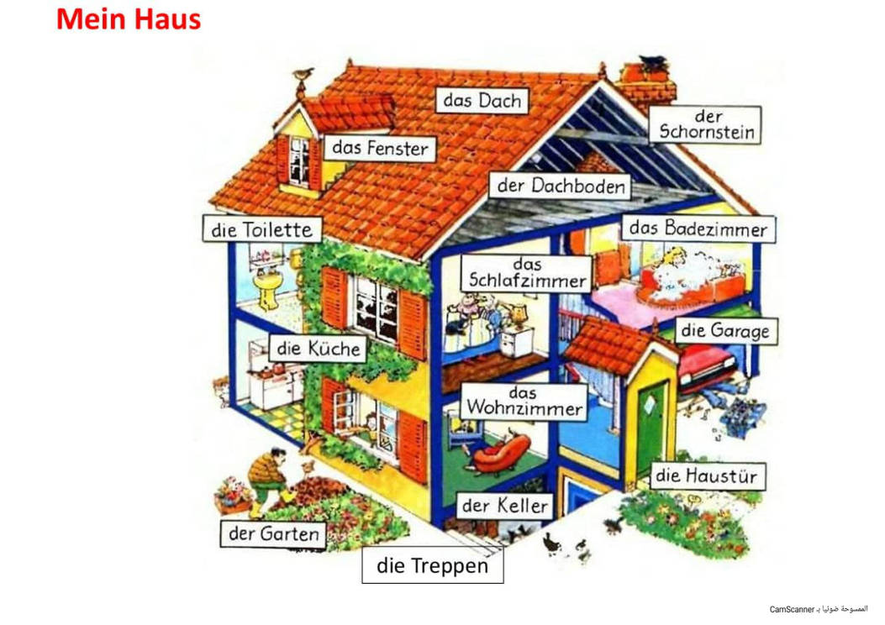
| German | English | Arabic |
|---|---|---|
| das Dach | roof | السقف |
| der Schornstein | chimney | المدخنة |
| das Fenster | window | الشباك |
| der Dachboden | attic | العلية |
| die Toilette | toilet | المرحاض / التواليت |
| das Badezimmer | bathroom | الحمام |
| das Schlafzimmer | bedroom | غرفة النوم |
| die Küche | kitchen | المطبخ |
| die Garage | garage | الجراج |
| das Wohnzimmer | living room | غرفة المعيشة |
| die Haustür | front door | باب المنزل |
| der Keller | basement, cellar | القبو / البدروم |
| der Garten | garden | الحديقة |
| die Treppe | die Treppen (pl.) · stairs | السلم |
| finden to find يجد | kaufen to buy يشتري | einkaufen to shop يتسوق | brauchen to need يحتاج | wollen to want يريد | |
|---|---|---|---|---|---|
| ich | finde | kaufe | kaufe ein | brauche | will |
| du | findest | kaufst | kaufst ein | brauchst | willst |
| er / sie / es | findet | kauft | kauft ein | braucht | will |
| wir | finden | kaufen | kaufen ein | brauchen | wollen |
| ihr | findet | kauft | kauft ein | braucht | wollt |
| sie / Sie | finden | kaufen | kaufen ein | brauchen | wollen |
einkaufen is separable: the prefix ein goes to the end. wollen is a modal verb: ich and er/sie/es have the same form (will) with no ending. Stem ending in -d (finden) adds an e: du findest, er findet.
No mistakes on this page.
| German | English | Arabic |
|---|---|---|
| das Büro | office | المكتب |
| das Formular | form (to fill in) | استمارة |
| das Notizbuch | notebook | مذكرة / نوتة |
| der Drucker | printer | طابعة |
| der Computer / der Rechner | computer | كمبيوتر |
| der Stift | pen | قلم |
| die Maus | mouse | الفأرة (الماوس) |
| der Kalender | calendar | نتيجة / تقويم |
| der Bildschirm | screen | شاشة |
| die Firma | company | شركة |
| der Manager / der Chef | manager / boss | مدير |
| um | at (+ clock time) | عند (الساعة) |
| arbeiten bei … | to work at/for … (+ company name) | تعمل في … (+ اسم الشركة) |
| das Buch | book | الكتاب |
| die Seiten (die Seite) | pages | الصفحات |
| die Rechnung | bill / invoice | فاتورة |
| brauchen | to need | يحتاج |
| suchen | to search / look for | يبحث |
Achtung! Termine! Neu! — Attention! Appointments! New! — تنبيه! مواعيد! جديدة!
The masculine article der changes when the noun is the object (Akkusativ): der → den. die, das and plural stay the same.
تتأثر أداة التعريف في حالة المذكر (der) إن كانت الكلمة فاعل فتظل كما هي، أما إن كانت مفعول به فتصبح (den).
| Case | German | English | Arabic |
|---|---|---|---|
| Nominativ | Der Schlüssel ist groß. | The key is big. | المفتاح كبير. |
| Nominativ | Da ist der Schlüssel. | There is the key. | المفتاح هناك. |
| Akkusativ | Ich habe den Schlüssel. | I have the key. | أنا معي المفتاح. |
| Akkusativ | Ich hole den Schlüssel ab. | I pick up the key. | أنا أجيب (أحضر) المفتاح. |
abholen is a separable verb: ich hole … ab — the prefix goes to the end. الجملة بها فعل منفصل.
| Gender | definiter Artikel (the) معرفة | indefiniter Artikel (a) نكرة | Negativ (no / not a) منفية |
|---|---|---|---|
| maskulin مذكر — Nominativ | der | ein | kein |
| maskulin — Akkusativ | den | einen | keinen |
| neutral محايد | das | ein | kein |
| feminin مؤنث | die | eine | keine |
| Plural جمع | die | — | keine |
ملاحظات: لو الكلمة مذكرة بشوف هل هي فاعل أم مفعول علشان أحدد. الفرق بين أداة التعريف المعرفة والنكرة: المعرفة أقصد حاجة معينة ذُكرت قبل كده، أما النكرة فمقصدش حاجة بالتحديد.
Notes: for a masculine noun, check whether it is subject or object. Definite = a specific thing already mentioned; indefinite = any one, nothing specific.
| stehen | liegen | geben | abholen | wissen | suchen | |
|---|---|---|---|---|---|---|
| meaning | to stand يقف | to lie / be located يقع / مُلقى | to give يعطي | to pick up يُحضر / يستلم | to know (a fact) يعرف | to look for يبحث |
| ich | stehe | liege | gebe | hole ab | weiß | suche |
| du | stehst | liegst | gibst | holst ab | weißt | suchst |
| er/sie/es | steht | liegt | gibt | holt ab | weiß | sucht |
| wir | stehen | liegen | geben | holen ab | wissen | suchen |
| ihr | steht | liegt | gebt | holt ab | wisst | sucht |
| sie/Sie | stehen | liegen | geben | holen ab | wissen | suchen |
Irregular: geben (e → i: du gibst, er gibt) and wissen (ich weiß, du weißt, er weiß — no -t for er/sie/es).
| German | English | Arabic |
|---|---|---|
| das Wörterbuch | dictionary | قاموس |
| der Kollege | colleague | زميل |
| die Zeit | time | وقت |
| Bis später! | See you later! | إلى وقت لاحق |
| (ich) weiß | (I) know | أعرف |
| German | English | Arabic |
|---|---|---|
| Es ist ein Uhr. | It is one o’clock. | الساعة تكون ١ |
| Es ist halb sechs. | It is half past five (5:30). | الساعة ٥ ونص (حرفيًا: نص ستة) |
| Es ist fünf Uhr dreißig. | It is 5:30 (official form). | الساعة ٥ و٣٠ (الشكل الرسمي) |
| Es ist Viertel vor zehn. | It is quarter to ten (9:45). | الساعة عشرة إلا ربع |
| Es ist zwanzig nach drei. | It is twenty past three (3:20). | الساعة ٣ وثلث |
| Es ist fünf nach halb elf. | It is 10:35. | الساعة ١٠ ونص وخمسة |
nach = past و · vor = to إلا · Viertel = quarter ربع · halb = half (of the NEXT hour) نص
| German | English | Arabic | Time | Greeting |
|---|---|---|---|---|
| der Morgen | morning | صباحًا بدري | 6–9 | Guten Morgen! |
| der Vormittag | late morning | قبل الظهر | 9–12 | Guten Morgen! / Guten Tag! |
| der Mittag | noon | الظهيرة | 12–14 | Guten Tag! |
| der Nachmittag | afternoon | بعد الظهر | 14–18 | Guten Tag! |
| der Abend | evening | المساء | 18–21 | Guten Abend! |
| die Nacht | night | الليل | 21–6 | Gute Nacht! |
| German | English | Arabic |
|---|---|---|
| vorgestern | the day before yesterday | أول أمس |
| gestern | yesterday | أمس |
| heute | today | اليوم |
| morgen | tomorrow | الغد / بكرة |
| übermorgen | the day after tomorrow | بعد الغد |
Die Woche besteht aus sieben Tagen. — The week consists of seven days. — الأسبوع يتكون من ٧ أيام.
| # | German | English | Arabic |
|---|---|---|---|
| 1 | der Montag | Monday | الاثنين |
| 2 | der Dienstag | Tuesday | الثلاثاء |
| 3 | der Mittwoch | Wednesday | الأربعاء |
| 4 | der Donnerstag | Thursday | الخميس |
| 5 | der Freitag | Friday | الجمعة |
| 6 | der Samstag | Saturday | السبت |
| 7 | der Sonntag | Sunday | الأحد |
Das Jahr hat zwölf Monate. — The year has twelve months. — السنة عندها ١٢ شهر.
| German | English | Arabic |
|---|---|---|
| der Januar | January | يناير |
| der Februar | February | فبراير |
| der März | March | مارس |
| der April | April | أبريل |
| der Mai | May | مايو |
| der Juni | June | يونيو |
| der Juli | July | يوليو |
| der August | August | أغسطس |
| der September | September | سبتمبر |
| der Oktober | October | أكتوبر |
| der November | November | نوفمبر |
| der Dezember | December | ديسمبر |
| German (plural) | English | Arabic |
|---|---|---|
| der Frühling (-e) | spring | الربيع |
| der Sommer (-) | summer | الصيف |
| der Herbst (-e) | autumn | الخريف |
| der Winter (-) | winter | الشتاء |
| German | English | Arabic |
|---|---|---|
| kochen | to cook | يطبخ |
| singen | to sing | يغني |
| lesen | to read | يقرأ |
| Freunde treffen | to meet friends | يقابل الأصدقاء |
| im Internet surfen | to surf the internet | يقلب على النت |
| schwimmen | to swim | يسبح |
| fotografieren | to take photos | يصوّر |
| Fußball spielen | to play football | يلعب كرة قدم |
| malen | to paint | يرسم |
| backen | to bake | يخبز |
| Musik hören | to listen to music | يستمع للموسيقى |
| spazieren gehen | to go for a walk | يذهب للتمشية |
| Schach spielen | to play chess | يلعب شطرنج |
| Rad fahren | to ride a bike | يركب العجلة |
| German | English | Arabic |
|---|---|---|
| Sie können aber toll Ski fahren! | You can really ski brilliantly! | حضرتك تستطيع بصورة رائعة التزحلق على الجليد. |
| Du kannst wirklich sehr gut Gitarre spielen. | You can really play the guitar very well. | إنت فعلًا بتلعب جيتار جيد جدًا. |
| Du kannst wirklich gut Tennis spielen. | You really play tennis well. | إنت بتستطيع تلعب تنس بصورة جيدة. |
| Wow! Du kannst ja super tanzen! | Wow! You dance really great! | واو! إنت بترقص بصورة رائعة. |
| German | English | Arabic |
|---|---|---|
| Vielen Dank! | Many thanks! | شكرًا جزيلًا |
| Oh, danke! | Oh, thanks! | أشكرك |
| Danke sehr! | Thank you very much! | شكرًا جدًا |
| Herzlichen Dank! | Heartfelt thanks! | أشكرك من قلبي |
| German | English | Arabic |
|---|---|---|
| Was sind deine Hobbys? | What are your hobbies? | ما هي هواياتك؟ |
| Meine Hobbys sind … und … | My hobbies are … and … | هواياتي هي … و … |
| Mein Hobby ist … | My hobby is … | هوايتي هي … |
| Ich … gern. | I like to … (e.g. Ich schwimme gern.) | أنا أحب أن … (أمارس) |
| Was machst du in der Freizeit? | What do you do in your free time? | بتعمل إيه في وقت فراغك؟ |
| Fährst du gern Ski? | Do you like skiing? (answer yes/no) | هل تحب تمارس التزلج؟ (إجابة بنعم أو لا) |
| Liest du gern? | Do you like reading? | إنت بتحب تقرأ؟ |
| Wie oft gehst du ins Kino? | How often do you go to the cinema? | بتروح السينما كام مرة؟ |
| Ich gehe oft / manchmal / nie ins Kino. | I often / sometimes / never go to the cinema. | أنا بروح السينما كثيرًا / أحيانًا / أبدًا |
| Mein Lieblingsfilm ist … | My favourite film is … | فيلمي المفضل هو … |
| treffen يقابل | schwimmen يسبح | malen يرسم | singen يغني | |
|---|---|---|---|---|
| ich | treffe | schwimme | male | singe |
| du | triffst | schwimmst | malst | singst |
| er/sie/es | trifft | schwimmt | malt | singt |
| wir | treffen | schwimmen | malen | singen |
| ihr | trefft | schwimmt | malt | singt |
| sie/Sie | treffen | schwimmen | malen | singen |
| kochen يطبخ | lesen يقرأ | hören يسمع | backen يخبز | |
|---|---|---|---|---|
| ich | koche | lese | höre | backe |
| du | kochst | liest | hörst | backst |
| er/sie/es | kocht | liest | hört | backt |
| wir | kochen | lesen | hören | backen |
| ihr | kocht | lest | hört | backt |
| sie/Sie | kochen | lesen | hören | backen |
Stem changes: treffen e → i (du triffst, er trifft); lesen e → ie (du liest, er liest).
| German | English | Arabic |
|---|---|---|
| das Kino | cinema | سينما |
| das Theater | theatre | المسرح |
| das Museum | museum | المتحف |
| das Café | café | كافيه / مقهى |
| die Ausstellung | exhibition | المعرض |
| die Moschee | mosque | المسجد |
| das Stadion | stadium | الاستاد |
| das Restaurant | restaurant | المطعم |
| die Kirche | church | الكنيسة |
| German | English | Arabic |
|---|---|---|
| ein bisschen | a little | حاجة بسيطة / شوية |
| wirklich | really | حقيقي / فعلًا |
| so gern | so much (like) | قوي / أوي |
| fast nie | almost never | تقريبًا لا يحدث |
| oft | often | كثيرًا / بصورة متكررة |
| immer | always | دائمًا |
| manchmal | sometimes | أحيانًا |
| nie | never | أبدًا |
| Use | German | English | Arabic |
|---|---|---|---|
| days (and parts of the day) | am Montag, am Abend | on Monday, in the evening | مع الأيام |
| clock time | um acht Uhr | at eight o’clock | مع الساعة |
| night (and months/seasons) | in der Nacht, im Mai, im Sommer | at night, in May, in summer | مع الليل والشهور والفصول |
| German | English | Arabic |
|---|---|---|
| das Essen | food / meal | الطعام |
| die Getränke (das Getränk) | drinks | المشروبات |
| das Obst | fruit | الفاكهة |
| das Gemüse | vegetables | الخضروات |
| German | English | Arabic |
|---|---|---|
| die Gabel | fork | شوكة |
| die Tasse, pl. die Tassen | cup(s) | فنجان / فناجين |
| der Löffel | spoon | معلقة |
| der Teller | plate | طبق |
| das Messer | knife | سكينة |
| das Besteck | cutlery | شوكة ومعلقة وسكينة |
| das Geschirr | dishes / crockery | المواعين / الأواني |
| German | English | Arabic |
|---|---|---|
| die Orange | orange | برتقال |
| die Butter | butter | زبدة |
| die Schokolade | chocolate | شوكولاتة |
| die Suppe | soup | شوربة |
| die Nudeln | pasta / noodles | مكرونة |
| die Pommes | French fries | بطاطس (محمرة) |
| der Honig | honey | عسل |
| der Fisch | fish | سمكة |
| der Kuchen | cake | كعكة / كيكة |
| der Tee | tea | شاي |
| der Braten | roast meat | لحمة محمرة |
| der Salat | salad | سلطة |
| der Käse | cheese | جبنة |
| das Ei | egg | بيض |
| das Brot | bread | خبز / عيش |
| das Fleisch | meat | لحمة |
| German | English | Arabic |
|---|---|---|
| die Karotte | carrot | جزر |
| die Zwiebel | onion | بصل |
| der Pilz | mushroom | فطر / مشروم |
| die Kartoffel | potato | بطاطس |
| die Gurke | cucumber | خيار |
| die Tomate | tomato | طماطم |
| der Pfeffer | pepper (spice) | فلفل |
| der Kohl | cabbage | كرنب |
| der Blumenkohl | cauliflower | قرنبيط |
| der Kürbis | pumpkin | يقطين |
| der Mais | corn | ذرة |
| die Erbsen (die Erbse) | peas | بسلة |
| German | English | Arabic |
|---|---|---|
| der Apfel | apple | تفاح |
| die Ananas | pineapple | أناناس |
| die Erdbeere | strawberry | فراولة |
| die Banane | banana | موز |
| die Haselnuss | hazelnut | البندق |
| die Brombeere | blackberry | توت |
| die Kirsche | cherry | كرز |
| die Aprikose | apricot | مشمش |
| die Birne | pear | كمثرى |
| die Erdnuss | peanut | فول سوداني |
| German | English | Arabic |
|---|---|---|
| das Wasser | water | مياه |
| das Mineralwasser | mineral water | مياه معدنية |
| das Sprudelwasser | sparkling water | مياه بالصودا (فوّارة) |
| der Tee | tea | شاي |
| der Kräutertee | herbal tea | شاي بالأعشاب |
| der Kaffee | coffee | قهوة |
| der Fruchtsaft | fruit juice | عصير فواكه |
| der Orangensaft | orange juice | عصير برتقال |
| der Apfelsaft | apple juice | عصير تفاح |
| die Milch | milk | اللبن |
| dürfen | können | möchten | müssen | sollen | wollen | |
|---|---|---|---|---|---|---|
| meaning | may / be allowed يُسمح | can يستطيع | would like يرغب | must يجب | should ينبغي | want يريد |
| ich | darf | kann | möchte | muss | soll | will |
| du | darfst | kannst | möchtest | musst | sollst | willst |
| er/sie/es | darf | kann | möchte | muss | soll | will |
| wir | dürfen | können | möchten | müssen | sollen | wollen |
| ihr | dürft | könnt | möchtet | müsst | sollt | wollt |
| sie/Sie | dürfen | können | möchten | müssen | sollen | wollen |
ich and er/sie/es have the same form (no -t). The second verb goes to the end in the infinitive: Ich kann gut schwimmen. — I can swim well. — أنا أستطيع السباحة جيدًا.
No mistakes on this page.
| mögen يحب / يفضّل | essen يأكل | trinken يشرب | frühstücken يفطر | |
|---|---|---|---|---|
| ich | mag | esse | trinke | frühstücke |
| du | magst | isst | trinkst | frühstückst |
| er/sie/es | mag | isst | trinkt | frühstückt |
| wir | mögen | essen | trinken | frühstücken |
| ihr | mögt | esst | trinkt | frühstückt |
| sie/Sie | mögen | essen | trinken | frühstücken |
essen changes e → i (du isst, er isst). mögen = to like (يحب); the sheet glosses it „يفضّل“ (prefer), which is close enough — “prefer” is more exactly lieber mögen.
No mistakes on this page.
| German | English | Arabic |
|---|---|---|
| die Speisekarte | menu | المنيو / قائمة الطعام |
| kalt | cold | بارد |
| warm | warm | دافئ |
| die Lust | desire, wish (to do something) | رغبة |
Modal verbs = verbs that need a second verb with them. الأفعال المساعدة: هي أفعال لازم يجي معاها فعل كمان.
| German | English | Arabic |
|---|---|---|
| auf | on (on top, touching) | على (ملامس) |
| an | at / on (side, touching) | جنبه أو بجواره (ملامس) |
| neben | next to (with a gap) | جنبه بمسافة |
| vor | in front of | أمام |
| hinter | behind | خلف |
| zwischen | between | بين |
| über | above (not touching) | فوق |
| unter | under | تحت |
| in | in | في |
After these prepositions, when the question is Wo? (where?), the noun takes the Dativ:
| Artikel (Nominativ) | Dativ |
|---|---|
| der | dem |
| die | der |
| das | dem |
| die (Plural) | den (+ -n on the noun) |
| German | English | Arabic |
|---|---|---|
| Wo liegt der Ball? | Where is the ball? | أين تقع الكرة؟ |
| Der Ball liegt zwischen der Pyramide und dem Würfel. | The ball is between the pyramid and the cube. | تقع الكرة بين الهرم والمكعب. |
| German | English | Arabic |
|---|---|---|
| der Stab | rod / stick (cylinder) | عصا / أسطوانة |
| die Pyramide | pyramid | الهرم |
| der Ball | ball | الكرة |
| der Würfel | cube | المكعب |
| German | English | Arabic |
|---|---|---|
| die Stadtmitte | town centre | وسط البلد |
| das Zentrum | centre | وسط البلد / المركز |
| der Bahnhof | train station | محطة قطار |
| der Dom | cathedral | كاتدرائية |
| die Bank | bank | بنك |
| die Post | post office | مكتب البريد |
| die Polizei | police (station) | قسم شرطة |
| die Ampel | traffic light | إشارة مرور |
| die Brücke | bridge | كوبري |
| abbiegen ينعطف | entschuldigen يعتذر / يستأذن | wenden يلف / يرجع | fragen يسأل | |
|---|---|---|---|---|
| ich | biege ab | entschuldige | wende | frage |
| du | biegst ab | entschuldigst | wendest | fragst |
| er/sie/es | biegt ab | entschuldigt | wendet | fragt |
| wir | biegen ab | entschuldigen | wenden | fragen |
| ihr | biegt ab | entschuldigt | wendet | fragt |
| sie/Sie | biegen ab | entschuldigen | wenden | fragen |
abbiegen is separable (ich biege … ab). wenden adds -e- before -st/-t because the stem ends in -d (du wendest, er wendet).
No mistakes on this page.
1. Sie können hier essen. (You can eat here.)
2. Anderes Wort für Stadtmitte. (Another word for town centre.)
3. Hier fahren Züge ab und es kommen Züge an. (Trains leave and arrive here.)
4. Hier bekommen Sie Geld. (Here you get money.)
5. Hier können Sie Briefmarken kaufen. (Here you can buy stamps.)
6. Rot: Sie bleiben stehen. Grün: Sie können fahren. (Red: you stop. Green: you can go.)
7. Hier können Sie einen Tee oder Kaffee trinken. (Here you can drink tea or coffee.)
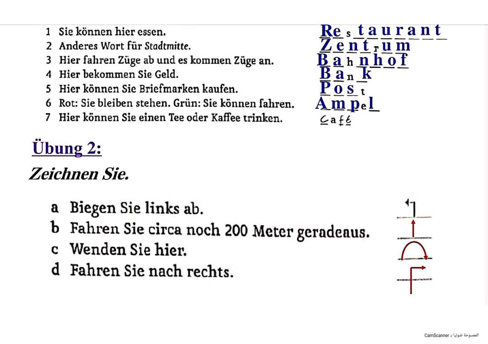
a. Biegen Sie links ab. — Turn left. — انعطف يسارًا.
b. Fahren Sie circa noch 200 Meter geradeaus. — Drive about another 200 metres straight on. — اسُق حوالي ٢٠٠ متر أخرى على طول.
c. Wenden Sie hier. — Turn around here (U-turn). — لُف (ارجع) هنا.
d. Fahren Sie nach rechts. — Drive to the right. — اسُق ناحية اليمين.
No mistakes on this page.
der Nominativ = the subject case حالة الكلمة المرفوعة (الفاعل)
der Artikel = the article الأداة. There are three kinds:
| Kind | English | Arabic |
|---|---|---|
| bestimmt (der / das / die) | definite = "the" | معرفة — تعادل the في الإنجليزية |
| unbestimmt (ein / eine) | indefinite = "a / an" | نكرة — تعادل a في الإنجليزية |
| negativ (kein / keine) | negative = "no / not a" | نفي النكرة |
| Gender | definite | indefinite | negative |
|---|---|---|---|
| masculine المذكر | der | ein | kein |
| neuter المحايد | das | ein | kein |
| feminine المؤنث | die | eine | keine |
| plural الجمع | die | — (none) | keine |
صيغ الجمع مختلفة غالباً، فلازم نلاحظ اختلاف حروف الكلمة عشان نحل أسئلة الاختيارات.
| Singular | Plural | English | Arabic |
|---|---|---|---|
| das Auge | die Augen | eye | عين — عيون |
| die Kollegin | die Kolleginnen | colleague (f) | زميلة — زميلات |
| das Auto | die Autos | car | سيارة — سيارات |
| das Kind | die Kinder | child | طفل — أطفال |
| die Tochter | die Töchter | daughter | ابنة — بنات |
| die Frau | die Frauen | woman | سيدة — سيدات |
| der Sohn | die Söhne | son | ابن — أبناء |
| German | English | Arabic |
|---|---|---|
| Hier ist der Apfel. | Here is the apple. | هنا التفاحة. |
| Hier ist ein Apfel. | Here is an apple. | هنا تفاحة. |
| Hier ist kein Apfel. | There is no apple here. | هنا لا يوجد تفاحة. |
How do I know a noun is in the accusative, and does the article change? Like in Arabic: the noun that the action happens to (the direct object) is accusative.
إزاي أعرف الكلمة منصوبة؟ زي اللغة العربية: الكلمة اللي بيقع عليها فعل الفاعل (المفعول به). مثال: آكل التفاحةَ.
| German | English | Arabic |
|---|---|---|
| Ich esse den Apfel. | I eat the apple. | آكل التفاحة. |
| Ich esse einen Apfel. | I eat an apple. | آكل تفاحة. |
| Ich esse keinen Apfel. | I eat no apple. | لا آكل أي تفاحة. |
| Gender | definite | indefinite | negative |
|---|---|---|---|
| masculine المذكر | den | einen | keinen |
| neuter المحايد | das | ein | kein |
| feminine المؤنث | die | eine | keine |
| plural الجمع | die | — (none) | keine |
wer asks about the person who does the action (subject). عند السؤال عن العاقل الذي يقوم بالفعل نسأل بـ wer.
wen asks about the person the action happens to (object). عند السؤال عن العاقل الذي يقع عليه الفعل نسأل بـ wen.
Here ihr is the subject (the ones visiting), and the grandma is the one being visited, so we ask with wen. الفاعل اللي قام بالزيارة هو ihr (أنتم)، والجدة وقع عليها الفعل.
Besides kein there is another negation word: nicht. هناك كلمة أخرى تستخدم في النفي بدلاً من kein وهي nicht.
kein negates an indefinite noun (a thing, not a person's name). نستخدم kein لنفي الاسم الغير معرف (يعني مش اسم شخص).
nicht negates a definite noun, a name, and a noun with a possessive. نستخدم nicht لنفي الاسم المعرف والأسماء وأدوات الملكية.
| German | English | Arabic |
|---|---|---|
| Das ist nicht Corinna. | That is not Corinna. (a name → nicht) | دي مش كورينا. (اسم شخص ← nicht) |
| Das ist nicht meine Brille. | Those are not my glasses. (possessive → nicht) | دي مش نظارتي. (ضمير ملكية ← nicht) |
Apfel is not a name, so we negate it with kein. عشان Apfel مش اسم شخص نفيناه بـ kein.
أدوات الملكية
| Noun is… | ich | du | er / es | sie | Sie | wir | ihr |
|---|---|---|---|---|---|---|---|
| der / das (nom.) | mein | dein | sein | ihr | Ihr | unser | euer |
| die (fem.) / die (pl.) | meine | deine | seine | ihre | Ihre | unsere | eure |
| den (masc. Akk.) | meinen | deinen | seinen | ihren | Ihren | unseren | euren |
ich = I أنا
du = you أنت
er / es = he / it هو / لغير العاقل
sie = she هي
Sie = you (formal) حضرتك / حضرتكم
wir = we نحن
ihr = you all أنتم
Step 1: find the owner's personal pronoun. Example: "I" = ich → look in the table → mein. أول شيء أحدد الضمير الشخصي: أنا = ich، أطلع على الجدول ألاقي أداة ملكيته mein.
Step 2: look at the owned noun: masculine / neuter / feminine / plural, nominative or accusative. Feminine → second row. بعد ما حددت الضمير، أشوف الكلمة نوعها إيه؟ مؤنث؟ يبقى الصف الثاني.
| German | English | Arabic |
|---|---|---|
| Meine Hand tut mir weh. | My hand hurts. | إيدي بتوجعني. |
| Herr Helbig wohnt im 1. Stock. Er findet seinen Keller zu klein. | Mr Helbig lives on the 1st floor. He finds his basement too small. | السيد هيلبيج ساكن في الدور الأول. هو يجد البدروم صغير جداً. |
Explanation: the owner is "he" = er → sein. Keller is masculine and is the object (accusative) → seinen.
التوضيح: لازم نعرف الاسم المملوك في حالة رفع أم نصب. أول حاجة حددنا الضمير الشخصي er، وعليه هنختار أداة الملكية sein. ثاني حاجة كلمة Keller مذكرة وواقعة مفعول، يبقى نختار seinen.
| German | English | Arabic |
|---|---|---|
| Mona mag ihren Garten sehr. | Mona likes her garden a lot. | منى بتحب حديقتها جداً. |
Why ihren? Mona = she → ihr from the table. Garten is masculine and the object → ihren.
Mona يُعوَّض عنها بـ ihr من الجدول. كلمة Garten مذكرة وواقعة مفعول، فتبقى الإجابة ihren.
The rest of this page is blank (only show-through from the next page).
The adjective question in the exam usually comes from these five (not always). The letters may be scrambled, or you are asked for the word or its opposite.
سؤال الصفات غالباً مش هيخرج عن الخمس صفات دول (بس مش غالباً أوي). السؤال بيجي الحروف متلغبطة وانت ترتبهم، أو يطلب الكلمة وعكسها.
| German | English | Arabic |
|---|---|---|
| 1. billig | cheap | رخيص |
| 2. lang | long | طويل |
| 3. groß | big | كبير |
| 4. modern | modern | حديث |
| 5. bequem | comfortable | مريح |
| German | English | Arabic |
|---|---|---|
| hässlich | ugly | قبيح |
| schön | beautiful | جميل |
| alt | old | قديم |
| kurz | short | قصير |
| heiß | hot | حار |
| kalt | cold | بارد |
| praktisch | practical | عملي |
| unpraktisch | impractical | غير عملي |
| German | English | Arabic |
|---|---|---|
| 1. Wer bist du? | Who are you? | من أنت؟ |
| 2. Wie geht es dir? | How are you? | كيف حالك؟ |
| 3. Woher kommst du? | Where are you from? | من أين أنت؟ |
| 3. Woher kommen Sie? | Where are you from? (formal) | من أين حضرتك؟ |
| 4. Wie heißt du? | What is your name? | ما اسمك؟ |
| 5. Und was ist das? | And what is that? | وما هذا؟ |
| 6. Wie bitte? | Pardon? / Sorry, what did you say? | معذرة؟ / نعم؟ |
This is usually the last question in the exam. غالباً بيكون آخر سؤال في الامتحان: سؤال وصف الطريق.
To answer it you need to know these words: عشان تعرف تحل السؤال ده لازم تكون حافظ كلمات معينة تساعدك في الوصف:
| German | English | Arabic |
|---|---|---|
| rechts | right | يمين |
| links | left | يسار |
| geradeaus | straight ahead | على طول / امتداد الطريق |
| in der Nähe | nearby | بالقرب من |
| zuerst | first | أولاً |
| dann | then | من ثم |
| zu Fuß | on foot | على الأقدام |
| dorthin | (to) there | هناك |
| weiter | further / on | مرة أخرى / استمر |
| abbiegen | to turn | يحوّد / يدور |
| danach | after that | بعد ذلك |
| German | English | Arabic |
|---|---|---|
| Sie gehen geradeaus und biegen dann rechts / links ab. | You go straight ahead and then turn right / left. | تمشي على طول وبعدين تحوّد يمين / شمال. (اسم المكان من الخريطة، و ab في آخر الجملة) |
| Danach biegen Sie rechts / links ab. | After that you turn right / left. | بعد ذلك تحوّد يمين / شمال (حسب الخريطة). |
| Sie gehen weiter geradeaus zum … . | You keep going straight on to the … . | تستمر على طول حتى … (zum + نقطة النهاية المذكر أو المحايد) |
Start with Hallo + the person's name. End with Bis bald! (see you soon) and Liebe Grüße + your name (kind regards).
لو طلب وصف الطريق بصورة e-mail: تقول في الأول Hallo واسم الشخص، وفي الآخر Bis bald (حتى نلتقي) و Liebe Grüße واسمك.
From the exam ideas: the "choose" question. من أفكار الامتحانات: سؤال الـ Choose.
| German | English | Arabic |
|---|---|---|
| Es ist zehn vor neun. | It is ten to nine = 8:50. | الساعة عشرة قبل تسعة، لأن vor يعني قبل، يعني الساعة تسعة إلا عشرة = 8:50. |
How is 374 written in German? Like we say it in Arabic: hundreds, then units, then tens. إزاي الرقم بيتكتب بالألماني؟ زي ما بننطقه بالعربي: الأول ثلاثمائة، ثم أربعة، ثم سبعين.
374 = dreihundertvierundsiebzig (one word) ثلاثمائة وأربعة وسبعون
Of course you must know the numbers by heart: طبعاً لازم تكون حافظ الأرقام من صفر لعشرة والعشرات.
| Number | German | Number | German |
|---|---|---|---|
| 0 | null | — | — |
| 1 | eins | — | — |
| 2 | zwei | 20 | zwanzig |
| 3 | drei | 30 | dreißig |
| 4 | vier | 40 | vierzig |
| 5 | fünf | 50 | fünfzig |
| 6 | sechs | 60 | sechzig |
| 7 | sieben | 70 | siebzig |
| 8 | acht | 80 | achtzig |
| 9 | neun | 90 | neunzig |
| 10 | zehn | 100 | hundert |
| German | English | Arabic |
|---|---|---|
| weiß | white | أبيض |
| schwarz | black | أسود |
| rot | red | أحمر |
| grün | green | أخضر |
| blau | blue | أزرق |
| grau | grey | رمادي |
| gelb | yellow | أصفر |
| Die Pommes haben eine schöne gelbe Farbe. | The fries have a nice yellow colour. | البطاطس المقلية لونها أصفر جميل. |
| German | English | Arabic |
|---|---|---|
| fremd | foreign / a stranger | غريب |
| Ich bin fremd hier. Können Sie mir helfen? | I'm new here. Can you help me? | أنا غريب هنا. ممكن تساعدني؟ |
Choose: Wir haben keine Stifte. Wir brauchen ___ Stifte.
einen
eins
zwei
eine
| German | English | Arabic |
|---|---|---|
| Mein Schlafzimmer ist immer hell. Es hat zwei Fenster. | My bedroom is always bright. It has two windows. | غرفة نومي دايماً منورة. فيها شباكين. |
| German | English | Arabic |
|---|---|---|
| gestern | yesterday | أمس |
| vorgestern | the day before yesterday | أول أمس |
| der Samstag | Saturday | السبت |
| der Sonntag | Sunday | الأحد |
| der Montag | Monday | الاثنين |
| der Dienstag | Tuesday | الثلاثاء |
| der Mittwoch | Wednesday | الأربعاء |
| der Donnerstag | Thursday | الخميس |
| der Freitag | Friday | الجمعة |
| German | English | Arabic |
|---|---|---|
| arbeitslos | unemployed | عاطل |
| die Arbeit | work / job | شغل |
| Seine Frau hat keine Arbeit. Sie ist arbeitslos. | His wife has no job. She is unemployed. | زوجته ليس لديها شغل. هي عاطلة. |
Usually asked with ich. وغالباً بيطلب تصريفه مع الضمير ich.
| Pronoun | möchten (would like) يود | sollen (should) ينبغي / يجب |
|---|---|---|
| ich | möchte | soll |
| du | möchtest | sollst |
| er / es / sie | möchte | soll |
| wir | möchten | sollen |
| ihr | möchtet | sollt |
| Sie (formal) | möchten | sollen |
| German | English | Arabic |
|---|---|---|
| der Staat | state / country | دولة |
| die Stadt | city | مدينة |
| der Kontinent | continent | قارة |
| Afrika ist ein Kontinent. | Africa is a continent. | أفريقيا قارة. |
| German | English | Arabic |
|---|---|---|
| der Bruder | brother | أخ |
| der Cousin / die Cousine | cousin (m / f) | ابن العم / بنت العم |
| die Mutter | mother | أم |
| der Vater | father | أب |
| der Neffe | nephew | ابن الأخ |
| die Nichte | niece | ابنة الأخت |
| German | English | Arabic |
|---|---|---|
| die Ausbildung | vocational training / education | تعليم / تدريب مهني |
| das Praktikum | internship | تدريب عملي |
| Ali hat ein Praktikum bei der Firma Top. | Ali has an internship at the company Top. | علي عنده تدريب في شركة توب. |
| German | English | Arabic |
|---|---|---|
| verheiratet | married | متزوج |
| ledig | single | أعزب |
| geschieden | divorced | مطلق |
| allein | alone | يعيش وحيداً |
| Mein Bruder ist nicht verheiratet. Er lebt allein. | My brother is not married. He lives alone. | أخي غير متزوج. هو يعيش وحده. |
Doch = "yes (it is!)". You use it only to answer a negative question with a yes. Answer with nein to say no. Use ja to say yes to a normal (not negative) question.
Doch تعني بلى: تجاوب بيها على السؤال المبدوء بنفي فقط في حالة الإثبات، و Nein للنفي. أما Ja تستخدم للإثبات في حالة الإجابة على سؤال غير مبدوء بنفي.
الضمائر الشخصية
| Person | Singular | Plural |
|---|---|---|
| speaker المتكلم | ich = I أنا | wir = we نحن |
| addressed المخاطب | du = you أنتَ / أنتِ Sie = you (formal) حضرتك | ihr = you all أنتم Sie = you (formal) حضراتكم |
| talked about الغائب | er = he هو sie = she هي es = it هو لغير العاقل / المحايد | sie = they هم / هن |
Note: Herr (Mr) and Frau (Mrs / Ms) are polite titles. لاحظ الآتي: Herr سيد و Frau سيدة للاحترام.
| Who | Pronoun | Why |
|---|---|---|
| Ali / Herr Ali | er | We are talking about Ali, not to him. The verb takes the er form. هنا بنتكلم عن علي، مش بنوجه له الكلام، فبنعوّض عنه بـ er ونصرّف الفعل مع er. |
| Dalia / Frau Dalia | sie | she هي |
| Frankfurt, Ägypten | es | cities and most countries are neuter بلد / مدينة |
| Frau Dalia, … / Herr Ali, … | Sie | I am speaking to them politely (the comma shows I address them). لما أنا بوجه الكلام ليهم بصيغة الاحترام، نعوّض عنهم بـ Sie (حضرتك). |
| Ali und Dalia / Herr Ali und Frau Dalia / Bonn und Berlin | sie | they هم |
| German | English | Arabic |
|---|---|---|
| ich und du = wir | I and you = we | أنا وأنت = نحن |
| du und Ali = ihr | you and Ali = you all | أنت وعلي = أنتم |
| sie und Frau Dalia = sie | she and Mrs Dalia = they | هي والسيدة داليا = هم |
| er und sie = sie | he and she = they | هو وهي = هم |
German has two basic verbs whose conjugation you must memorise: sein (to be) and haben (to have).
هناك فعلين أساسيين في اللغة الألمانية نحفظ التصريف: sein يكون و haben يملك.
| Pronoun | sein (to be) يكون | haben (to have) يملك |
|---|---|---|
| ich أنا | bin | habe |
| du أنت | bist | hast |
| er / es / sie هو / محايد / هي | ist | hat |
| ihr أنتم | seid | habt |
| wir / sie / Sie نحن / هم / حضرتك | sind | haben |
تصريف الأفعال في اللغة الألمانية
German verbs end in -en or -n. To conjugate, drop it and add the ending. من الملاحظ أن الأفعال في الألمانية تنتهي بـ en أو n، لذلك عند التصريف نحذف الـ en أو الـ n ونضيف النهايات كالآتي.
Example: kommen = to come يأتي
| Pronoun | Ending | kommen |
|---|---|---|
| ich | -e | komme |
| du | -st | kommst |
| er / es / sie | -t | kommt |
| ihr | -t | kommt |
| wir / sie / Sie | -en | kommen |
If, after dropping -en, the stem ends in d or t, add an extra e before the ending for du, er / es / sie and ihr.
لاحظ أنه عند حذف الـ en إذا كان الفعل ينتهي بـ d أو t، نضيف حرف e مع الضمائر du و er/es/sie و ihr قبل النهاية.
Example: arbeiten = to work يعمل (after dropping -en the stem ends in t)
| Pronoun | arbeiten |
|---|---|
| ich | arbeite |
| du | arbeitest |
| er / es / sie | arbeitet |
| ihr | arbeitet |
| wir / sie / Sie | arbeiten |
If, after dropping -en, the stem ends in s, ss, ß, z or x, the du form adds only -t (not -st), to make it easier to say.
لاحظ أنه عندما نحذف الـ en من الفعل وانتهى الفعل بأحد هذه الحروف (s / ss / ß / z / x)، فإنه عند تصريف الفعل مع الضمير du نضيف t فقط وليس st لتخفيف النطق.
Example: heißen = to be called يُدعى / يُسمى
| Pronoun | heißen |
|---|---|
| ich | heiße |
| du | heißt |
| er / es / sie | heißt |
| ihr | heißt |
| wir / sie / Sie | heißen |
| German | du form | English | Arabic |
|---|---|---|---|
| begrüßen | du begrüßt | to greet | يلقي التحية |
| sitzen | du sitzt | to sit | يجلس |
| boxen | du boxt | to box | يلاكم |
| reisen | du reist | to travel | يسافر |
Some verbs are irregular: their vowel changes with du and er / es / sie.
هناك بعض الأفعال التي تعرف بالأفعال المختلفة، والتي يتغير تصريفها مع ضمائر المفرد du و er, es, sie.
| Pronoun | sprechen (to speak) يتحدث | schlafen (to sleep) ينام | lesen (to read) يقرأ | nehmen (to take) يأخذ |
|---|---|---|---|---|
| ich | spreche | schlafe | lese | nehme |
| du | sprichst | schläfst | liest | nimmst |
| er / es / sie | spricht | schläft | liest | nimmt |
| ihr | sprecht | schlaft | lest | nehmt |
| wir / sie / Sie | sprechen | schlafen | lesen | nehmen |
| Change | Verb | du form | English | Arabic |
|---|---|---|---|---|
| e → i الـ e تحولت لـ i | essen | du isst | to eat | يأكل |
| e → i | treffen | du triffst | to meet | يقابل |
| e → i | helfen | du hilfst | to help | يساعد |
| e → i | geben | du gibst | to give | يعطي |
| a → ä الـ a تحولت لـ ä | fahren | du fährst | to drive / travel | يسافر / يركب |
| a → ä | gefallen | es gefällt (mir) | to please (I like it) | يعجب (بالشكل) |
| a → ä | einladen | du lädst ein | to invite | يدعو |
| e → ie الـ e تحولت لـ ie | sehen | du siehst | to see | يرى |
| German | English | Arabic |
|---|---|---|
| ich | I | أنا |
| du | you | أنت |
| er / sie / es | he / she / it | هو / هي / للجماد |
| wir | we | نحن |
| ihr | you all | أنتم |
| sie / Sie | they / you (formal) | هم / للاحترام |
| German | English | Arabic |
|---|---|---|
| Woher kommst du? Aus der Türkei? | Where are you from? From Turkey? | من أين أنت؟ من تركيا؟ |
| nein | no | لا |
| oder | or | أو |
| die Stadt | city | مدينة |
| eine | a / one (fem.) | واحدة |
| der Staat | state / country | دولة |
| der Kontinent | continent | قارة |
| die Welt | world | العالم |
| Wie geht's? | How are you? | كيف حالك؟ |
| Gut, danke! | Fine, thanks! | جيد، شكراً! |
| Auch gut. | Fine too. | أيضاً جيد. |
| Auf Wiedersehen | goodbye | مع السلامة |
| Hallo | hello | أهلاً |
| Guten Morgen | good morning | صباح الخير |
| Guten Tag | good day / hello | يومك طيب |
| Guten Abend | good evening | مساء الخير |
| Gute Nacht | good night | تصبح على خير |
| Tschüs | bye | سلام |
| German | English | Arabic |
|---|---|---|
| Wie heißt du? | What is your name? | ما اسمك؟ (أنتَ / أنتِ) |
| Wie heißen Sie? | What is your name? (formal) | ما اسم حضرتك؟ |
| Ich heiße Ahmed. | My name is Ahmed. | اسمي أحمد. |
| Ich bin Ahmed. | I am Ahmed. | أنا أحمد. |
| Wer ist das? | Who is that? | من هذا؟ |
| Das ist … | That is … | هذا / هذه … |
| Ich komme aus Ägypten. | I come from Egypt. | أنا من مصر. |
| Ich bin Ägypter. | I am Egyptian. | أنا مصري. |
| Er ist Ägypter. | He is Egyptian. | هو مصري. |
| Ich komme aus Deutschland. | I come from Germany. | أنا من ألمانيا. |
| German | English | Arabic |
|---|---|---|
| Auf Wiedersehen | goodbye | مع السلامة |
| Auf Wiederhören | goodbye (on the phone) | مع السلامة (في مكالمة) |
| die Kommunikation | communication | التواصل / المحادثات |
| die Herkunft | origin | الأصل / الانتماء |
| Woher kommen Sie? | Where are you from? (formal) | حضرتك منين؟ |
| Woher kommst du? | Where are you from? | أنت منين؟ |
| sich und andere vorstellen | to introduce yourself and others | التعريف بنفسي وبالآخرين |
| Das ist Herr … / Frau … | This is Mr … / Mrs … | هذا السيد … / هذه السيدة … |
| nach dem Befinden fragen | to ask how someone is | السؤال عن الحال |
| Pronoun | kommen (to come) يأتي | heißen (to be called) يُدعى | sein (to be) يكون | haben (to have) يملك |
|---|---|---|---|---|
| ich | komme | heiße | bin | habe |
| du | kommst | heißt | bist | hast |
| er / sie / es | kommt | heißt | ist | hat |
| wir | kommen | heißen | sind | haben |
| ihr | kommt | heißt | seid | habt |
| sie / Sie | kommen | heißen | sind | haben |
| German | English | Arabic |
|---|---|---|
| gehen | to go / walk | يمشي |
| sehen | to see | يرى |
| hören | to hear | يسمع |
| reden | to talk | يتكلم |
| German | English | Arabic |
|---|---|---|
| wie | how | كيف |
| wo | where | أين |
| woher | where from | من أين |
| was | what | ما / ماذا |
| wann | when | متى |
| wer | who | من |
The rest of the page is show-through from the next page (no new content).
| German | English | Arabic |
|---|---|---|
| der Kleiderschrank | wardrobe | دولاب |
| das Regal | shelf | رف |
| das Krepppapier | crepe paper | ورق كريب |
| der Schreibtisch | desk | مكتب |
| die Wand | wall | حائط |
| der Geschirrspüler | dishwasher | غسالة أطباق |
| der Kühlschrank | fridge | ثلاجة |
| der Backofen | oven | فرن |
| die Spüle | kitchen sink | حوض |
| der Herd | stove / cooker | بوتاجاز |
| die Dusche | shower | الدش |
| die Wanne | bathtub | بانيو |
| das Klo | toilet (informal) | المرحاض |
| das Klopapier | toilet paper | مناديل المرحاض |
| das Waschbecken | washbasin | الحوض |
| Wie findest du meinen Tisch? | What do you think of my table? | ما رأيك في مكتبي / طاولتي؟ |
| altmodisch | old-fashioned | موضة قديمة |
| modern | modern | حديث |
| bequem | comfortable | مريح |
| unbequem | uncomfortable | غير مريح |
| hässlich | ugly | قبيح |
| unpraktisch | impractical | غير عملي |
| praktisch | practical | عملي |
| billig | cheap | رخيص |
| teuer | expensive | غالي |
| schön | beautiful | جميل |
| bitte | please | لو سمحت |
| Brauchen Sie Hilfe? | Do you need help? | محتاج مساعدة؟ |
| schwer | heavy / difficult | ثقيل |
| German | English | Arabic |
|---|---|---|
| arbeiten | to work | يعمل |
| die Haustür | front door | باب المنزل |
| das Fenster | window | شباك |
| das Wohnzimmer | living room | غرفة المعيشة |
| das Schlafzimmer | bedroom | غرفة النوم |
| das Badezimmer | bathroom | غرفة الاستحمام |
| die Toilette | toilet | حمام |
| die Küche | kitchen | المطبخ |
| der Garten | garden | الحديقة |
| die Treppe (pl. die Treppen) | stairs | السلم |
| der Keller | basement | بدروم |
| die Garage | garage | جراج |
| das Dach | roof | السقف |
| der Dachboden | attic | تحت السقف / العلية |
| der Schornstein | chimney | مدخنة |
| die Couch | couch | كنبة |
| das Sofa | sofa | كنبة |
| die Lampe | lamp | أباجورة |
| die Vase | vase | مزهرية |
| der Sessel | armchair | كرسي / فوتيه |
| der Teppich | carpet | سجادة |
| der Kamin | fireplace | دفاية |
| das Bett | bed | سرير |
| der Abfalleimer | rubbish bin | سلة زبالة |
| die Decke | blanket (also: ceiling) | بطانية (وأيضاً: سقف الغرفة) |
| das Bücherregal | bookshelf | مكتبة |
| das Bild | picture | صورة |
| das Spielzeug | toy | ألعاب |
| die Uhr | clock | ساعة |
| der Vorhang | curtain | ستارة |
| die Tür | door | باب |
| das Fenster | window | نافذة |
| das Kissen | cushion / pillow | وسادة |
| der Spiegel | mirror | مرآة |
| German | English | Arabic |
|---|---|---|
| der einzige Sohn | the only son | الابن الوحيد |
| mit | with | مع |
| ja | yes | نعم |
| auch | also / too | أيضاً |
| der Bauingenieur | civil engineer | مهندس مدني |
| sprechen | to speak | يتكلم |
| die Rentnerin | pensioner (f) | متقاعدة |
| genau | exactly | تماماً مثل / بالضبط |
The rest of the page is show-through from the previous page (no new content).
| German | English | Arabic |
|---|---|---|
| der Maurer | bricklayer | البنّاء |
| der Richter | judge | قاضي |
| der Kameramann | cameraman | مصور |
| der Detektiv | detective | المخبر |
| der Dirigent | conductor (music) | المايسترو |
| der Schuhmacher | shoemaker | صانع أحذية |
| der Verkäufer | salesman | بائع |
| die Sekretärin | secretary (f) | سكرتيرة |
| bei | at (a company / someone's place) | عند |
| der Kellner | waiter | جرسون |
| die Krankenschwester | nurse | ممرضة |
| die Schülerin | pupil (f) | تلميذة |
The rest of the page is show-through from the next page.
| Number | German |
|---|---|
| 20 | zwanzig |
| 30 | dreißig |
| 50 | fünfzig |
| 60 | sechzig |
| 80 | achtzig |
| 1000 | eintausend |
| 1 000 000 | eine Million |
| 10⁶ | zehn hoch sechs |
| 62 | zweiundsechzig |
| 35 | fünfunddreißig |
| 134 | einhundertvierunddreißig |
| 1992 | eintausendneunhundertzweiundneunzig |
| German | English | Arabic |
|---|---|---|
| Wie alt bist du? | How old are you? | كم عمرك؟ |
| Jahre | years | سنة / سنوات |
| Wie alt sind Sie? | How old are you? (formal) | كم عمر حضرتك؟ |
| Wo wohnen Sie? / Wo wohnst du? | Where do you live? | أين تسكن؟ |
| verheiratet | married | متزوج |
| Kinder | children | أطفال |
| keine (Kinder) | no (children) | معندوش (أطفال) |
| wählen | to choose | اختار |
| der Polizist | police officer | ظابط / شرطي |
| der Schneider | tailor | ترزي |
| der Sänger | singer | مغني |
| der Briefträger | postman | ساعي البريد |
| der Maler | painter | نقاش |
| der Friseur | hairdresser | حلاق |
| der Hausarzt | family doctor | طبيب العائلة |
| die Putzfrau | cleaning lady | عاملة التنظيف |
| German | English | Arabic |
|---|---|---|
| der Arzt | doctor (m) | طبيب |
| die Ärztin | doctor (f) | طبيبة |
| der Lehrer | teacher (m) | مدرس |
| die Lehrerin | teacher (f) | مدرسة |
| der Ingenieur | engineer | مهندس |
| der Mechatroniker | mechatronics technician | ميكاترونكس |
| die Architektin | architect (f) | معمارية |
| der Schauspieler | actor | ممثل |
| der Student | student | طالب |
| die Friseurin | hairdresser (f) | كوافيرة |
| der Busfahrer | bus driver | سائق أتوبيس |
| der Soldat | soldier | جندي |
| arbeitslos | unemployed | عاطل |
| die Ausbildung | vocational training | تدريب مهني |
| das Bauingenieurwesen | civil engineering | التشييد (هندسة إنشائية) |
| das Praktikum | internship | تدريب |
| als | as (a job) | كـ |
| nicht | not | لا / ليس |
| ledig | single | أعزب |
| wohnen | to live (reside) | يسكن |
| allein | alone | وحدي |
| leben | to live | يعيش |
| geschieden | divorced | منفصل |
| Number | German | Number | German |
|---|---|---|---|
| 0 | null | 8 | acht |
| 1 | eins | 9 | neun |
| 2 | zwei | 10 | zehn |
| 3 | drei | 11 | elf |
| 4 | vier | 12 | zwölf |
| 5 | fünf | 13 | dreizehn |
| 6 | sechs | 14 | vierzehn |
| 7 | sieben | — | — |
| German | English | Arabic |
|---|---|---|
| Auf Wiederhören | goodbye (on the phone) | مع السلامة (مكالمة) |
| Auf Wiedersehen | goodbye | مع السلامة |
| danke | thanks | شكراً |
| gut | good | جيد |
| Guten Morgen | good morning | صباح الخير |
| Guten Tag | good day / hello | يوم سعيد |
| Hallo | hello | أهلاً |
| sehr gut | very good | جيد جداً |
| Tschüss | bye | سلام |
| German | English | Arabic |
|---|---|---|
| buchstabieren | to spell | يتهجى |
| gehen | to go | يذهب |
| haben | to have | يملك |
| heißen | to be called | يُسمى |
| kommen | to come | يأتي |
| sein | to be | يكون |
| sich vorstellen | to introduce oneself | يعرّف نفسه |
| German | English | Arabic |
|---|---|---|
| auch | also | أيضاً |
| aus | from | من |
| ja | yes | نعم |
| nein | no | لا |
| nicht | not | نفي |
| oder | or | أو |
| und | and | و |
| German | English | Arabic |
|---|---|---|
| das Befinden | how one is (well-being) | الحال |
| der Familienname | surname | اسم العائلة |
| der Herr | Mr / gentleman | السيد |
| der Name | name | الاسم |
| der Vorname | first name | الاسم الأول |
| die Frau | Mrs / woman | السيدة |
| die Herkunft | origin | المنشأ / الأصل |
| das Alphabet | alphabet | الأبجدية |
| andere | others | آخرين |
| German | English | Arabic |
|---|---|---|
| der Kontinent | continent | القارة |
| der Staat | state | الدولة |
| die Stadt | city | المدينة |
| die Welt | world | العالم |
| Afrika | Africa | أفريقيا |
| Ägypten | Egypt | مصر |
| der Ägypter | Egyptian (man) | مصري |
| der Deutsche (ein Deutscher) | German (man) | ألماني |
| Deutschland | Germany | ألمانيا |
| die Schweiz | Switzerland | سويسرا |
| die Türkei | Turkey | تركيا |
| Frankreich | France | فرنسا |
| Griechenland | Greece | اليونان |
| Marokko | Morocco | المغرب |
| Polen | Poland | بولندا |
| Portugal | Portugal | البرتغال |
| Russland | Russia | روسيا |
| Pronoun | kommen يأتي | heißen يُدعى | sein يكون | haben يملك |
|---|---|---|---|---|
| ich | komme | heiße | bin | habe |
| du | kommst | heißt | bist | hast |
| er / sie / es | kommt | heißt | ist | hat |
| wir | kommen | heißen | sind | haben |
| ihr | kommt | heißt | seid | habt |
| sie / Sie | kommen | heißen | sind | haben |
| Pronoun | gehen (to go) يمشي | sehen (to see) يرى | hören (to hear) يسمع | reden (to talk) يتكلم |
|---|---|---|---|---|
| ich | gehe | sehe | höre | rede |
| du | gehst | siehst | hörst | redest |
| er / sie / es | geht | sieht | hört | redet |
| wir | gehen | sehen | hören | reden |
| ihr | geht | seht | hört | redet |
| sie / Sie | gehen | sehen | hören | reden |
| German | English | Arabic |
|---|---|---|
| kochen | to cook | يطبخ |
| singen | to sing | يغني |
| lesen | to read | يقرأ |
| Freunde treffen | to meet friends | مقابلة الأصدقاء |
| im Internet surfen | to surf the internet | تصفح الإنترنت |
| die Komplimente | compliments | المجاملات |
| schwimmen | to swim | السباحة |
| fotografieren | to take photos | التصوير الفوتوغرافي |
| Fußball spielen | to play football | لعب كرة القدم |
| malen | to paint | الرسم / التلوين |
| backen | to bake | خبز |
| Musik hören | to listen to music | الاستماع إلى الموسيقى |
| spazieren gehen | to go for a walk | الذهاب للتنزه |
| Schach spielen | to play chess | لعب الشطرنج |
| Rad fahren | to ride a bike | ركوب الدراجة |
| Ski fahren | to ski | التزلج |
| Gitarre spielen | to play the guitar | العزف على الجيتار |
| Tennis spielen | to play tennis | لعب التنس |
| tanzen | to dance | رقص |
| German | English | Arabic |
|---|---|---|
| das Kino | cinema | السينما |
| das Theater | theatre | المسرح |
| das Museum | museum | المتحف |
| das Café | café | المقهى |
| die Ausstellung | exhibition | المعرض |
| das Schwimmbad | swimming pool | حمام السباحة |
| die Moschee | mosque | المسجد |
| das Stadion | stadium | الاستاد |
| das Restaurant | restaurant | المطعم |
| die Kirche | church | الكنيسة |
| German | English | Arabic |
|---|---|---|
| immer | always | دائماً |
| oft | often | غالباً |
| manchmal | sometimes | أحياناً |
| fast nie | almost never | نادراً ما |
| nie | never | أبداً |
| Pronoun | treffen (to meet) يقابل | schwimmen (to swim) يسبح | malen (to paint) يرسم | singen (to sing) يغني |
|---|---|---|---|---|
| ich | treffe | schwimme | male | singe |
| du | triffst | schwimmst | malst | singst |
| er / sie / es | trifft | schwimmt | malt | singt |
| wir | treffen | schwimmen | malen | singen |
| ihr | trefft | schwimmt | malt | singt |
| sie / Sie | treffen | schwimmen | malen | singen |
| Pronoun | kochen (to cook) يطبخ | lesen (to read) يقرأ | hören (to hear) يسمع | backen (to bake) يخبز |
|---|---|---|---|---|
| ich | koche | lese | höre | backe |
| du | kochst | liest | hörst | backst |
| er / sie / es | kocht | liest | hört | backt |
| wir | kochen | lesen | hören | backen |
| ihr | kocht | lest | hört | backt |
| sie / Sie | kochen | lesen | hören | backen |
| German | English | Arabic |
|---|---|---|
| die Dusche | shower | دش |
| der Spiegel | mirror | المرآة |
| das Klopapier | toilet paper | مناديل المرحاض |
| das Klo | toilet | المرحاض |
| das Waschbecken | washbasin | الحوض |
| die Wanne | bathtub | البانيو |
| German | Opposite | English | Arabic |
|---|---|---|---|
| kurz | lang | short ↔ long | قصير ↔ طويل |
| klein | groß | small ↔ big | صغير ↔ كبير |
| teuer | billig | expensive ↔ cheap | غالي ↔ رخيص |
| hässlich | schön | ugly ↔ beautiful | قبيح ↔ جميل |
| German | English | Arabic |
|---|---|---|
| altmodisch | old-fashioned | الطراز القديم |
| modern | modern | حديث |
| bequem | comfortable | مريح |
| unbequem | uncomfortable | غير مريح |
| unpraktisch | impractical | غير عملي |
| praktisch | practical | عملي |
| günstig | good value / cheap | مناسب / رخيص |
| schwer | heavy | ثقيل |
| bitte | please | لو سمحت |
| der Kaffee | coffee | قهوة |
| helfen | to help | يساعد |
| brauchen | to need | يحتاج |
| Brauchen Sie Hilfe? | Do you need help? | هل تحتاج حضرتك مساعدة؟ |
| kostet | costs | يكلّف / بكام |
| das Sonderangebot | special offer | عرض خاص |
| kaufen | to buy | يشتري |
| einkaufen | to shop | يتسوق |
| verkaufen | to sell | يبيع |
| Pronoun | finden (to find / think) يجد | kaufen يشتري | einkaufen يتسوق | brauchen يحتاج | wollen (to want) يريد |
|---|---|---|---|---|---|
| ich | finde | kaufe | kaufe ein | brauche | will |
| du | findest | kaufst | kaufst ein | brauchst | willst |
| er / sie / es | findet | kauft | kauft ein | braucht | will |
| wir | finden | kaufen | kaufen ein | brauchen | wollen |
| ihr | findet | kauft | kauft ein | braucht | wollt |
| sie / Sie | finden | kaufen | kaufen ein | brauchen | wollen |
| German | English | Arabic |
|---|---|---|
| Wie spät ist es? | What time is it? | كم الساعة؟ |
| Es ist fünf Uhr dreißig. | It is 5:30. | إنها الخامسة والنصف. |
| Es ist halb sechs. | It is half past five (5:30). | إنها الخامسة والنصف. |
| Es ist Viertel vor zehn. | It is a quarter to ten (9:45). | إنها العاشرة إلا الربع. |
| halb | half | نصف |
| nach | past / after | بعد |
| vor | to / before | قبل |
| das Viertel | quarter | ربع |
| German | Hours | Greeting | English | Arabic |
|---|---|---|---|---|
| der Morgen | 6 → 9 | Guten Morgen | morning | الصباح |
| der Vormittag | 9 → 12 | Guten Morgen / Guten Tag | late morning | وقت متأخر من الصباح |
| der Mittag | 12 → 14 | Guten Tag | midday | منتصف النهار |
| der Nachmittag | 14 → 18 | Guten Tag | afternoon | بعد الظهر |
| der Abend | 18 → 21 | Guten Abend | evening | المساء |
| die Nacht | 21 → 6 | Gute Nacht | night | الليل |
| German | English | Arabic |
|---|---|---|
| übermorgen | the day after tomorrow | بعد غد |
| morgen | tomorrow | غداً |
| heute | today | اليوم |
| gestern | yesterday | أمس |
| vorgestern | the day before yesterday | أول أمس |
| die Woche | week | أسبوع |
| die Jahreszeiten | seasons | الفصول |
| das Jahr | year | سنة |
| die Monate | months | شهور |
| German | English | Arabic |
|---|---|---|
| 1. der Montag | Monday | الاثنين |
| 2. der Dienstag | Tuesday | الثلاثاء |
| 3. der Mittwoch | Wednesday | الأربعاء |
| 4. der Donnerstag | Thursday | الخميس |
| 5. der Freitag | Friday | الجمعة |
| 6. der Samstag | Saturday | السبت |
| 7. der Sonntag | Sunday | الأحد |
| German | English | Arabic |
|---|---|---|
| der Frühling | spring | الربيع |
| der Sommer | summer | الصيف |
| der Herbst | autumn | الخريف |
| der Winter | winter | الشتاء |
| German | English | Arabic |
|---|---|---|
| 1. der Januar | January | يناير |
| 2. der Februar | February | فبراير |
| 3. der März | March | مارس |
| 4. der April | April | أبريل |
| 5. der Mai | May | مايو |
| 6. der Juni | June | يونيو |
| 7. der Juli | July | يوليو |
| 8. der August | August | أغسطس |
| 9. der September | September | سبتمبر |
| 10. der Oktober | October | أكتوبر |
| 11. der November | November | نوفمبر |
| 12. der Dezember | December | ديسمبر |
| German | English | Arabic |
|---|---|---|
| das Formular | form | استمارة |
| der Drucker | printer | الطابعة |
| die Maus | mouse | ماوس |
| der Computer | computer | حاسوب |
| der Stift | pen | قلم |
| das Notizbuch | notebook | دفتر ملاحظات |
| der Kalender | calendar | تقويم |
| der Bildschirm | screen | شاشة |
| die Sekretärin | secretary (f) | سكرتيرة |
| die Firma | company | شركة |
| der Manager | manager | مدير |
| der Nominativ | nominative (subject case) | الفاعل (المرفوع) |
| der Akkusativ | accusative (object case) | المفعول به |
| Pronoun | stehen (to stand) يقف | liegen (to lie) موضوع / راقد | geben (to give) يعطي | abholen (to pick up) يستلم / يجيب |
|---|---|---|---|---|
| ich | stehe | liege | gebe | hole ab |
| du | stehst | liegst | gibst | holst ab |
| er / sie / es | steht | liegt | gibt | holt ab |
| wir | stehen | liegen | geben | holen ab |
| ihr | steht | liegt | gebt | holt ab |
| sie / Sie | stehen | liegen | geben | holen ab |
| German | English | Arabic |
|---|---|---|
| das Fenster | window | النافذة |
| das Dach | roof | السقف |
| der Schornstein | chimney | المدخنة |
| der Dachboden | attic | العلية |
| das Badezimmer | bathroom | الحمام |
| das Schlafzimmer | bedroom | غرفة النوم |
| die Garage | garage | الجراج |
| das Wohnzimmer | living room | غرفة المعيشة |
| die Haustür | front door | الباب الأمامي |
| der Keller | basement | القبو |
| die Treppe | stairs | السلم |
| die Toilette | toilet | المرحاض |
| die Küche | kitchen | المطبخ |
| der Garten | garden | الحديقة |
| German | English | Arabic |
|---|---|---|
| das Regal | shelf | الرف |
| die Wand | wall | الجدار |
| der Computer | computer | الكمبيوتر |
| der Papierkorb | wastepaper basket | سلة المهملات |
| der Schreibtisch | desk | المكتب |
| German | English | Arabic |
|---|---|---|
| der Herd | stove | البوتاجاز |
| die Spüle | kitchen sink | الحوض |
| der Backofen | oven | الفرن |
| der Geschirrspüler | dishwasher | غسالة الأطباق |
| der Kühlschrank | fridge | الثلاجة |
| German | English | Arabic |
|---|---|---|
| der Tisch | table | الطاولة |
| die Vase | vase | المزهرية |
| der Kamin | fireplace | الموقد |
| die Lampe | lamp | المصباح |
| die Couch | couch | الأريكة |
| das Sofa | sofa | الأريكة |
| der Teppich | carpet | السجادة |
| der Sessel | armchair | الفوتيه / الكرسي الكبير |
| der Stuhl | chair | الكرسي الخشب |
| German | English | Arabic |
|---|---|---|
| das Bett | bed | السرير |
| der Abfalleimer | rubbish bin | سلة المهملات |
| die Decke | ceiling / blanket | السقف / البطانية |
| das Bücherregal | bookshelf | رف الكتب |
| das Bild | picture | الصورة |
| das Spielzeug | toy | اللعبة |
| die Uhr | clock | الساعة |
| der Vorhang | curtain | الستارة |
| die Tür | door | الباب |
| das Fenster | window | النافذة |
| die Lampe | lamp | المصباح |
| das Kissen | pillow | الوسادة |
| der Spiegel | mirror | المرآة |
| der Kleiderschrank | wardrobe | الدولاب |
| die Kommode | chest of drawers | الكومودينو |
| Singular | Plural | English | Arabic |
|---|---|---|---|
| der Vater | die Väter | father | الأب — الآباء |
| die Mutter | die Mütter | mother | الأم — الأمهات |
| der Großvater (Opa) | die Großväter (Opas) | grandfather | الجد — الجدود |
| die Großmutter (Oma) | die Großmütter (Omas) | grandmother | الجدة — الجدات |
| der Sohn | die Söhne | son | الابن — الأبناء |
| die Tochter | die Töchter | daughter | الابنة — البنات |
| der Bruder | die Brüder | brother | الأخ — الإخوة |
| die Schwester | die Schwestern | sister | الأخت — الأخوات |
| der Enkel | die Enkel | grandson | الحفيد — الأحفاد |
| die Enkelin | die Enkelinnen | granddaughter | الحفيدة — الحفيدات |
| die Eltern | die Eltern | parents (plural only) | الوالدين |
| die Geschwister | die Geschwister | siblings | الإخوة |
| der Onkel | die Onkel | uncle | العم / الخال — الأعمام / الأخوال |
| die Tante | die Tanten | aunt | العمة / الخالة — العمات / الخالات |
| der Neffe | die Neffen | nephew | ابن الأخ / الأخت — أبناء الأخ / الأخت |
| die Nichte | die Nichten | niece | ابنة الأخ / الأخت — بنات الأخ / الأخت |
| der Cousin | die Cousins | cousin (m) | ابن العم / الخال — أبناء العم / الخال |
| die Cousine | die Cousinen | cousin (f) | ابنة العم / الخال — بنات العم / الخال |
| der Ehemann | die Ehemänner | husband | الزوج — الأزواج |
| die Ehefrau | die Ehefrauen | wife | الزوجة — الزوجات |
| der Bräutigam | die Bräutigame | groom | العريس — العرسان |
| die Braut | die Bräute | bride | العروس — عرائس |
| German | English | Arabic |
|---|---|---|
| der Hund | dog | الكلب |
| der Maschinenbauingenieur | mechanical engineer | مهندس ميكانيكا |
| der Bauingenieur | civil engineer | مهندس مدني |
| das Land | country | دولة |
| die Sprache | language | لغة |
| die Rentnerin | pensioner (f) | متقاعدة |
| genau | exactly | تماماً مثل / بالضبط |
| German | English | Arabic |
|---|---|---|
| der Lehrer | teacher | مدرس |
| der Dozent | lecturer | محاضر |
| der Ingenieur | engineer | مهندس |
| die Architektin | architect (f) | معمارية |
| der Mechatroniker | mechatronics technician | ميكاترونيكس |
| der Schauspieler | actor | ممثل |
| der Maler | painter | نقاش |
| der Student | student | طالب |
| der Busfahrer | bus driver | سائق أتوبيس |
| der Soldat | soldier | جندي |
| der Pilot | pilot | طيار |
| der Schiffskapitän | ship's captain | قبطان |
| der Astronaut | astronaut | رائد فضاء |
| der Schneider | tailor | ترزي |
| der Polizist | police officer | شرطي |
| der Briefträger | postman | ساعي البريد |
| die Putzfrau | cleaning lady | عاملة نظافة |
| der Friseur | hairdresser | حلاق |
| der Richter | judge | قاضي |
| der Schuhmacher | shoemaker | صانع أحذية |
| der Arzt | doctor | طبيب |
| die Sekretärin | secretary (f) | سكرتيرة |
| der Verkäufer | salesman | بائع |
| die Kellnerin | waitress | جرسونة |
| die Krankenschwester | nurse | ممرضة |
| die Schülerin | pupil (f) | تلميذة |
| die Historikerin | historian (f) | مؤرخة |
| die Journalistin | journalist (f) | صحفية |
| German | English | Arabic |
|---|---|---|
| machen | to do / make | يفعل |
| arbeiten | to work | يعمل |
| studieren | to study (at university) | يدرس |
| heiraten | to marry | يتزوج |
| wohnen | to live (reside) | يسكن |
| leben | to live | يعيش |
| German | English | Arabic |
|---|---|---|
| alt | old (age) | عمر |
| Jahre | years | سنة |
| German | English | Arabic |
|---|---|---|
| der Beruf | profession | الوظيفة |
| die Ausbildung | vocational training | تأهيل مهني |
| das Praktikum | internship | تدريب |
| der Job | job | الوظيفة |
| beruflich | professionally / for work | وظيفياً |
| arbeitslos | unemployed | بلا عمل |
| das Bauingenieurwesen | civil engineering | هندسة التشييد |
| der Maschinenbau | mechanical engineering | الميكانيكا |
| ledig — single | single | أعزب |
| zusammen | together | معاً |
| allein | alone | وحدي |
| verheiratet | married | متزوج |
| geschieden | divorced | منفصل / مطلق |
| Singular | Plural | |
|---|---|---|
| Speaker | ich — I أنا | wir — we نحن |
| You | du — you (friend) أنتَ / أنتِ | ihr — you all أنتم |
| You (polite) | Sie (capital S) — you, formal, one or many حضرتك / حضراتكم | |
| Other | er he · sie she · es it هو · هي · لغير العاقل/المحايد | sie — they هم / هن |
Take the stem (wohn-en) and add the ending. Five verbs in the exams change their vowel for du and er/sie/es only.
| wohnen to live · يسكن | sein to be · يكون | haben to have · يملك / عنده | essen to eat · يأكل | sprechen to speak · يتكلم | mögen to like · يحب | einkaufen to shop · يتسوق | |
|---|---|---|---|---|---|---|---|
| ich | wohne | bin | habe | esse | spreche | mag | kaufe … ein |
| du | wohnst | bist | hast | isst | sprichst | magst | kaufst … ein |
| er/sie/es | wohnt | ist | hat | isst | spricht | mag | kauft … ein |
| wir | wohnen | sind | haben | essen | sprechen | mögen | kaufen … ein |
| ihr | wohnt | seid | habt | esst | sprecht | mögt | kauft … ein |
| sie / Sie | wohnen | sind | haben | essen | sprechen | mögen | kaufen … ein |
Also vowel-changers: fahren (to drive/ride · يركب / يسوق) → du fährst · lesen (to read · يقرأ) → du liest · sehen (to see · يرى) → du siehst · helfen (to help · يساعد) → du hilfst · nehmen (to take · يأخذ) → du nimmst. With arbeiten (to work · يعمل): du arbeitest, er arbeitet (extra e).
The full list of exam verbs with their meanings is in the Vocabulary tab, at the top. قائمة كل الأفعال بمعانيها في تبويب Vocabulary في الأول.
الفعل بيتغير حسب الضمير. خلي بالك: essen ← du isst و sprechen ← er spricht.
| können can · يستطيع | müssen must · لازم / يجب | dürfen may · مسموح له | sollen should · ينبغي / المفروض | wollen want · يريد | möchten would like · يودّ | |
|---|---|---|---|---|---|---|
| ich | kann | muss | darf | soll | will | möchte |
| du | kannst | musst | darfst | sollst | willst | möchtest |
| er/sie/es | kann | muss | darf | soll | will | möchte |
| wir | können | müssen | dürfen | sollen | wollen | möchten |
| ihr | könnt | müsst | dürft | sollt | wollt | möchtet |
| sie / Sie | können | müssen | dürfen | sollen | wollen | möchten |
The front part jumps to the end of the sentence: einkaufen (to go shopping · يتسوق) → Sonntags kaufe ich oft ein. abbiegen (to turn · يلف / يحود) → Dort biegst du rechts ab.
| Verb | English | Arabic | In a sentence |
|---|---|---|---|
| anrufen | to call (phone) | يتصل | Sie ruft ihre Eltern an. |
| einladen | to invite | يعزم / يدعو | Ich lade meine Eltern ein. |
| aufstehen | to get up | يصحى | Ich stehe um 7 Uhr auf. |
| fernsehen | to watch TV | يتفرج على التليفزيون | Er sieht gern fern. |
| anfangen | to begin | يبدأ | Der Kurs fängt um 9 an. |
| ausgehen | to go out | يخرج / يتفسح | Gehen wir am Sonntag aus? |
في سؤال "استخرج فعل منفصل" دور على كلمة صغيرة في آخر الجملة زي ab أو ein أو an — وده الفعل المنفصل.
Don't mix up: kaufen = buy (يشتري) · einkaufen = go shopping (يتسوق) · verkaufen = sell (يبيع).
| masculine | neuter | feminine | plural | |
|---|---|---|---|---|
| Nominativ (subject) "the" | der | das | die | die |
| "a" | ein | ein | eine | — (nothing!) |
| "no / not a" | kein | kein | keine | keine |
| Akkusativ (object) "the" | den | das | die | die |
| "a" / "no" | einen / keinen | ein / kein | eine / keine | — / keine |
| Dativ (after in/an/auf/vor… for "where?") | dem | dem | der | den |
| Trap | Words from your course | Why |
|---|---|---|
| Ends in -e, but der | der Name · der Käse · der Neffe · der Kollege · der Junge · der Kunde | Most -e nouns are die (die Lampe, die Tasse), but male people/animals in -e and a few others are der. |
| Feminine in Arabic, der in German | der Tisch (ترابيزة) · der Apfel (تفاحة) · der Löffel (معلقة) · der Kühlschrank (تلاجة) · der Drucker (طابعة) · der Teppich (سجادة) · der Kalender (نتيجة) · der Bildschirm (شاشة) · der Kaffee (قهوة) · der Mais (ذرة) · der Schrank (خزانة) | German gender doesn't follow Arabic. Learn the article with the word. |
| Ends in -er, but die | die Mutter · die Tochter · die Schwester | Most -er nouns are der (der Vater, der Lehrer), but these family words are female. |
| A girl, but das | das Mädchen · das Fräulein | Every word ending in -chen / -lein is das, even for girls. |
| Always die (safe rules) | -ung (die Rechnung, die Wohnung) · -ei (die Bäckerei) · -in for women (die Lehrerin) · -heit / -keit | These endings are 100 % feminine. |
| Always der (safe rules) | days (der Montag) · months (der Januar) · seasons (der Winter) | All days, months and seasons are der. |
Step 1: who owns it? Pick the column. Step 2: what gender/case is the thing owned? Pick the ending.
| owner → | ich | du | er / es | sie (she / they) | Sie | wir | ihr |
|---|---|---|---|---|---|---|---|
| der/das (subject) | mein | dein | sein | ihr | Ihr | unser | euer |
| die/plural | meine | deine | seine | ihre | Ihre | unsere | eure |
| den (masc. object) | meinen | deinen | seinen | ihren | Ihren | unseren | euren |
Sie kommen heute, oder? — Ja, ich komme heute. (positive question, positive answer)
Sie sind Arzt, oder? — Nein, ich bin Lehrer.
Deine Frau heißt nicht Sandra, oder? — Doch, sie heißt Sandra. (negative question, positive answer)
Kannst du nicht schwimmen? — Doch, ich kann schwimmen.
Doch = "بلى": بنستخدمها بس لما السؤال فيه نفي والإجابة إثبات.
| German | English | Arabic | Example |
|---|---|---|---|
| Wer? | who | مين | Wer bist du? |
| Wie? | how | إزاي / كيف | Wie heißt du? Wie geht's? Wie alt bist du? Wie bitte? |
| Was? | what | إيه / ماذا | Was ist das? Was kostet die Lampe? |
| Woher? | from where | منين | Woher kommst du? |
| Wo? | where | فين | Wo wohnst du? |
| Wann? | when | إمتى | Wann kommst du? |
| Wie viel? | how much | بكام | Wie viel kostet der Stuhl? |
| Wie viele? | how many | كام واحد | Wie viele Geschwister hast du? |
| Welche? | which | أي | Welche Sprachen sprechen deine Kinder? |
Question word order: W-word + verb + subject: Wo wohnt deine Schwester? · Yes/no question: verb first: Bist du verheiratet?
| German | Meaning | Example (Dativ) |
|---|---|---|
| in | in في | Die Blumen sind in der Vase. Ball 3 ist im (= in dem) Schrank. |
| an | on (a wall) / at على (حائط) / عند | Das Bild hängt an der Wand. |
| auf | on top فوق | Die Frau sitzt auf dem Sofa. |
| unter | under تحت | Der Hund liegt unter dem Tisch. |
| über | above فوق (بدون لمس) | Ball 9 ist über der Couch. |
| vor | in front of أمام | Das Haus liegt vor dem Bahnhof. |
| hinter | behind خلف | Der Garten ist hinter dem Haus. |
| neben | next to جنب | Die Lampe steht neben dem Bett. |
| zwischen | between بين | Tanta liegt zwischen Kairo und Alexandria. |
halb counts toward the next hour: halb vier = 3:30 (not 4:30!).
Viertel nach sieben = 7:15 · Viertel vor zehn = 9:45 · zehn vor neun = 8:50 · fünf vor zwölf = 11:55 · fünf vor halb drei = 2:25 · fünf nach halb acht = 7:35.
Official: Es ist zehn Uhr fünfzehn = 10:15. Question: Wie spät ist es? / Wie viel Uhr ist es?
halb = نص الساعة اللي جاية. halb vier يعني ٣:٣٠ مش ٤:٣٠. vor = إلا، nach = و.
Units before tens, joined with und: 25 = fünfundzwanzig · 44 = vierundvierzig · 98 = achtundneunzig.
1 eins · 2 zwei · 3 drei · 4 vier · 5 fünf · 6 sechs · 7 sieben · 8 acht · 9 neun · 10 zehn · 11 elf · 12 zwölf · 13 dreizehn · 16 sechzehn · 17 siebzehn · 20 zwanzig · 30 dreißig · 40 vierzig · 50 fünfzig · 60 sechzig · 70 siebzig · 80 achtzig · 90 neunzig · 100 (ein)hundert
354 = dreihundert·vier·und·fünfzig · 945 = neunhundert·fünf·und·vierzig · 7,69 € = sieben Euro neunundsechzig · 0,35 € = fünfunddreißig Cent
الآحاد قبل العشرات زي العربي: خمسة وعشرين = fünfundzwanzig.
25 random exam questions, all topics mixed. One try each.
| German | English | Arabic |
|---|---|---|
| geradeaus | straight ahead | على طول |
| rechts / links | right / left | يمين / شمال |
| (rechts) abbiegen | turn (right) | يلف / يحود |
| die Kreuzung | crossroads | تقاطع |
| die Ecke | corner | ناصية |
| die Ampel | traffic light | إشارة |
| die erste / zweite Straße | first / second street | أول / تاني شارع |
| auf der linken / rechten Seite | on the left / right side | على الجنب الشمال / اليمين |
| zuerst · dann · danach · weiter | first · then · after that · further | أولاً · ثم · بعد كده · كمّل |
| bis zur / zum | up to | لحد |
| in der Nähe | nearby | بالقرب |
It must have four parts: greeting, invitation with day and time, food and drink, directions from the bus stop.
التحية (Lieber/Liebe + الاسم) ← الدعوة باليوم والساعة ← الأكل والمشروبات (Es gibt…) ← وصف الطريق ← الختام (Bis bald / Viele Grüße).
Restaurant version (Summer 2023): add a choice — Du kannst Fisch oder Fleisch essen. Möchtest du Saft oder Cola trinken?
"Sie kostet" لأن die Lampe مؤنث. "zu teuer" = غالي أوي.
Wrong in your files. Don't copy these.
| File | Written there | Correct |
|---|---|---|
| Grammar notes (sollen) | ich solle, du sollest, ihr sollet | ich soll, du sollst, er soll, ihr sollt |
| Midterm Summer 2023 | Ich essen mein Frühstück… | Ich esse mein Frühstück um Viertel nach sieben. |
| Midterm Spring 2022 | Ich habe ein Termin mit meinem Chef | Ich habe einen Termin (der Termin = masculine object) |
| Final 2022 | Ich bin ein Student in Tanta Universität | Ich bin Student an der Universität Tanta (no "ein" before jobs) |
| Final 2022 | Sprache: Protugiesich · Hoppy · Sekräterin | Portugiesisch · Hobby · Sekretärin |
| Report answer | eertu → erute · tcpsirkha → Kirschtap | teuer · praktisch |
| Report answer | neun Euro und sechsundsiebzig Cent | neun Euro sechsundsiebzig |
| Midterm 2024 | eine große Familie von fünf Geschwister | eine große Familie mit fünf Geschwistern |
| Midterm 2024 / 2022 | "Was arbeitest du?" → Ich bin Bauingenieur. | Better: Was bist du von Beruf? |
| Grammar notes (colors) | gran = green | grün = green, grau = grey |
| Notebook photos (IMG_3073–3082) | wie heißen du? · sie = you (formal) | wie heißt du? · Sie (capital S) = polite you |
| Notebook + booklet (wissen) | er weißt · ihr weißt | er weiß · ihr wisst |
| Notebook | Ich haße fünf Geschwister · Ich habe ein Onkel | Ich habe fünf Geschwister · Ich habe einen Onkel |
| Notebook | der einzige Sohn mein Eltern | der einzige Sohn meiner Eltern |
| Booklet (liegen) | liegen = يضع | liegen = to lie / be located (يقع). "To put" is legen. |
| Booklet (numbers) | Virzig · dreiBig · siebenundsiebenzig · neun und neunzig | vierzig · dreißig · siebenundsiebzig · neunundneunzig (one word) |
| Booklet (articles) | das Abfalleimer · der Wand · des Kissen · des Zentrum | der Abfalleimer · die Wand · das Kissen · das Zentrum |
| Booklet (spelling) | Kaffe · Famillie · Maschee · Guten Nacht · der Aben · du schmimmst | Kaffee · Familie · Moschee · Gute Nacht · der Abend · du schwimmst |
| Booklet | Hast du last auf Schwimmbad? | Hast du Lust aufs Schwimmbad? |
| Midterm 2024 model answer | Kommt er nicht aus China? (for "Nein, er kommt nicht …") | Kommt er aus China? — a negative question needs a Doch answer |
| Exam itself (Model B) | Der Erbsen hat eine … Farbe | Die Erbsen haben eine grüne Farbe |
| Scanned 2025 & 2026 papers | A previous student's circles/highlights | Several are wrong (e.g. 2025 Q21 "haben", Q27 "kostet"). Use the answers on this page. |